| 純愛ウェディング ---公爵の蜜なるプロポーズ--- | |
| 舞姫美 | |
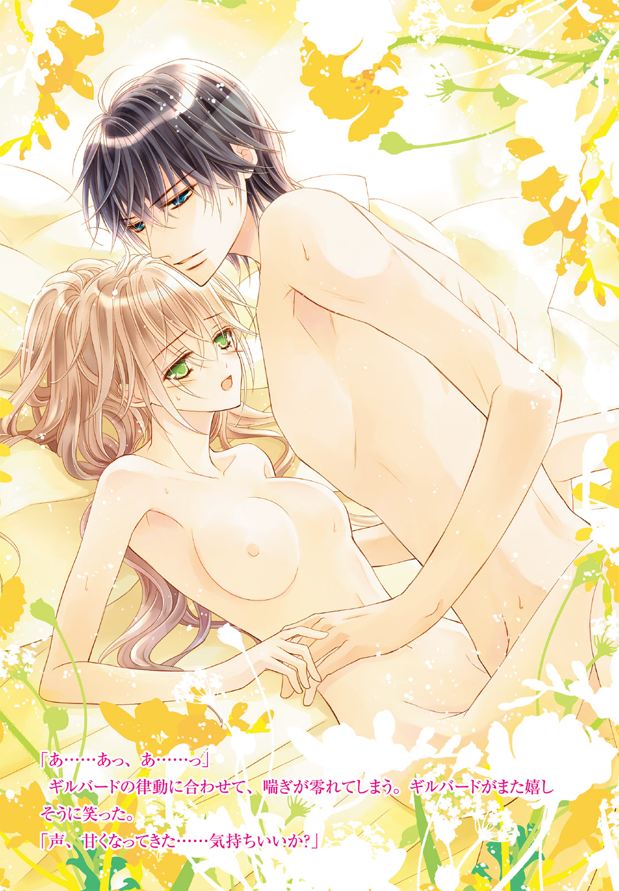
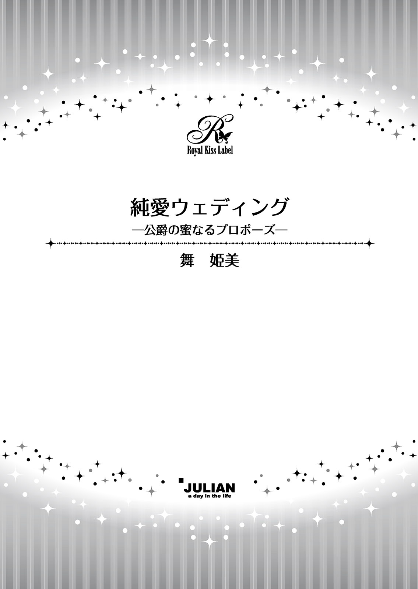
この物語はフィクションであり、実在の人物・団体・事件等とは、いっさい関係ありません。
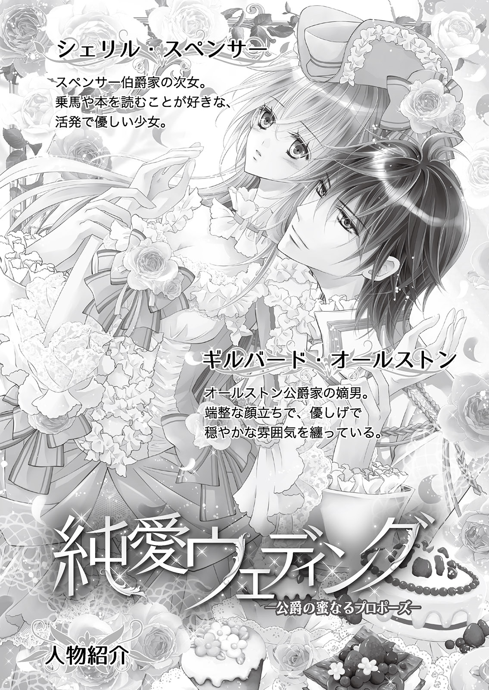
イラスト・龍 胡伯
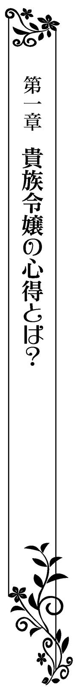
昼食のデザートに出たのは、たっぷりの生クリームを添えたキャロットケーキだった。ふわふわのシフォンを堪能したシェリルが昼食を終えてから厨房を訪ねると、スペンサー家の料理長は笑顔で出迎えてくれた。
「やっぱりいらっしゃいましたね、シェリルお嬢さま」
初老にかかった料理長は、シェリルが生まれる前から仕えている。シェリルが幼い頃の苦手な食べ物などもよく知っていて、まるで娘を見守るかのように接してくれる。
シェリルも彼を家族の一員のように思っているから、満面の笑みを返した。
「トリノなら、わかってくれると思ったわ！ 少し譲ってもらってもいいかしら？」
「ちゃんと取り分けてありますよ。どうぞ」
言いながら料理長は、食材をストックしてある棚から手提げの藤籠を取って渡す。籠の中には、美味しそうな人参が何本か入っていた。
今日のキャロットケーキに使用した材料だ。いつも食事に使うものよりも甘味が強く瑞々しいそれは、この季節のデザートにぴったりの食材だ。
シェリルの頬の笑みが、さらに深くなった。
「ありがとう、トリノ！ ジュリアも喜ぶわ！」
「ジュリアはお嬢さまがくれるものなら、なんでも喜ぶと思いますがねぇ」
「あら、そんなことはないわ。ジュリアは意外と美食家なの。美味しいものを食べるときは、それはもう嬉しそうな顔をするのよ」
「シェリルお嬢さまはすごい。馬のお気持ちもわかるんですか」
「ジュリアの世話は、つい最近までは私がしていたのだもの。彼女の気持ちなら何でもわかるわ」
「なるほど、そういうことですか」
「でも、母さまたちには内緒よ。ジュリアに会いに行くって知られたら、怒るもの」
少し悪戯っぽく続けたシェリルの言葉に、料理長は声を立てて笑う。シェリルはもう一度礼を言って厨房をあとにし、今度は厩舎に向かった。
厩舎ではこれから掃除をするらしく、中に入っていた馬たちが外に出されていた。
手綱はそれぞれ手近な木の幹にくくりつけられ、馬たちは足元の草を食べている。厩舎から出て青空の下にいることで、とてもリラックスしているように見えた。そんな馬の様子を見ると嬉しくなる。
使用人たちが丁寧に世話をしているおかげで、みな毛並みがいい。スペンサー家の三人の娘たちには自分用の馬が与えられていて、その中で一際目を引く、凛とした美しい白馬は、シェリルのものだった。
十歳の誕生日に、亡くなった祖父がプレゼントしてくれたものだ。当時は生まれて数ヵ月の子馬で、幼いシェリルの遊び相手でもあった。
三人姉妹の中で一番活発なシェリルは、幼い頃は人形遊びやままごとなどよりも、外に出ることの方が好きだった。外は息苦しさがなくて、のびのびできる。緑豊かな小道の散歩などが、当時から大好きだった。
乗馬を覚えてからは、遠乗りも好きになった。馬上で見るいつもよりも一段高い世界は、シェリルの心をより解放してくれる。
（年頃になったら、それもなかなかできなくなってしまったけど）
淑女は、おしとやかでいなければならない。乗馬好きだとか外に出ることが好きだなどとは、すぐにお転婆ではしたないと思われてしまう。
加えてシェリルは、読書も大好きだ。本には様々な知識が記されていて、どのようなものであれシェリルの中の世界を広げてくれる。
だが、貴族の令嬢は普通そんなものに興味は示さない。自らを美しく保つための手段やマナー、刺繍などに興味を持つものだと言われている。母や妹にそう諭され続け、年頃の今となっては、乗馬も散歩もぐっと減ってしまった。
忠告はとてもありがたいと思う。伯爵家の娘としてよい婚姻を結ぶためにも、そんな噂は立てないように気をつけた方がいい。自分のために言ってくれるのがわかるから、それらの忠告をシェリルはうるさいとは思わなかった。
ただ──心がなんだかひどく窮屈に感じるだけだ。
（わかっているけど、なかなか母さまたちの望む令嬢にはなれないのよね）
シェリルのその好みは同年代の娘たちの数人が知っていて、同じように忠告をくれていた。それもあって、社交の場に出ることがだんだんと億劫に感じるようになってきたことも否めない。
（でもパーティに出ないと、出会いの機会がぐっと減ってしまうし......）
半年前、長女のルイーズが幸せな結婚をしてからは、母と妹メリッサの警告が、ますます強くなったようにも思えてしまう。時々会う姉は、幸福感を漂わせているから余計だ。
（それはそうよね。ケイヴさまは優しくて包容力があって、妻一人を大切にされる方だし）
そんなルイーズを見ると、結婚に憧れる。好きな人の妻になり、その人のためにその人とともに生きていく──女性としての幸せの一つだろう。だがルイーズのように恋する相手がいないシェリルには、なかなか実感できないことだ。
（恋じゃなくても、誰か気になる人とかも......いないし）
これまでに会った異性の顔を思い出してみるが、印象に残る相手はいなかった。......ちらりと黒髪の青年の姿が胸をよぎったが、彼は家族同然の存在でシェリルにとってそういう対象にはならない。
焦ってもしかたがない。だが、母や妹に心配をかけてしまうことが申し訳なくもなる。
ふう、とため息をついて顔を上げると、白馬の顔が目の前にあった。
「シェリルお嬢さま？ そんなところで立ち止まって、どうなさったんですか？」
ジュリアの手綱を引いた使用人が、気遣うように呼びかけてくる。こんなに近くに来るまで気づけなかったとは、恥ずかしい。
「な、なんでもないわ！ ちょっとぼんやりしてしまっただけよ。ジュリア、今日もあなたは綺麗ね」
ジュリアが鼻面を、シェリルの頬に優しく押しつけてくる。シェリルを気遣う優しさが伝わってきて、心が癒された。
自分が名付け親となり、小さい頃は使用人たちの知識も借りて世話をして可愛がっていたためか、ジュリアはシェリルを親のように慕ってくれている。だからこそ、気落ちした表情を見逃さず、こうして慰めてくれる。
シェリルはジュリアの顔を優しく撫でて、大丈夫だと伝えた。ジュリアの背に乗って領地をひと巡りしたら、間違いなく気持ちは晴れて元気になれるのだが。
「ありがとう、ジュリア。あなたは優しい子ね」
ジュリアは嬉しそうにひと鳴きすると、シェリルに自分の背を見せる。まるで乗れと言っているような仕草に、シェリルはますます笑った。
（そうね。もうだいぶ長くジュリアに乗っていないもの。館の周囲をひと周りするくらいなら......）
「シェリルお嬢さま、もしやジュリアに乗りに来たんですか？ 奥さまにお許しはいただいたんでしょうか......」
シェリルが叱られてしまうことを心配して、使用人が気遣ってくれる。シェリルはハッと我に返り、慌てて答えた。
「あ......違うの。美味しい人参を譲ってもらえたから、ジュリア達にと思って」
籠を使用人に渡し、中から一つ取って掌に載せて差し出すと、ジュリアは嬉しそうに食べてくれた。
「美味しい？」
問いかけに答えるかのように、ジュリアは小さく鳴く。
「よかった。みんなで仲良く食べてね」
「わざわざすみません、シェリルお嬢さま。申し付けてくだされば取りに伺いましたのに」
伯爵家の令嬢が厩舎にまで足を運ぶことなど、あまりない。恐縮する使用人に、シェリルは柔らかく笑いかけた。
「ソファに座ったまま刺繍やおしゃべりだけしていたら、足がなまってしまうわ」
大袈裟な物言いに、使用人は笑う。
三人姉妹の中で、シェリルが一番館の使用人たちとは仲がよかった。活発な分、こうやって彼らとの接触が多いからだろう。
「いつもジュリアたちの世話をしてくれて、ありがとう」
「またそのような......お嬢さまが私たち使用人に、そう簡単に礼などおっしゃってはいけません。威厳がなくなってしまいます」
「そんな威厳はあっても仕方ないわ。ありがとうと言うのに、身分は関係ないでしょう？」
シェリルはきっぱりと言い切る。使用人の彼は、シェリルのその言葉に感激したように満面の笑みを浮かべた。
「私たちは、お優しいシェリルお嬢さまのことがとても好きなのですよ」
「ありがとう！ 私もいつまでもあなたたちに恥ずかしくないようにしたいわ」
言いながらシェリルは、使用人が持っていた袋を指差す。
「ブラシはある？ せっかくここまで来たんだもの。ジュリアをブラッシングしてあげたいの」
途端にジュリアが嬉しそうに嘶いた。使用人は困ったように苦笑しながらも、袋からブラシを取り出す。
「ここは任せて。あなたは掃除の続きをしていて構わないから」
「はい、かしこまりました」
使用人は厩舎の掃除に戻っていく。シェリルはジュリアの身体を優しく撫でてから、ブラシを当てた。
「さあ、ジュリア。綺麗にしてあげるわね」
そして何度かブラシを動かしていたときのことだ。
「──お姉さま！ シェリルお姉さま、いらっしゃいますの!?」
「......」
妹のメリッサの呼び声が、耳に届く。動きを止めてしまったシェリルを、ジュリアが心配そうに見つめてきた。
黒曜石の瞳は、馬でありながらも人間と変わらず優しく気遣うものだ。シェリルは軽くため息をついた。
「ごめんなさい、ジュリア。もう行かなくてはいけないみたい」
ジュリアが気にするなと言うように、鼻面を頬に押しつけてくる。シェリルはジュリアの顔に軽くくちづけた。
「また来るわね！」
「シェリルお姉さま!?」
呼び声はさらに近づいてくる。ジュリアと戯れているところを見られたら、説教されてしまいそうだ。シェリルは慌てて妹の方へと向かった。
シェリルの姿を見つけると、メリッサは笑顔を見せた。だがすぐに訝しげな顔になる。
「お姉さま、どこに行ってらしたの？ まさか、厩舎？」
「そこまでは行っていないわ。ただ散歩をしていただけ。今日はお天気もいいし、風も気持ちいいでしょう？」
「またそんなことをおっしゃって......!! 外に行かれるなら、ちゃんと日傘をさされて！ お肌が焼けてしまったらどうなさるの!?」
そう叱責するメリッサの手には白いリネン生地の日傘があり、陽の光を遮っている。メリッサはシェリルに走り寄って隣に並び、日傘の陰に入れてくれた。
そこまでしなくてもいいと思うのだが上手く断ることもできず、シェリルはされるがままになる。
「あ、ありがとう、メリッサ。でも、私を探しに来てどうしたの？ 何かあった？」
「今夜はルイーズお姉さまのところのパーティでしょう？」
数年前にリンデルフォード伯爵子息ケイヴと結婚した長女のルイーズが、今夜、内輪の小さなパーティを開く。招待状はシェリルたちにも届いていた。
内輪とはいえケイヴの交流関係を考えれば集まる人物はそれなりの者たちだと予想はできて、メリッサは社交の場に出ていくことにずいぶん積極的だった。だが、シェリルは違う。招待してくれたのもシェリルの出会いの場に使えばいいと気遣ってくれているとわかるから、余計だ。
心配してもらえるのは嬉しいが、こう連続だと疲れてしまう。違う主催者とはいえ、つい二週間前のパーティにもメリッサと参加したのだ。次は休んでもそんなに文句は言われないだろう。
ルイーズには悪いと思ったが、今夜のパーティは理由をつけて欠席するつもりだった。
シェリルは少し憂いを含んだ表情を作って、俯く。
「あ、あのね、メリッサ。私、今夜のパーティは断らせてもらいたいと思っているのだけど......」
「ドレス選びとかお化粧とか、今からしないと間に合わないですわ！ ケイヴさまのお知り合いならば、上流貴族の方々ばかりですもの。頑張りましょうね！」
──姉妹の言葉はぴったり重なってしまい、シェリルの言葉はメリッサには届かない。メリッサが、きょとんとこちらを見返してきた。
「何かおっしゃいましたか？」
「え......いいえ......なんでもないわ......」
メリッサの勢いに圧されるようにして、シェリルは首を振る。メリッサは気を取り直して笑いかけた。
「シェリルお姉さまは、私がうんと綺麗にして差し上げますからね！」
「そ、そんなに張り切ってくれなくても大丈夫よ。別にいつも通りで......」
「何をおっしゃいますの！ ルイーズお姉さまの次は、シェリルお姉さまがご結婚なさるのが道理というもの！ なのにお姉さまったら、いい感じの殿方がどなたもいらっしゃらないんですもの。私の方が先になってしまうなんて嫌ですわ......」
シェリルなどよりもずっと社交的なメリッサは、パーティなどでは上手く立ち回っている。男性にダンスに誘われたり声を掛けられたりすることもしばしばだった。外見も、可愛らしいからだろう。同じ姉妹でも、自分とはずいぶん違う。
「私は別に......急がなくても構わないのよ」
（私のことをわかって下さる方がいらっしゃれば、それが一番嬉しいことだけど......）
残念ながら、どのパーティに参加しても、そういった相手には出逢えなかった。今回も無理なのではないかと、シェリルは内心でため息をついてしまう。だからこその言葉だった。
（私のことをわかってくれる人......そんな人、この貴族社会にいらっしゃるのかしら......？）
──直後、胸の中にぽんっ、と思い浮かんだ人物が居る。まただ。自分の将来のことを考えると、最近なぜか彼の姿をよく思い浮かべてしまう。
昔からとてもよく知っている人物だが、彼は──ギルバードは、そういう対象ではないはずだ。幼い頃から一緒に過ごしてきて家族の一員のような──そう、いうなれば兄のような存在だ。ギルバードも、シェリルのことを妹として扱ってくれている。
ギルバードをそんなふうに見てしまうほど、自分は焦っているのだろうか。シェリルは知らずに赤くなって、小さく首を振った。
シェリルのそんな様子にまた訝しげな顔を見せたあと、メリッサは呆れたように首を振った。
「いけませんわ、お姉さま。いつまでもそんな調子では......このままではスペンサー伯爵家の一大事になりますわ！」
「一大事......」
そこまで言われてしまうと、パーティに参加したくないとは強く出られなくなってしまう。メリッサはシェリルを見返すと、満面の笑みを浮かべた。
「大丈夫です、ご安心なさって。私がお姉さまをとっても素敵にして差し上げますから、ぜひパーティに行きましょうね！」
「......あ、ありが、とう......」
姉思いの妹の言葉に、シェリルとしてはそう答えるしかなかった。
メリッサが準備したドレスは、深いワインレッド色のものだった。シェリルが滅多に身に着けようとはしない色だが、淡い亜麻色の髪と透き通るような若草色の瞳にはよく似合った。
未婚の令嬢の間で定番のデザインのドレスは、襟ぐりが丸く深めにカットされて、コルセットで押し上げた胸の膨らみが強調されるものだ。襟のラインには小さな真珠が定間隔に縫いつけられている。
髪は首筋のほっそりした感じを強調させるように結い上げられ、造花とレースでできた髪飾りをつけられた。後れ毛を少し作っているため、首筋に艶っぽさが生まれている。
袖のないドレスではあったが、長手袋ではなく普通の手袋で、しなやかな腕が露わになっていた。露出が多いように思えて隠そうとしたが、ストールがないため隠せない。
アクセサリーはすべて真珠で揃えてもらえたのは気に入った。しっとりとした輝きが穏やかな光を放って落ち着くのだ。
化粧もいつもより少し濃いめにされて、なんだか普段の自分とはずいぶん違うような気がする。それに広間に入った直後から、なんだか視線が方方から向けられているように思えて仕方がなかった。
「まあ......シェリル？」
優しく穏やかな姉ルイーズの声がかかり、シェリルはほっとして振り返った。柔らかな微笑を浮かべたルイーズとケイヴがそこにいる。
ケイヴはルイーズの腰を優しく抱き寄せていて、妻を気遣う甘い雰囲気を纏っていた。まだ子供がいないせいかいつまでも新婚夫婦のような甘い雰囲気が二人にはあって、自分もこんなふうに幸せな結婚ができるといいと、憧れるばかりだ。
シェリルはスカートをつまみ、腰を落とした。マナーや礼儀は完璧なはずだ。
「本日はお招きいただき、ありがとうございます」
姉妹としてではなく、招かれた招待客としての挨拶をする。ルイーズは満面の笑顔を浮かべた。
「いらっしゃい、シェリル。今日のあなたはとても綺麗よ。いつもよりもとても女らしいわ。ねえ、あなた」
「ルイーズの言う通りだ。私の義妹たちはとても綺麗で自慢だな。君の妹だからかもしれない」
伏せていた顔を上げれば、ケイヴがちょうど妻の額に軽いくちづけを与えるところだった。ルイーズはそのくちづけを満たされた微笑で受け止める。実に幸福で互いを想い合っている新婚夫婦の様子だ。
「今日はいいワインが手に入ったの。それをお客さまに振る舞うから、シェリルも楽しんでね。あなたはお酒が少し苦手だけど......少しくらいなら大丈夫でしょう？」
「ありがとうございます。ええ、少しくらいなら......それに、もう立派なレディですから、お酒も少しは飲めるようにならないといけませんでしょう？」
シェリルの返しに、ルイーズは嬉しそうに笑う。女性として少しは成長していることを感じて、喜んでくれているのだろう。
「そうね、あなたはもう立派なレディだもの。だから、安心してちょうだいね。こちらにいらしてくださった殿方たちは、ケイヴの知り合いばかりだから」
「......お姉さま！」
姉の赤裸々な台詞にシェリルが真っ赤になって声を高めると、ルイーズは笑う。
「だってあなたのドレス姿、とても綺麗なんだもの。もういつだって結婚できる歳なんだし、早く素敵な方を見つけて幸せになってもらいたいわ」
「お姉さまのように？」
「ええ」
その頷きに、妹のことを大切に想うからこその優しさが感じられる。
シェリルは小さく笑って首を振った。
「私よりも先に、メリッサの方が結婚すると思うわ。あの子は可愛くて......なによりも、社交的だもの」
「でも、まだ考えが幼いわ。少し向こう見ずなところもあるし......、私としてはあなたに比べるとまだまだ心配な妹よ」
片手を頬に当てて、ルイーズは軽く眉根を寄せる。シェリルは安心させるように笑いかけた。
「そんなことないわ、それは言い替えれば、行動力があるということでしょう？」
「......まあ、そうなるのかしら......」
「それはあの子の長所ですもの」
シェリルの言葉に、ルイーズは仕方がなさそうに笑う。
「じゃあ、そう思うことにするわね」
ルイーズが頷くと、背後に招待客の何人かがこちらにやって来た。シェリルと同じく、主催者の二人に挨拶しに来たのだろう。
シェリルはもう一度二人に頭を下げてから、その場を離れた。ひとまずメリッサのところに向かう。
ホール内にいくつか用意されているソファセットの一つに、メリッサはいた。同じ年頃の令嬢たちが、傍に何人かいる。メリッサたちの様子を見ると、顔馴染みのようだ。
「......そうなの、シェリルお姉さまのことが心配で......」
何やら自分のことで話をしているらしい。近づこうとした歩が、そのせいで止まってしまう。
それでも位置的に、会話が耳に入ってしまった。
「ええ、そうなの。シェリルお姉さまったら、まだ乗馬がお好きでいらして」
「それは......あまり女性らしくはないわね。活発と言えば聞こえはいいけど......」
「シェリルお姉さまは優しいから、ご自分の馬も自分で世話をしようとなさるの！ まるで使用人のようだわ。お姉さまはももう十八歳よ。スペンサー伯爵家の令嬢としての自覚を、もっと持っていただきたくて......」
「それは......とても心配ね、メリッサ......」
同情の表情で、彼女たちはメリッサを気遣う。メリッサたちにとって自分は、伯爵令嬢らしくないと言われているようだ。
「このままだとお姉さまには、どんな方からもお声がかからなくなってしまうわ。どうしたら、シェリルお姉さまをそんな心配がないようにできるのかしら......」
「大丈夫よ、メリッサ。あなたの気持ちはきっと伝わるわ」
「根気よくお諫めするしかないわね」
（令嬢らしくない......そうかも、しれないけど......）
反論する気にもなれずに、シェリルはその場を離れようとする。だが周囲をよく見ていなかったせいで、後ろからやってこようとした人の胸にぶつかってしまった。
「......っ！」
顔を相手のドレスシャツの胸元に勢いよく突っ込んでしまい、シェリルは慌てて体勢を立て直して謝罪しようとした。だがそれよりも早くシェリルの肩を掴んで支えてくれた相手が、心配そうに問いかけた。
「すまない......！ 大丈夫か？」
低く響きのいい声は、よく知っているものだ。彼もこのパーティに参加しているとは聞いていなかったシェリルは、驚きと安堵の入り交じった顔で、彼を見上げた。
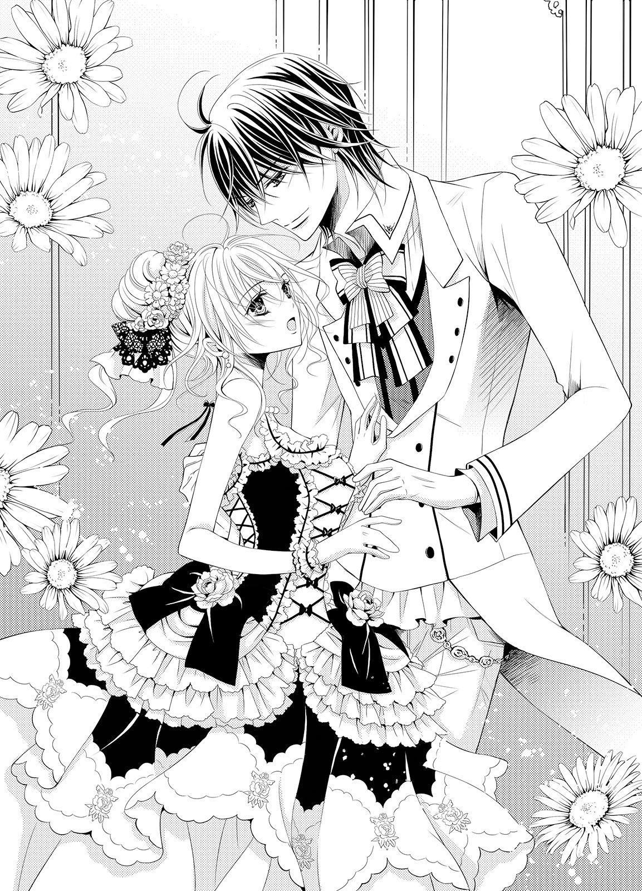
「ギルバード！」
光が当たると藍色にも見える黒髪に、透き通った蒼い瞳。盛装した身体はシェリルより頭一つ半ほど高く、支えられて密着しているイブニング・コートがよく似合っている身体は、鍛えている逞しさを持っている。実際、もたれかかってしまっているシェリルの重みは、まるで感じていないようだ。
幼い頃はよく熱を出してベッドに閉じ込められていた彼だとは、想像しがたいほどに立派だ。
ギルバード・オールストン。オールストン公爵の一人息子で、シェリルの三つ歳上の幼なじみだ。
年頃になり、ギルバードもオールストン公爵家子息としての仕事の一端を担うようになってからは、幼なじみとして頻繁に会うこともなくなった。数ヵ月ぶりに見るギルバードの姿に、シェリルは満面の笑みを浮かべた。
「ギルバードもこのパーティに呼ばれていたのね？ 教えてくれたら一緒に行けたのに！」
窮屈だった気持ちがギルバードのおかげで、解れていく。少なくともギルバードはシェリルの乗馬好きや本好きを困ったものだと窘めたりはしない。
ギルバードはシェリルの小さな不満に、苦笑する。その笑顔は、とても優しい。
「すまない。仕事の都合がつくかどうかわからなかったんだ」
「そう......仕事だったのなら、仕方ないわ。ごめんなさい」
自分勝手なことを言ってしまったことに気づいて、シェリルは視線を落としながら謝罪する。ギルバードは優しい笑顔のまま、首を振った。
「おかげで君の素敵なドレス姿が見れた。あまりにも綺麗で見とれてしまったくらいだ」
何だか狙いすぎのような今夜のドレス姿には落ち着きのなさを感じていたシェリルだったが、ギルバードのその言葉でほっとしてしまう。それでもまだ安心はできなくて、おそるおそる問いかけた。
「......でもちょっと......派手すぎでは、ない......？」
「君の好みではなさそうだな。......メリッサがやってくれたのかい？」
まるで見てきたことのようにギルバードは言う。シェリルは驚いて軽く目を見張った。
「そう......そうなの。すごいわ、ギルバード。どうしてわかったの？」
「まあ、君のことはよく見てるからな」
ギルバードが少し答えに困ったように言う。シェリルはその言葉に軽く頷いた。
「そうね。ギルバードは私の家族みたいなものだものね」
「......ああ、そうだな」
答えるギルバードの声は、少し強張った感じがした。シェリルがどうしたのかと改めて目を向けると、ギルバードはすぐにまた笑いかけてくれる。いつもと同じ、柔らかい笑顔だ。
優しげな顔立ちは端正に整っていて、女性を魅了するに充分なものを持っている。穏やかな雰囲気を纏っているから、どんな相手も話しやすそうだ。
すでに背後ではメリッサと話していた令嬢たちが、そわそわと落ち着かない様子を見せていた。
「まあ、オールストン公爵子息のギルバードさまよ......!! 相変わらずお素敵だわ......」
「容姿だけの方ではなくてよ。先日父から聞きましたけど、新規事業を始められて軌道に乗せられたとか。オールストン公爵さまは、とても優秀な跡継ぎに恵まれたと」
密やかに交わされるギルバードの現状は、シェリルには何だかひどく遠く感じる。幼い頃は病弱でよくベッドに入ってしまっていたギルバードの傍にいて、何でも話していた仲だったのに。
（最近のギルバードのこと......私、よく知らないわ......）
それが、少し寂しい。加えて自分の知らない情報をこんなふうに令嬢たちの噂話で知ることが、何だか悔しくも感じられた。
「シェリル、どうした？ ぶつかったときに、足でも捻ってしまったか？」
答えないシェリルの瞳を、ギルバードが心配そうに覗き込んでくる。急に端正な顔がくちづけも可能なほど近くに迫り、シェリルは反射的に離れようとした。
たっぷりとしたスカートの中で足がもつれてしまい、今度は仰向けに倒れそうになる。だがギルバードの片腕は予想していたかのように腰に回されていて、無様なことにはならなかった。
しかし、かえってギルバードとの距離が先ほどよりも縮まってしまう。気恥ずかしく、シェリルは慌てて顔を背けながら体勢をととのえた。
「......あ、あり、がとう......」
「どういたしまして。むしろ俺の声で驚かせたみたいで、すまなかった」
これで、ギルバードから離れることができる。そう思ったのに、彼の腕は腰に絡んだまま外れない。ギルバードの身体を近くに感じ続けていると、気恥ずかしさもさらに高まってしまう。
「......ギ、ギルバード......？ あの、もう大丈夫よ。手を離し......」
「ギルバード！」
メリッサの甘えた声が、シェリルの戸惑いの声をかき消した。はっとして見やれば、メリッサが子供のように走り寄ってくる。ここがパーティ会場ではなくスペンサー家やオールストン家ならば、抱きついていたかもしれない。
ギルバードが困ったように小さく笑って応えると、メリッサは空いている方の腕に抱きついた。
「ギルバードも来てたのね！ 会えて嬉しいわ！」
「メ、メリッサ。ギルバードさまと、お知り合いなの？」
まるで兄妹のようなやり取りに、思わずついて来た令嬢たちが軽く目を見張る。メリッサは満面の笑みを浮かべて頷いた。
「ええ、そうですの。昔からのお知り合いなの！」
「メ、メリッサ！ 声が大きいわ......!!」
羨望とわずかな嫉妬がない交ぜになった視線を向けられて、シェリルはいたたまれない気持ちになる。
「も、もしかして......その、ギルバードさまは、メリッサと恋仲とか......!?」
「メリッサは、俺の可愛い妹みたいなものだ」
令嬢たちが、どこかホッとしたような吐息をつく。
シェリルも同じような吐息をついてしまい、ハッとした。どうして自分も一緒になって安堵しているのか。
途端にメリッサが不満げな声を上げた。
「ひどいわ、ギルバード！ 私はもう立派なレディなのに！」
「陰で悪口を言うのが立派なレディなのかい？ 君にその意図がなくても、あれでは馬鹿にしているように聞こえてしまう。わかるね？」
優しく諭すような物言いだったが、ギルバードの瞳は笑っていない。メリッサが令嬢たちにシェリルの話をしていたことを、ギルバードは聞いていたのだ。
静かな怒りはメリッサをしゅんっと項垂れさせる。話を聞いていた令嬢たちも、居心地悪そうに視線を落とした。
「ごめんなさい......そんなつもりはなかったの」
「俺に謝るのは違うだろう？ さあ、メリッサ」
ギルバードがメリッサの腕を離して、シェリルに向きなおさせる。優しい仕草だったが、拒めない強さがあった。
メリッサは気まずそうにしながらも、シェリルに謝った。
「ごめんなさい、お姉さま......」
「だ、大丈夫よ、メリッサ。私のことを、心配してくれただけよね？」
シェリルは妹の落ち込んだ様子が可哀相に思えて、慌てて笑って言い返す。メリッサはしょんぼりとした顔のままで頷いた。
シェリルはこの辺でいいだろうと彼を見返す。ギルバードは仕方なさそうに軽くため息をついた。
「いい子だ、メリッサ。俺ももう怒っていない」
途端にメリッサは顔を輝かせた。
「よかった！ ねえギルバード、踊って！」
無邪気にねだるメリッサの言葉に、ギルバードはなぜかこちらを見てくる。何か言いたげな蒼い瞳に、シェリルは戸惑ってしまう。
ギルバードは今度は小さく吐息をついてから、メリッサの手を取った。
「わかった。行こう」
さらに嬉しそうに笑って頷いたメリッサの手を引いて、二人は一緒にホールの中心へ入っていく。
シェリルは二人の楽しげな様子を、その場で見守ることにした。自分もギルバードと踊りたかったが、焦らなくてもいい。いつものようにメリッサのあとに誘ってくれるだろう。
そのシェリルに、先ほどの令嬢たちが尋ねてきた。
「あ、あの、シェリルさま？ ギルバードさまと昔からのお知り合いとは、どういうことですの？」
まだ婚約者どころか恋人もいないギルバードだ。彼女たちが気になるのも充分にわかる。
別に隠すことでもないため、シェリルは素直に教えた。
「父が、ギルバードさまのお父さまと親友で、幼い頃から今も交流があるんです」
「まあ......幼なじみなのですね？」
「ええ、そうなんです」
自分たちの関係をわかりやすく一言で表すならば、その言葉が一番しっくりする。シェリルが頷くと、令嬢たちはまた安堵の息をついて、それぞれに立ち上がった。
必要な情報だけを得れば、あとはシェリルに用はないらしい。シェリルも引き止めるつもりもなく見送り、三人がけソファに一人で腰掛けた。
パーティの中を練り歩いている召使いの一人がワインを勧めてくれたので、とりあえずグラスは受け取っておいた。だが酒の類いにはさほど強くないため、口はつけない。
軽快なワルツの音楽に合わせて、ギルバードとメリッサが楽しげに踊っている。その二人に、ホール内の年頃の令嬢たちがうらやましそうな目を向けていた。
ギルバードが女性に人気が出てきていたことは聞かされていて、実際、偶然一緒になった社交の場でも今のように憧憬の眼差しを向けられる様子を目にしていた。何だか、またさらに人気が高くなっているように思える。
（あのギルバードが......なんだか、不思議）
幼い頃からギルバードを知っているシェリルにしてみれば、彼がこれほど人気者になるとは想像もしていなかった。
確かにここ数年で、ギルバードはぐんと男らしくなった。優しげで包容力を感じさせる雰囲気や、端正な顔立ち、そしてこの国の貴族たちの中では一、二を争うほどの財力と、王族の血を引くがゆえに政にも関われる権力もある。結婚にも適齢期だ。その彼がまだ独身なのだから、令嬢たちが妻の座を狙う気持ちはよくわかった。
だが、幼い頃のギルバードは身体が弱く、一日のうちのほとんどの時間をベッドで過ごすことの方が多い少年だった。無理をするとすぐに熱を出してしまうため目を離せなかった彼が、こんなふうに輝く存在になるなんて。
健康になって、喜ぶべきことなのに、なんだか置いて行かれたような淋しさを感じてしまう。
メリッサのダンスの相手をつとめながらも、ギルバードがこちらの様子を心配げに伺う視線を感じる。そんなに気になるほど、自分は頼りないのだろうか。
（ま、まあ確かにこうして一人でいても、男の人は誰も声をかけてくれないし......）
自分には、貴族令嬢としての魅力はないのだろう。このままではいけないと思うのだが、どうしたらいいのかわからない。
軽くため息をついたシェリルの瞳に、放置されたままのワイングラスが映る。しばしじっとそれを見つめたあと、シェリルはグラスにそっと口をつけた。
白ワインは口当たりがとてもよく、フルーティで優しく喉の奥に滑り落ちていく。とても美味しい。ルイーズが振る舞いたくなる気持ちがよくわかるものだった。
もう一杯飲めそうな気がして、召使いに声をかけようと周囲を見回すと、近くに立つ一人の青年に気づいた。
鳶色の髪と瞳を持つ青年だ。誠実そうな整った顔立ちをしているが、なんだか顔色が悪い。その表情から、シェリルは思わず声をかけてしまっていた。
「あの......大丈夫ですか？ ご気分が悪いのでしたら、座ってください。ここ、空いてますから」
「......あ、ありがとう......」
シェリルの隣に、青年が腰を下ろす。シェリルは近くを通りかかった召使いが持つトレーの上から、水のグラスを取って差し出した。
「どうぞ。お医者さまを呼びましょうか？」
「いや、そこまではしなくて大丈夫。水を飲んで少し休めば、治るから」
持病ならばなおさら、ちゃんとどこかで休ませた方がいいような気がする。シェリルは別室をルイーズに頼んで用意してもらおうと、ソファから腰を浮かせた。だがそれを、青年が慌てて止める。
「いや、本当に大丈夫なんだ。実は、酒が......苦手でね......」
ひどく言いにくそうに、青年は言う。シェリルは無言で青年を見返した。
青年は口元を片手で覆い、何とも気まずそうな顔をしていた。この年頃の男性で酒が苦手だと公言するのは、確かに躊躇われるだろう。
シェリルは安堵の笑みを浮かべて小さく頷いたあと、新たに問いかけた。
「ならもう一杯、お水をもらっておきましょうか。少し待っていてくださいね」
どれだけ口にしたのかはわからないが、相当弱いのだろう。シェリルは自分が飲むふうを装って、青年にもう一杯の水を渡した。
青年は少し意外そうにシェリルを見返す。
「君は僕を情けないとは思わないのかい？」
「体質の問題もあります。そんなふうに言わない方がいいわ」
シェリルはにこりと笑う。青年は水を飲んでいくぶん気分がよくなったのか、感謝の笑みを返した。
「よかったら、君の名前を教えてくれないかな。あまりこういう場では見ないご令嬢だ」
名前を教えるくらいならば、と思ったが、ちょうどそのときギルバードがシェリルを呼ぶ声が聞こえた。
「──シェリル！」
それをいいきっかけと思い、シェリルはソファから立ち上がった。
「ごめんなさい、連れがいるから。お大事にしてくださいね」
別に一緒にいることをギルバードと約束しているわけではないが、この場を立ち去るには都合がいい。メリッサとのダンスを終わらせたギルバードの元に、シェリルは急ぎ足で向かった。
ギルバードもなぜか少し焦ったような歩で近づいて、腕を掴む。意外なほどの強さで引き寄せられて、危うくギルバードの胸に顔を突っ込んでしまうところだった。
「ギ、ギルバード？ どうし......」
ギルバードが、ハッと我に返ったように瞳を見開く。いつものギルバードとは少し違う様子に、シェリルは戸惑いと心配の目を向けた。
ギルバードは片手で口元を押さえながら言った。
「いや、すまない......痛かったか？」
「い、いいえ......大丈夫よ。でもどうしたの？」
「シェリル、今の男と何を話し......いや、何でもない」
とてもそうは思えない。シェリルはさらにギルバードに問いを重ねようとする。だがギルバードはそんなシェリルを拒むようにして腰に片腕を回し、抱き寄せながら、ワルツの輪の中に入っていく。
急にダンスの輪に加わることに、シェリルは戸惑いの瞳でギルバードを見上げた。
「あ、あの、ギルバード？ まだ話の途中......」
「君と踊るのは久しぶりだ。嫌かい？」
そんなわけがない。シェリルだってギルバードと踊りたかった。何だかはぐらかされた気がしないでもなかったが、シェリルは目の前の楽しみを優先する。
「嫌じゃないわ！」
満面の笑みを浮かべてステップを踏むと、ギルバードも同じように笑ってくれる。
（ああ、楽しいわ！）
身体を動かすのが好きなシェリルにしてみれば、ダンスは好きなものの一つだ。相手がギルバードだと、特に踊りやすくていい。幼い頃にシェリルのダンスの練習によくつき合ってくれたのはギルバードだったからかもしれない。あのときは体格差が同じほどだったから、練習相手にちょうどよかったのだ。
（でも、今は違うわ......）
シェリルをリードしてくれる腕は力強く、重ねている掌はすっぽり包み込まれるほどに大きい。見上げなければギルバードの顔を見ることが出来なくなり、身体だけではなく仕草や話し方も大人っぽくなった。幼い頃の彼の面影は一生懸命探さないと見つけられなくなってしまっている。
それが、何だか少し寂しい。以前はもっとギルバードのことが手に取るようにわかっていたのに、今の彼はひどく遠く感じる。
ステップは軽やかでも、表情は曇ってしまっていたらしい。ギルバードはそのことに気づいて、優しく問いかけてくる。
「こういう場は、やっぱり嫌いか？」
「そうね。少し......苦手だわ。私はメリッサみたいに上手く立ち回ることができないから......」
ダンスをしながらのため、自分の愚痴もギルバードにしか聞こえない。だからシェリルは、素直に吐露してしまう。ギルバードの傍にいると、こうして色々と自分の気持ちを素直に口にしてしまっていた。
重なっていた手が、ふいにぎゅっと握りしめられる。シェリルはそれに促されるようにして、顔を上げた。
ギルバードが、安心させるように微笑んだ。
「メリッサの言うことは、気にしなくていい。それは君の個性だ」
（個性......）
自分を認めてもらえたような気がして、嬉しい。だが本当にそれでいいのかと、完全に安心はできない。
「ギルバードはそう言ってくれるけど、でも、やっぱりメリッサの言うことは正しいと思うわ。私はその......貴族令嬢らしくない......のよ」
「俺はそうは思わない。乗馬好きがはしたないなんて、短絡的すぎる。俺も馬に乗るのが好きだから、自分の妻が馬好きなら一緒に遠乗りとかに行けて楽しい」
妻、という言葉に、なぜだか鼓動が大きく震えてしまう。ギルバードからこんな言葉が出るのも、彼が結婚を考え始めているからかもしれない。
（もしかして、このパーティに参加したのも素敵な令嬢との出会いを求めて......？）
そんなふうには見えなかったが、あり得ないことではない。不思議なことにそう考えると胸の奥が小さく痛んで、シェリルは顔をしかめた。
（どうして、嫌な感じになるの......？）
ギルバードの視線を感じて、シェリルは慌てて言った。
「ギ、ギルバードも、素敵な令嬢との出会いを求めて参加したの？」
ギルバードの蒼い瞳が、瞬く。
「......なんでそうなるんだ？」
「だってほら、ギルバードを見てる女の方、たくさんいるもの。ギルバードにはまだ恋人はいないし......あなたの妻になりたいって思っているんだと思うわ」
こちらを見つめるギルバードの視線が、どんどん厳しく険しいものになる。彼とのダンスはとても楽しいもののはずなのに何だかいたたまれない気持ちになってきて、シェリルは慌てた。
「ギ、ギルバード......？ 私、何か変なこと、言ってしまった......？」
ギルバードは軽くため息をつく。
「君は、そう思っているのか」
「......ギルバード......？ あ......っ」
ギルバードの腰に回った腕に力がこもり、シェリルを強く引き寄せる。胸に片頬がついてしまいそうなほどの密着度に、シェリルは狼狽えた。
「ギ、ギルバード......あの......少し、くっつきすぎよ......？」
「そうか？ このくらい普通だろう。君が慣れていないだけだ」
少し、声が固い。何かギルバードを怒らせてしまったような感じがして、シェリルは口ごもる。
「そうだな。君の言うとおり、我が妻になる令嬢を探しにきたとしたら、どうするんだ？」
「どうって......」
シェリルは少し考え込む。深く考えると余計に胸が痛みそうだったから、シェリルはすぐに答えた。
「ギルバードの奥さまになる人とは仲良くなりたいから......そういう人ができたのなら、教えて欲しいわ」
「......どうしてだ？」
「だってギルバードは......私たちと家族のようなものだし」
「家族......ね」
今度はギルバードの不満さがはっきりとわかる声だった。シェリルはますます戸惑って彼を見上げるが、ギルバードは険しい横顔しか見せてくれない。
「シェリル、君は俺のことをどう思ってるんだ？」
「どう......って......」
ギルバードをこれ以上怒らせたくなくて、シェリルは懸命に答えを考える。
（ギルバードとは幼い頃から家族同然のおつき合いをしてきて......気心が知れていて......）
「そうね......兄妹みたいな感じかしら。私、ギルバードの傍にいるとすごく安心するし、一緒にいるととても楽しいのよ。でも最近はギルバードも忙しくなってしまったから、小さな頃みたいに会えなくて......それが、少し寂しいわ......」
ギルバードが、小さく笑みを零す。
「それでは俺は、君の兄か」
少し違うような気がしたが、今のシェリルにはそれ以外の上手い言い方を思いつけない。小さく頷きながら、言い訳のように続けてしまう。
「だ、だって私は、昔のギルバードをよく知っているから......」
「ああ、そうだな。病弱で弱くて情けない昔の俺を、君はよく知っている」
ギルバードを馬鹿にしているような言い方はしていないつもりだ。その声にどこか寂しげなものを感じ、シェリルは慌てて首を振ろうとする。だがそれを拒むかのように、ギルバードはまた強くシェリルを引き寄せた。
「ギ、ギルバード......？」
「だがな、シェリル。俺はもう、昔の俺とは違う」
「え......？」
ギルバードが何を言おうとしているのかわからず、シェリルの戸惑いは強くなるばかりだ。ギルバードはシェリルの方をちらりとも見やらず淀みなくダンスを続けたままで、余計に返す言葉に困ってしまう。
（ギルバード......怒って、るの......？）
不安になって見上げると、ギルバードはこちらを見返してきた。蒼い瞳に強く見つめられて、シェリルは息を詰まらせる。
（あ......また、この顔......）
最近のギルバードはこんなふうに時折、知らない人のような顔をしてくる。だから急にギルバードが何を考えているのかわからなくなり、遠くに感じられてしまう。
「ギ、ギルバード、変よ。なんでそんなこと聞いて......あ......」
少し責めるようにギルバードにそう言ったとき、シェリルの身体の奥に不快感が生まれた。急に気分が悪くなってきてシェリルの足がもつれる。
「......シェリル？」
すぐにそれに気づいたギルバードが、動きを止めた。
シェリルはどんどん気分が悪くなり、青ざめてくる。急にどうしてしまったのだろう。
それでもギルバードに心配をかけたくはなくて、落ち着くために深呼吸する。
「ごめんなさい、少し気分が......離れるわ」
「駄目だ。俺が連れていく」
「え......きゃ......っ」
急に身体が浮き上がったかと思えば、ギルバードの腕に抱き上げられている。シェリルの重みなど、まったく感じていないようだ。
パーティの参加者たちが、何事かとシェリルたちを見ている。女性陣は抱き上げられているシェリルを見て、傍にいる者たちとこっそり何やら話している者もいる。もしかして、変な誤解をされているかもしれない。
「ギ、ギルバード！ 大丈夫だから、降ろして......一人で歩けるわ！」
「そんな青い顔で言われても、説得力はまったくないぞ。シェリル、君、酒を飲んだだろう」
まさにギルバードの言う通りだ。どうしてわかったのだろう。
「君が酒に弱いことは、知ってるさ。さっきの男と話していて、浮かれてしまったのか？」
あの貴族青年と話していたところを、ギルバードは見ていたのか。メリッサと踊っていたのにそんな余裕があったのかと、別の意味で驚いてしまう。
だが、彼と交わした話の内容は、ギルバードの邪推からはずいぶんと離れている。反論しようとしたが、再び込み上げてきた胃のむかつきによって何も言えない。
「まあ、シェリル！ どうしたの？」
異変に気づいたルイーズが、こちらに走り寄ってくる。気分の悪さもあって答えられないシェリルに代わって、ギルバードが言った。
「ワインを飲んだあとに踊ったから、酔いが回ったみたいだ」
「ま、まあ......！ 大丈夫なの!?」
「少し休めば大丈夫かと。ルイーズさん、休める部屋を用意していただけませんか」
「ええ、もちろん。こっちよ」
当人を置いてきぼりにして、ギルバードがルイーズと話をしている。任せっきりはいけないと思うのだが、もたれたギルバードの胸が心地いい。
（なんだか、すっぽり包み込まれてるみたいで......）
シェリルは自然と目を閉じ、ギルバードに身を委ねた。
「......ギルバード、お熱......大丈夫？」
ベッドの中で、幼いギルバードは顔を真っ赤にして苦しそうな呼吸を繰り返している。
何か少しでも楽になる方法はないのかとシェリルは周囲を見回して、額に置いてあった濡れタオルを替えてやることにした。
タオルを手に取ると、それはもうずいぶんぬるくなっていて、サイドテーブルに置いてあった陶器製の洗面器に水が張ってあったので、そこでタオルを新たに濡らしてやる。
まだ幼いシェリルの手では、固く絞ることも大仕事だ。自分のワンピースの胸元やスカートを濡らしてしまいながらも、なんとか水が滴らないまでに絞る。
新しい水気を含んだタオルを額に乗せてやると、ギルバードは気持ちよさそうな息をついて、瞳を開いた。熱で潤んだ蒼い瞳がつらそうで、シェリルは胸を痛める。
「大丈夫......？」
「うん、平気......」
ギルバードは小さく笑って答えた。無理をしているのは幼心にもわかる。
「大丈夫、ずっと一緒にいてあげる」
シェリルの言葉に、ギルバードの瞳が見開かれた。シェリルは幼なじみを優しく見つめて続ける。
「私もお熱が出たとき、一人で寝てると寂しかったもの。だから、一緒にいてあげる」
ギルバードはしばらくじっとシェリルを見つめたあと、問いかけた。
「メリッサとルイーズは？」
「途中で遊びに行っちゃったの」
「シェリルは遊びに行かなくていいの？」
「明日遊べばいいから。今はギルバードの傍にいるわ」
ギルバードが大きく息をつく。自分が話しかけてうるさかったのかと心配になってしまったシェリルに、ギルバードはシーツの中から片手を出した。
「僕が眠るまで、手を握っていてくれる？」
「うん、いいわよ！」
ギルバードがまた嬉しげな顔をするから、シェリルも嬉しくなる。
ギルバードの手を握りしめると、熱のせいかいつもよりも熱かった。熱が下がれば、いつもの温かく優しいぬくもりになる。それがわかっているからシェリルは祈りを捧げるように、両手でギルバードの手を包み込んだ。
（温かい......）
思い出を辿った夢と現実が、掌のぬくもりで繋がっている。
夢の中では自分がギルバードの手を包んでいたのだが、今は誰かに包み込まれていた。温かくてとても安心する。
いったい誰だろうと思いながら瞳を開くと、こちらを見下ろしているギルバードと目が合った。ギルバードはひどく心配そうにこちらを見下ろしていた。
「大丈夫か？ まだ気分が悪いか？」
ギルバードの片手が伸びて、シェリルの頬を撫でてくる。その動きが思った以上に優しく心地よく思えて、シェリルはなんだか驚いてしまった。
「......ここ......は......？」
掠れた声で問いかけながら、周囲を見回す。ルイーズが用意してくれた休憩用の部屋なのだろう。ソファセットがあるだけのこぢんまりとした室内だ。そのカウチソファに、シェリルは横たわっていた。
端にはギルバードが座っていて、その膝を枕として提供してくれている。そして片手をシェリルと繋いでいた。現実のぬくもりは、これだったようだ。
包み込まれる掌の温かさにシェリルは微笑みながら、ゆっくりと身を起こした。ギルバードがシェリルの動きを助けてくれる。
「もう大丈夫。ありがとう、ギルバード」
お礼を言いながらカウチソファに座り直せば、ギルバードがこちらを見つめている。なにやら探られている気がして、居心地が悪い。
シェリルは逃れるように立ち上がろうとしたが、それよりも早くギルバードの手が髪に伸びていた。
「え......っ」
「駄目だ、シェリル。もう少し、じっとしていてくれ」
ギルバードの顔が近づいて、あと少しでくちづけられてしまいそうだ。シェリルは身を強張らせてしまう。
まさかギルバードが、自分にそんなことするわけがない！
（だ、だって私たちは、家族みたいなものでしょう......!?）
ぎゅっと瞳を強く閉じて、シェリルは息を詰める。ギルバードの吐息が頬に触れたから、ますます身が固くなった。
ギルバードの手が、シェリルの髪に触れた。そこに差してあった髪飾りの位置を直してくれる。
ギルバードは少しシェリルから身を離して様子を眺めると、満足げに笑った。
「よし。これで大丈夫だ」
（か、髪飾りの位置を直してくれただけ......）
なぜかがっかりしたような気持ちが、シェリルの心にほんの少しだけ浮かぶ。どうしてそんな気持ちを抱くのかと内心で慌てて首を振り、シェリルは今度こそ立ち上がった。
「ありがとう！ も、もう戻るわ！」
シェリルの慌てた様子に、ギルバードは苦笑する。そして扉に向かうシェリルの背中に、いつも通りの優しい声音で言った。
「もう酒を飲んでは駄目だぞ」
「わかっているわ。も、もう帰るから......！」
ギルバードに抱きかかえられて会場から離れたのだ。シェリルが戻れば興味津々にギルバードと何があったのかを問いかけられてしまいそうだ。別段何もないのだが、変に疑われないように上手く立ち回れる自信はまったくない。だったらさっさと帰宅した方がいい。
ギルバードはシェリルの言葉に、なぜかさらに満足そうに頷く。
「その方がいい。アルコールをちゃんと抜くためにも、自邸に戻ったらすぐに眠ることだ」
まるで小さな子供に言い聞かせるような口調だ。夢の中の幼いギルバードの面倒を見ていたのは自分なのに、今ではこんなふうに立場が逆転していた。
「そ、そんなことまで言われなくてもわかっているわ！」
シェリルはつい衝動的に反論する。
「......まったく......俺の気持ちなど、全然わかっていないんだな......」
愚痴るように続いたギルバードの言葉に、シェリルは肩越しに振り返りながら言い返した。
「私、そこまで子供じゃないわ！」
「......そういう意味じゃないんだがな」
ギルバードが少し困ったようなため息をこぼすのを背中で聞きながら、シェリルは部屋を飛び出した。
部屋を出て会場に向かうと、こちらにやってくるメリッサが見えた。
少し慌てた感じで誰かを捜しているようだ。シェリルが声をかける前にメリッサは姉の姿に気づくと、安堵の息をついて走り寄ってくる。
「ああ、お姉さま！」
「メリッサ、ごめんなさい。心配させてしまったわね」
メリッサはシェリルの隣に並んで、小さく首を振る。
「いいえ、大丈夫ですわ。ご気分は治りまして？」
「ええ。ギルバードが休ませてくれたから」
ギルバードの名を出した途端に、メリッサの表情が強張る。その様子にシェリルは訝しげに眉根を寄せた。
「メリッサ？ どうしたの？」
「......ギルバードと、ご一緒だったのですよね？ 何か、ありました？」
メリッサの問いかけに、シェリルの鼓動が大きく跳ねる。それはまるでギルバードと自分が密室で、何か不埒なまねをしていたとでも疑っているようではないか！
シェリルは真っ赤になりながら、激しく首を振った。
「へ、変な言い方はよして、メリッサ！ わ、私たちとギルバードは家族同然の関係でしょう。私にとってギルバードは兄のような人よ。そ、そんなことあるわけないわ！」
メリッサはシェリルの言葉を吟味するように、真剣な表情で聞いている。その瞳の真剣さは、シェリルが思わず息を呑んでしまうほどだ。
（......メリッサ......？）
「ねえ、お姉さま。もしも......もしもギルバードが私たちの近しい方を妻にされたらどうされます？ 例えば......私とか」
「え......？」
メリッサの問いかけは突然で、シェリルは答えられない。それでも想像してみて、なぜか胸にちくりと痛みを覚えた。
（どうして......）
表情が知らずに暗くなってしまう。それを見て、メリッサは慌てて言った。
「ごめんなさい、お姉さま！ 冗談ですわ。深く考えないで下さいませ」
「え、ええ......」
「さあ、帰りましょう」
いつも通りの笑顔でメリッサは歩いていく。息苦しいような痛みがやってきて、シェリルは思わず自分の胸元を片手で押さえる。
いつかギルバードも妻を娶る。わかっていることだ。家族ならば、祝福するべきなのに。
（胸が、苦しい......なんて......）
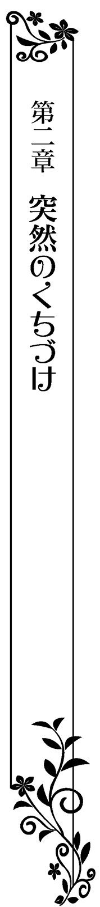
ルイーズの開催したパーティのあと、メリッサには男性からの手紙が届いたようだった。いつものことながら、シェリルにはそんな手紙は届かない。気にならないと言えば嘘になるが、こればかりはどうにもならないため、あまり考えないようにする。
その日、シェリルが館の一室でゆったりと本を読んでいると、メリッサのはしゃぐ声が耳に届いた。何だろうと窓辺に寄って見下ろせば、ちょうどエントランスホールに続く小道を、メリッサとギルバードが並んで歩いていた。
メリッサはギルバードの片腕に抱きついている。ちくり、と胸に小さな痛みを覚えたが、シェリルはそれを考えないようした。
盗み見をしているような気がして、窓辺から身を離そうとすると、何か視線を感じた。
窓を見れば、ギルバードがこちらをじっと見つめている。まるでここに自分がいることが、わかっているかのように。
偶然なのかもしれないが、なんだかギルバードの視線に息苦しさを覚えてしまう。シェリルはそれから逃れるように、窓に背を向けた。
ギルバードの視線に追い立てられるように部屋を出て自室に戻ろうとすると、前から召使いの一人がやってきた。その手は二段式のワゴンを押していて、そこには柔らかな優しい香りが立ち昇る四人分のティーセットの用意がされている。カップの個数からして、ギルバードの分も入っているだろう。
召使いはシェリルの姿を認めると、満面の笑みを浮かべた。
「シェリルさま、ギルバードさまがお見えになられました。オールストン公爵夫人からのお菓子をお持ちくださったとのことです」
公爵夫人からのお菓子ならば、絶品に間違いない。甘いものが大好きなシェリルとしては、ぜひ味わいたいところだ。
だが、ギルバードのあの強い瞳が気になって、すぐには頷けない。シェリルは少し躊躇ったあと、言った。
「私は......」
「シェリルさまも、是非ご一緒にと」
断ろうと思ったのに先回りされてしまって、シェリルは口を噤む。
「わかったわ。じゃあ、一緒に行きましょうか」
ワゴンを押す邪魔にならないようにしながら、シェリルは召使いとともに客間に向かう。
客間にたどり着くと、中からメリッサと母親の楽しげな声が聞こえた。それにギルバードの相づちも聞こえる。
気さくな空気は、家族のそれにとても近い。いつものギルバードと変わらない感じだ。先ほどの居心地悪いような感覚もなく、これならば大丈夫そうだ。
客間の扉をノックして室内に入ると、ギルバードたちはソファセットに座って談笑していた。ギルバードはシェリルに気づいて笑いかける。
「やあ、シェリル。母上から美味しいお菓子を持っていくように言われたんだ。君も、食べるだろう？」
テーブルの上には最近注目されている菓子店のパッケージの箱が置かれている。シェリルもこの菓子店のマカロンやチョコレートが好きで何度も取り寄せていて、思わず顔がほころんでしまった。
「もしかして新作のスイーツ!? 何があるの？ 新作のものはまだ食べてないの」
「いいタイミングだったみたいだ。ほら、これ」
いそいそとテーブルに近づくと、ギルバードがすぐに隣に座り、おすすめの菓子を見せてくれた。箱の中には繊細なデザインの色とりどりの菓子がいくつも並んでいて、食べるのがもったいない。
ギルバードが薦めてくれたのは、ミルフィーユだ。召使いから取り皿を受け取って、自らサーヴしてくれる。
「さあ、どうぞ」
「あ、ありがとう！」
なぜかドキリとしながら皿を受け取ってフォークで食べてみれば、その味は絶品だ。
サクサクのパイ生地ととても滑らかな舌触りのカスタードクリームが混ざると、何ともいえない触感で楽しい。カスタードクリームにはバニラビーンズが効いていて、飲み込んだあともほんわりと口中にその優しい香りと味が残るほどだった。
上部にはさらさらのパウダーシュガーがかかっていて、それもまたほどよい甘さのアクセントを与えてくれている。あまりの美味しさに、シェリルは満面の笑みを浮かべた。
「美味しい......!! これ、初めて食べるわ！」
「今月の新作らしい。母上が食べて絶品だって言うから、俺も食べてみた。シェリルが好きな味だろう？」
「ええ......!!」
「パティシエの話によると、これに好きな果物をトッピングしてもいいらしい。......ラズベリーとかは、どうだ？」
「美味しいと思うわ！」
想像しただけでも、その美味しさにとろけそうになる。ギルバードが召使いに目配せすると、彼女は微笑みながらワゴンの下段から小さな器を取り出した。
そこには小さく刻まれたラズベリーが入っていた。
「そう言うと思って、用意させておいた」
ギルバードがスプーンでラズベリーをすくい、ミルフィーユの上にかけてくれる。早速口にすれば、甘酸っぱいラズベリーの味と触感が新たなアクセントになって、また絶品だった。
美味しい菓子を食べていると、とても幸せな気持ちになれる。
にこにこと笑いながら食べていると、ギルバードの視線を感じた。いつの間にか当然のようにシェリルの隣に座って、こちらを楽しそうに見つめている。
先ほど窓から見たときの視線とは違う優しく甘い瞳だったが、それにもまた、不思議な居心地の悪さを覚えてしまう。どうしてギルバードは自分のことを、最近こうしてじっと見つめることが多いのだろう。
「な、何......？」
「いや、幼い頃と変わらないなと思っただけだ。シェリルは美味しいお菓子に目がなかっただろ。それは今もやっぱり変わらないんだな。......ついてる」
ギルバードの指がシェリルの唇の端を、そっと拭う。指先にシュガーパウダーが移って、シェリルは恥ずかしさに目元を染めた。
「や、やだわ。今、拭くものを......」
「大丈夫だ」
ナプキンをギルバードに差し出そうとしたら、その指はぺろりと舐められた。その仕草に、シェリルはなんだかひどくドキドキしてしまう。
途端にメリッサが、少し呆れたように忠告してきた。
「シェリルお姉さまったら......男の方にそんなことをされるなんて、恥ずかしいですわよ」
「......ご、ごめんなさい」
シェリルもそう思うから身を縮め、ほんの少しギルバードとの空間を開けるように腰を動かした。だがギルバードはさりげない仕草ながらも広がった距離を詰めてきて、二人が寄り添う位置は結局変わらない。
メリッサがむうぅっ、と唇を尖らせる。
「ギルバードはお姉さまを甘やかしすぎですわ！」
「そんなつもりはまったくないさ。もともとミルフィーユは食べにくいものだから、仕方がないだろう？」
「それはそうですけど。でもお姉さまったら、そういうところが昔から成長がないみたいに思えてしまって......」
メリッサにも、ギルバードはケーキをサーヴしてくれる。取り皿を受け取ったメリッサは、ふいに何かを思い出したかのように小さく笑った。
どうかしたのかとメリッサに目を向けると、彼女はフォークを置いて言った。
「いえ、ちょっと昔のことを思い出してしまって......ほら、お姉さまってば、小さい頃はずいぶん活発だったでしょう？ ギルバードが見せに来てくれた子犬と一緒に庭を駆けずり回って転んで、どろんこになったときがあったわと思って」
「......っ!!」
メリッサの思い出話に、シェリルは食べていたケーキで喉を詰まらせてしまいそうになる。母親が懐かしそうに目を細めて頷いたが、すぐに神妙な顔になった。
「そんなこともあったわね。あの頃はまだ幼いからと思っていたけれど......今はだいぶ落ち着いてきたとはいえ、まだ乗馬好きなんて、そろそろ淑女のたしなみを身につけて欲しいものだわ......」
「本当に。シェリルお姉さまもそろそろ結婚されたっておかしくないのに、そういうお相手が未だにいらっしゃらないのも心配だわ」
メリッサと母親は、まるで申し合わせたように嘆くようなため息をつく。
「メリッサは大丈夫そうだけど、シェリル、あなたには......」
それ以上は聞きたくなくて、シェリルは衝動的に立ち上がった。
「ちょっと、さっきの部屋に忘れ物をしてきてしまったみたい！ 席を外すわね！」
「シェリル！ 待ちなさい、まだ話は終わっていな......」
母親の小言が出てくる前に、シェリルは部屋を飛び出した。
先ほどの部屋に忘れ物などしてはいない。シェリルは理由にした部屋を素通りし、庭に向かった。息苦しい感じを覚えると外の空気を吸いたくなる。
シェリルは庭に出ると、手近な大木の隣で大きく深呼吸した。おかげで、胸に詰まったような感覚が解消される。
シェリルは大木の幹に片手をついて、それを見上げた。ふと、心によぎるものを感じて瞳を細める。
（この木......）
──幼い頃の記憶に残る大木だった。ギルバードが遊びに来てくれたときにこの木の根本に鳥の雛が落ちていて、皆で巣に戻すにはどうしたらいいのか悩んだ事があった。
色々と考えても幼い知識では木登りをして戻すことしか考えられず、そしてそれをできる者はシェリルたちの中にはいなかった。ルイーズは大人を呼びにいくと言って離れ、メリッサはこの場にずっと居続けることに飽きて離れてしまい、シェリルとギルバードと二人だけになってしまった。
さすがに活発であるシェリルも、木登りはできない。身体が丈夫ではないギルバードだったが、雛を大事に両手で包み込んでいるシェリルのことを見やると、意を決したように大木を見上げた。
「シェリル、僕が登ってみるよ」
「駄目よ、危ないわ！ だってギルバードは、身体が......」
「僕は男だよ。きっと大丈夫」
シェリルを安心させるように、ギルバードは柔らかく微笑みかけた。優しくて穏やかな中にも、少年の強さと頼りになれるところを見えた気がして幼心にもときめいた。その頼もしさと優しさは、幼い頃も今も変わってない。
あのあとルイーズが大人たちを連れてきてくれて、結局、雛は彼らの手によって巣に戻された。シェリルは当時の思い出を反芻し、唇をほころばせる。
その背中に、ギルバードの声がかかった。
「シェリル」
びくっ、とシェリルは身を強張らせてしまう。
ギルバードには自分が部屋から飛び出してしまった理由が、わかっているのだろう。呼び声は、いたわりと優しさに満ちていた。
「シェリル、大丈夫か？」
「だ、大丈夫よ！」
ギルバードに優しくされるとなんだか胸がもやもやして、振り返ることができない。
背後に近づく気配があって思わず逃げるように一歩を踏み出したが、大木の幹に抱きつく格好になってしまう。それを見て、ギルバードが訝しげな声を続けた。
「......シェリル、何してるんだ？」
「い、いえ......な、何でも......」
「ならば、こちらを向いてくれ」
それには、応えられない。今の自分の顔を、ギルバードには見られたくなかった。
ギルバードが、柔らかく優しい声で言った。
「シェリル、メリッサやスペンサー夫人の言っていることは気にしなくていい」
シェリルの鼓動が、とくん......っと小さく音を立てる。ギルバードがもう一歩近づいてきたが、シェリルは動かなかった。
「い、いいのよ、ギルバード。私は気にしていないの。メリッサやお母さまの言っていることは正しいわ。こんな淑女らしくない私の未来を不安に思うのは、仕方ないことだもの。良い相手を迎えて、その方の跡継ぎを残すことが......」
（それが、貴族令嬢としての大事な役目。だから私もそれを全うしなければいけない）
でもどうしてだろう。その役目を理解しているのに、胸が息詰まるような苦しさを覚える。籠の中に捕らわれているような気がしてしまう自分は、おかしいのだ。
「......それが、貴族令嬢としての......」
シェリルは先を続けることが出来なくなって、木の幹に額を押しつける。シェリルの背後に優しい温もりが重なったのは、直後のことだった。
シェリルの背中を包み込むように、ギルバードが身を重ねてきた。抱きしめられるかと思って反射的に身を固くしてしまったが、ギルバードは両手を木の幹に押しつけたままだった。
両腕に柔らかく囲まれて、息苦しいような感覚を覚える。だがそのぬくもりがシェリルのすべてを包み込んでくれる温かさもあって、不覚にも泣いてしまいそうだ。
ギルバードがシェリルの耳元で、囁くように言った。
「シェリル、人の心は自由だ。皆が同じように動いているからといって、君も同じように動く必要はない。皆とは違うように行動したいと思う心は、個性というんだ」
（個性......）
自分も、メリッサの思い詰めやすいところをそんなふうにルイーズに諭した。だがギルバードが言うと、もっと納得できるから不思議だ。
ギルバードの言葉は、シェリルの固く縮こまってしまいそうになる心を柔らかく解す。シェリルは泣き出す一歩前の顔を見られたくなくて、そのまま動けずにいた。だがこれだけ密着していれば、ギルバードにはこちらの様子が伝わってしまう。
ギルバードがさらに優しい声で問いかけた。
「泣きたいんだったら俺の胸を貸そう。そういうふうに我慢されるのが、一番つらい」
「......泣いて、ないわ！ こ、このくらいのことで、泣いたりなんてしないわ！」
「じゃあ、こちらを向いてくれ。俺はシェリルの泣き顔を見るのが、とても苦手なんだ」
シェリルは大きく息をついて、気持ちを整える。幼い頃は自分が守っていたはずのギルバードが今ではこんなふうに気遣ってくれて、嬉しいけどなんだか寂しかった。
シェリルは気持ちを立て直すと、ギルバードに向き直りながら言った。
「ギルバードにそんなふうに気遣われるようになるなんて、私もちょっと弱っていたみたいだわ。情けないところを見せてごめんなさい」
ギルバードが、小さく苦笑する。
「俺に気遣われるのが、そんなに嫌なのか？」
「そういうわけじゃないわ。家族に心配かけたくないのは、当然のこと......」
ギルバードが、静かに強い瞳でこちらを見据えていた。
長めの前髪の奧にある蒼い瞳には、息詰まるほどの強い光がある。普段の彼からは想像もできないほどの、冷たい瞳だった。
（ギルバード......怒ってる......？）
どうして、と問いかける前に、ギルバードが低い声で言った。
「シェリル、はっきり言っておきたい事がある。俺と君は家族同然のつき合いではあっても、血の繋りはない」
「そ、それはそうよ。でも昔から知っている仲だし、特にギルバードは小さい頃は身体が弱くて私たちはいつも心配して......」
「俺はもう、昔の俺とは違う。家族じゃない。ちゃんとわかってもらえないと──俺もそろそろ本気を出さざるを得なくなる」
「......え......っ!?」
ギルバードの端正な顔が、視界いっぱいに近づく。そのあまりの近さに驚いて目を見開くと、ギルバードの唇がシェリルの唇に触れた。
くちづけられている、と認識した直後、シェリルは反射的にギルバードの胸に手を置いて押し返そうとする。だがギルバードの方がそれよりも早く、シェリルの身体を両腕で拘束するようにきつく抱きしめた。
（な......に、何......!?）
もがいても、まったく逃れることができない。唇はやさしく重ねられるだけには留まらず食むように動いて、シェリルの柔らかなそこを押し開いてきた。
何をされるのかわからないままでいるシェリルの唇を押し開くと、肉厚で濡れた感触が押し込まれてくる。ぞくりと背筋が不思議な心地よさに震えて、シェリルは大きく目を見開いた。
「......ん......んっ!?」
胸を押し返そうともがけばもがくほど、ギルバードのくちづけは深く激しくなっていった。シェリルはぎゅっと目を閉じて、ギルバードの舌から逃れるために身を固くする。
「ん......や......ん......っ」
熱い口中で縮こまってしまっているシェリルの舌を探すように、ギルバードの舌が動き回った。舌先が歯列をなぞり、頬の内側や上顎のざらつきまで、舐めくすぐってくる。息まで吸い取られてしまったかのようで、シェリルは身を震わせた。
「......あ......ん......んん......っ」
ついに舌が搦め捕られ、舌先がシェリルのその感触を味わうかのように舐め回してくる。甘味が溢れ、それを喉を鳴らして飲み下してしまう。
「......あ......い、や......駄目......」
くちづけの合間に、何とか拒絶の言葉を紡ぎ出す。ギルバードが怒るようにさらに舌を潜り込ませてきながら、シェリルの後頭部を片手で捕らえてきた。
柔らかな亜麻色の髪を握りしめるようにして、ギルバードは飲み込むようにくちづけを繰り返す。恋人でもないのにこんなことをしてはいけないと告げようとするのに、それすらもギルバードに吸い取られてしまう。
（これは......いけないわ、駄目よ......）
「......ふ......ぁ......駄目......っ」
「......シェリル......」
息継ぎの合間に呼びかける声が、とても甘く切ない。まるで恋い焦がれている相手の名を呼んでいるように思えるから、不思議だ。
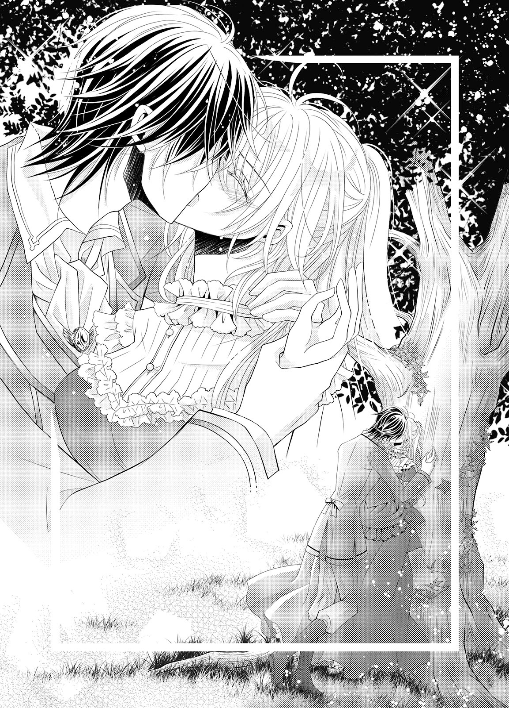
どうして、このくちづけを心地よく感じるのだろう。
「......は......ふぁ......」
がくがくと膝が震えてしまい、そのまま崩れ落ちてしまいそうになる。そんなシェリルの身体を、ギルバードの腕は力強く支えてくれる。ギルバードの男らしい強さをまざまざと感じて、シェリルはさらに身を震わせた。
（ど、どうしよう......意識が、遠くなりそう......）
搦め捕られ、擦りつけられる舌の熱い感触が、心地よい。だがこんなに深いくちづけをするのは初めてで息継ぎが上手くいかず、くらくらしてきた。
意識をなくしてしまいそうで怖くなる。シェリルは無意識のうちに、ギルバードの上着の胸元をきつく握りしめた。
「......ふ......っ」
シェリルの唇から、ようやくギルバードの唇が離れた。
ギルバードは、シェリルを自分の胸にもたせかけるように支えてくれた。そしてなだめるように背中を撫でてくれる。
ギルバードの肩口に額をもたせかけながら、シェリルは荒い呼吸を繰り返す。ふと、今更のようにギルバードの背の高さに気づいた。
（昔は、私と変わらなかったのに......）
「大丈夫か......？」
大丈夫ではない。呼吸も乱れてなかなか整わず、膝もまだ震えたままだ。だいたいこんなふうに突然くちづけてくるなんて......。
（なのに私......怒れない）
だって、くちづけがとても気持ちよかった。
シェリルは頬を赤くして、その想いを胸の奥に押し込める。
「どうして、こんなことを......私、ファーストキス......」
呼吸が整い始めてから、シェリルは問いかける。ギルバードはシェリルの背中を撫でながら、続けた。
「悪いが、謝らない」
シェリルは瞳を瞬かせてしまう。
（謝らないって、それって......）
ギルバードは自分とこうしたかったのか。それはつまり自分のことを......？
シェリルの身体が、そっと離される。俯いたままだったシェリルが顔を上げると、ギルバードはもう背中を向けていた。
「先に戻る。じゃあ」
ギルバードを追いかけることもできず、シェリルは木の幹に背中を預けた。呼吸はようやく落ち着いたが、すぐには歩けそうにない。それくらい、あのくちづけは深く激しくて──ギルバードの熱い想いが感じられた。
シェリルは自分の唇を指先で押さえる。濡れた唇は熱く、少し腫れているようにも思えて、目元を赤くした。
（私......ギルバードにキスされて、嬉しい......？）
胸元をもう片方の手で押さえれば、鼓動がとくとくと震えるように脈打っている。これではまるで、ギルバードのことを好きになっているようではないか。
（ギルバードはこれまで家族同然だったのよ。そんなこと......そんなこと、あり得ないわ......）
シェリルはそのまま木の根本に、ずるりと座り込んでしまう。そしてワンピースのスカートの裾が汚れるのも構わず、小さな子供のように膝を抱えた。
（わからない......私とギルバードは、これからどうなってしまうの？ どうして私にキスなんてしたの？）
シェリルの心は嵐のように揺れ動いてしまう。ギルバードが原因だから、どうしたらいいのかわからない。
「ギルバードの......馬鹿......」
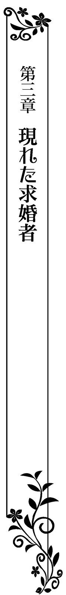
ルイーズが友人マリーとともにスペンサー家を訪ねたのは、それから数日後のことだった。
マリーはシェリルにとっても古馴染みだが、今では結婚した彼女がスペンサー家に来るのは珍しいことだった。
来訪の理由に興味は沸いたが、自分にはまったく関わりがないことだろうと思って、シェリルは自室で読書の手を休めることはなかった。
ぱらり......、と、次のページをめくる。他国との関わりが現在どのように変化したのかを考察した歴史書だ。外交とはどういうものかをシェリル自身も考察できて面白く、夢中になって読み進めていく。
そのとき、扉をノックされた。
「シェリル？ ちょっといいかしら？」
「あなたにいい話を持ってきたの」
ルイーズの呼び声に、これ以上読書にふけることはできなさそうだと判断して、シェリルはソファから立ち上がった。
「お姉さま、いらっしゃい」
自ら扉を開けると、ルイーズは嬉しそうに笑う。
「こんにちは、シェリル。邪魔をしてごめんなさい。何をしていたの？」
「本を読んでいたわ」
「まあ、どんな本を？」
「そ、それは......」
ルイーズの無邪気な問いかけに、シェリルは口ごもる。読んでいた本の内容を正直に口にしたら、ルイーズに悲しい顔をさせてしまうことは間違いない。
シェリルは心の中でルイーズに謝りながら、答えた。
「ロ、ロマンス小説よ」
「......まあ！ 素敵よ、シェリル！ あなたもついに恋愛に興味を持ち始めてくれたのね！」
とても嬉しそうに笑うルイーズに、嘘をついてしまった罪悪感で寂しい気持ちになる。シェリルは小説の内容をルイーズに追及される前に、姉を部屋の外に促した。
「お姉さま、今日はお母さまに御用ではなく、私を訪ねてくださったの？ マリーもいらっしゃったみたいだけど」
「ええ、そうなの。実はマリーから素敵な情報を教えてもらえて一緒に来たの。あなたにとってとてもいいことなのよ！」
「私に......？」
ルイーズは少し興奮した顔をしていて、なんとなく嫌な予感がしてくる。
「とにかく話を聞いてちょうだい。今、お茶の用意もさせているから」
ますます嫌な予感が高まっていくが断わる理由も特になかったため、シェリルは半ば引きずられるようにして、姉とともに客間に向かった。
客間ではすでに女性陣たちが、茶と菓子を囲んで談笑している。結婚をしてからは気軽に会えなくなってしまっていたから余計にこの場のおしゃべりを楽しんでいるようだ。
「まあ、シェリル！ 結婚式以来ね。また綺麗になって......！」
「あ、ありがとう、マリー」
お世辞でもそう言ってもらえると、嬉しい。シェリルは笑顔を返したあと、召使いが渡してくれた茶を受け取って、ソファに腰をおろした。
「急にどうしたの？ 私はマリーに会えて嬉しいけど......」
「そうね、早速本題に入りましょうか！ シェリル、アイザック・ブラドル侯爵をご存じ？」
「ごめんなさい、知らないわ......」
心当たりはまるでなかった。シェリルは戸惑いながら小さく首を振る。
マリーとルイーズが顔を見合わせ、小さく笑い合った。
「この間のルイーズのパーティ、あそこであなた、素敵な男性にお水を渡さなかった？」
「......あ......！」
直後、酒に弱かったらしく、気分を悪くしてしまった彼のことを思い出した。
「あの方が、ブラドル侯爵かしら。あのときは互いに名乗りもしなかったから......」
「ええ、そうなの。ブラドル侯爵はギルバードがあなたの名を呼んでいたのを聞いて、名前を覚えていてくださったのよ」
それが何の関係があるのだろう。シェリルはカップを持ったまま、沈黙を返すしかない。
マリーの瞳が、輝いた。
「それでね、シェリル。ブラドル侯爵が、あなたに改めてお会いしたいとおっしゃってきたのよ！」
「私、に......？」
意外な話にシェリルは驚いて、次に何を言えばいいのかわからない。返事に困っているとルイーズがさらに続けた。
「実はマリーとブラドル侯爵は、お知り合いでね。あのパーティのときにあなたと会ってから、あなたのことが気になってしかたがないと、侯爵がマリーにお話しされてきたのよ」
「話を聞いてみたら、どうやらシェリルのことみたいだったし、これは私も協力してあげなくちゃと思って！ ルイーズに相談してみたの。ねえ？」
マリーの言葉にルイーズは満面の笑みを浮かべて頷く。改めて二人ともシェリルに向き直った。
「どうかしら、シェリル。会って話をしたいとおっしゃってるの」
「ブラドル侯爵は決して浮ついた方ではないわ。一度話をするくらいは、いいと思うのだけど......」
ルイーズがマリーとともに上体を乗り出してくる。同席している母親とメリッサは不躾に会話に割り込むことはしなかったが、シェリルの答えを息を詰めて見守っていた。
マリーもルイーズも親切心から言ってくれているのだとわかるのだが、シェリルは二人の何とも言えない不思議な威圧感に仰け反ってしまいそうになる。これは、断れる状態ではない。
（で、でも、あまりにも急すぎて......）
まさか自分にそんな話が出てくるとは、想像もしていなかった。どうしたらいいのかさっぱりわからなくなってしまう。
「あ、あの......あまりに急なお話で......」
「何をおっしゃっているの、シェリルお姉さま！」
話を聞いていたメリッサが、強めの口調で叱責してきた。新たな発言に、シェリルはますます勢いに呑まれてしまう。
メリッサは夢見るような表情で両手を組み合わせながら続けた。
「つまりこれは、ブラドル侯爵がシェリルお姉さまに一目惚れということですわ！ なんて素敵！ パーティでの一目惚れなんて、とてもドラマティックだわ......!!」
「メ、メリッサ......一目惚れだなんて、別にまだそうとは限らなくて......」
「いいえ！ 一度会っただけの女性にまた会いたいとおっしゃるということは、一目惚れ以外のなにものでもありませんわ！ これは会ってみるべきです！ ねえ、お母さまもそう思いますでしょう？」
メリッサの言葉に、スペンサー伯爵夫人も頷く。こちらは少し真剣な表情だ。
「そうね......せっかくあなたにそんな良いお話が来たのですから、一度お会いしてみるべきです」
「ほら、お母さまもこうおっしゃっていますわ！」
メリッサはひどく乗り気だ。女性四人に囲まれるようにしてこうまで言われてしまうと、シェリルが口にできる返事は一つしかない。
「......わ、わかったわ。ひとまず一度、お会いしてみます......」
メリッサがシェリルのために服をコーディネートしてくれて、髪も整えてくれる。
パーティではなく、リンデルフォード邸の庭での茶会ということもあり、あまり堅苦しくはない服にしてくれた。
裾にレースとフリルをふんわりとあしらったスカートと、首を守るような襟の縁にもレースをあしらった前ボタンのブラウスだ。亜麻色の髪は緩やかな三つ編みで一つにまとめて、レースのリボンを絡めている。
清楚で初々しい感じの自分が、そこにいた。いつもの自分とは、かなりかけ離れている。なんだか偽りの仮面を被っているように思えて、居心地が悪い。
リンデルフォード邸の庭にはガーデンテーブルのセットがあり、美しい庭の様子を一望できる。同時に館の窓から見られる場所だ。ルイーズたちがそこからこちらの様子をこっそり見守ってくれるらしい。
テーブルセットには、シェリルとアイザックが向かい合って座っている。こんなふうに男性と二人きりで話すのが初めてのため緊張していたシェリルは、最初は口にした茶や菓子の話題くらいしか話せなかった。
パーティのときに少しだけ話すのとは、わけが違う。その程度の世間話しかできなくてつまらないのではと、会話が止まるたびシェリルは口ごもってしまう。
だがアイザックの方は、別段気分を害した様子はない。こちらが無言であることへの不快な表情は、欠片も見せることはなかった。
それどころかシェリルが沈黙に居心地の悪さを感じないよう、色々な話題を提供してくれる。
（優しい人......だわ）
その優しさは、ギルバードに似ている。
「シェリル嬢、甘いスイーツはお好きですか？」
「は、はい」
「では、こちらはどうでしょう。甘くて美味しいと評判のケーキです」
差し出されたプチケーキの皿を受け取ったが、すぐには手をつけられない。アイザックが、どうしたのかと目を向けてきた。
「お嫌いでしたか。では別のものを」
「いえ......違うんです。あの、どうして私をお誘いくださったのでしょう......」
「あのパーティで、あなたが気になったんです。それが理由では駄目かな」
シェリルは言葉に詰まる。こういう男女のやり取りには慣れていないから、どういう返事をすればいいのかわからない。
ただ、嘘を言っているようには思えなかった。
「こんなふうに言うと鼻につくかもしれないけど......僕と接触を持ってくる女性たちは大抵僕の財産や爵位の方に興味があるらしくてね。あのときのパーティでもそういう話題が多くて疲れてしまった」
ひどく疲れた口調でアイザックは言う。メリッサたちを見ていると彼の思い過ごしだとも慰められない。
令嬢たちに人気があるのもそれなりに大変なのかと、シェリルは同情めいた気持ちすら抱く。
（ギルバードも、同じなのかも......）
「でもあのときの君には、僕に取り入ろうとする感じがまったくなかったからね。だって僕が誰なのかも知らなかったんだろう？」
「え、ええ......ごめんなさい」
失礼だったかもしれないと、今更ながらに謝罪する。アイザックは気分を害したふうでもなく、爽やかに笑った。
「そこで謝ってくれるところが、いいと思ったんだ」
「......そ、そういうものなんですか......？」
「それに僕の介抱をしてくれたとき、お酒に弱いことをまったく馬鹿にしなかった。他の女性たちとは違うことがわかったから、こうして会ってみたくなったんだ」
「そ、そうだったんですか......」
アイザックが自分と会いたいと言ってくれた理由がわかって、シェリルは気恥ずかしげに頬を染める。そんなふうに感謝してもらえるほどのことをしたつもりはまったくないのに。
「そう言っていただけて、嬉しいです。私、こういうことにあまり慣れていないもので......つまらない相手と思われたかと」
「そんなことはまったくないよ。僕はリラックスしてる。だから君も、普段通りに話してくれていいんだ」
最初の緊張が緩やかに解けていくのがわかる。シェリルは小さく笑い、少し悪戯っぽく言った。
「もしかしたら令嬢らしくないことを言ってしまうかもしれませんよ？」
「そうなのかい？ それはそれで楽しみだな」
シェリルの言葉に困る様子も見せず、アイザックは言う。鳶色の瞳はこんなことを言うシェリルを変わった令嬢だとは思っていない。
この安心感は、よく知っているものと重なった。
（ギルバードと、同じだわ）
『それは、シェリルの個性だろう？』──普通の貴族令嬢とはかけ離れてしまっていることを、ギルバードはいつもそう言っておかしいものではないと否定してくれた。
アイザックの様子にギルバードの姿が重なって、一瞬ドキリとする。どうしてここで、ギルバードのことを思い出すのだろう。
「......どうかした？」
シェリルの戸惑いを気遣うように、アイザックが声をかけてくる。アイザックと一緒にいるのにギルバードのことを──別の異性のことを思い出したなどと口にするのは失礼だ。
シェリルは慌てて首を振り、場を取りなすように笑いかけた。
「あの......じゃあ、まずはお互いの趣味の話でもしませんか」
「いいね。君はどんなことが好き？」
アイザックが楽しげに笑う。その笑顔が気さくで同時にとても優しかったから、シェリルも気負うことなくいつも通りの口調と笑顔で話すことができた。
ただの茶会のような感じのひとときだったが、気づけばあっという間に夕暮れになってしまっていた。アイザックとの会話はとても楽しかったが、彼の言葉はここにはいないギルバードの姿を何かにつけて思い浮かべさせて、シェリルを複雑な気持ちにさせた。
（この間、あんなことをされたからだわ......）
突然強引に、奪うようにくちづけられた。だからギルバードのことが気になって仕方なくて、彼のことを連想してしまうのだろう。
そんなシェリルの気持ちなどアイザックはもちろん知るわけがなく、何かひどく申し訳ない気持ちになってしまう。こんなふうに思うのなら、彼とは特別に会わない方がいい。シェリルはアイザックをエントランスホールで見送りながら思った。
だが意外にもアイザックは、帰る間際言ってきた。
「よければまた、こういう機会を与えてくれると嬉しい」
（また会いたいって......でも......）
アイザックを傷つけないように断りの言葉を探すが、すぐには見つからない。そんなシェリルに、アイザックは少し強引に言い残す。
「今度は君に直接手紙を送るよ」
「あ......」
シェリルの返事を待たずに、アイザックを乗せた馬車は走り出してしまう。シェリルは悶々とした気持ちで、馬車が見えなくなるまで見送った。
アイザックとのひとときは、とても楽しかった。だがそれは、気安い友人のような気持ちだ。
（それどころか私、侯爵と一緒にいるのに何かにつけてギルバードのことを考えてたわ......）
どうしてこんなにギルバードのことが気になってしまうのだろう？
シェリルは無意識のうちに、自分の唇をそっと指先で押さえている。思い出してしまうのは、ギルバードに激しく奪われたあのくちづけだ。
（もう、また......！）
首を振って思い出を吹き飛ばす。気を取り直したシェリルは、ルイーズたちの元へと戻った。
ルイーズの手配によってリンデルフォード家の馬車で帰宅してきたシェリルは、まっすぐに自室に向かった。出迎えた母親がアイザックとのことをひどく聞きたげな顔をしていたが、まずは着替えをしたいと言って、追求の手から逃げてきたのだった。
その直後のことだ。
「──シェリルお姉さま！ 聞きましたわよ!?」
「......っ!?」
ノックもせずに入ってきたメリッサに、シェリルは危うく悲鳴を上げそうになる。メリッサは室内にシェリルが一人しかいないことに呆れてため息をついた。
「あら、お姉さま。召使いはいらっしゃらないのですか？」
「え、ええ。ちょっと一人になりたくて、自分で着替えようかと思っていたところなの......」
簡素なデイドレスならば、自分で着替えることもできる。このもやもやした気持ちをもう少し一人で考えたくて、シェリルは召使いを寄せつけなかった。
「もう、お姉さまったらいつもそうなんですから......でしたら私がお手伝いいたしますわ！」
「い、いいわよ、メリッサ、大丈夫」
「遠慮なさらないで。ブラドル侯爵とのこと、どうなったのか聞きたいですもの！」
（や、やっぱり......）
メリッサの目的に気づいて、シェリルは頬を引きつらせる。
メリッサの期待にきらきらする瞳を見れば、ブラドル侯爵とのことを包み隠さず話さなければ気持ちを落ち着かせてはくれないだろう。いったいどうしたら上手い具合にメリッサを追い返すことができるだろうか。
悩んでしまったとき、天の助けの声が投げ込まれた。
「メリッサ、レディの部屋の扉を開けっ放しにするのはどうかと思うが？」
細く開いたままだった扉を軽くノックして、ギルバードの声が入り込んでくる。
「......ギルバードが来ているなんて、聞いていないわ！」
「ええ。だってお姉さまがお出かけになられたあとに、こちらに遊びに来たんだもの」
「そういうことじゃなくて......！」
「シェリル、すまない。少し話したいことがあるんだが、入っても大丈夫か？」
シェリルは、さらに慌てる。あの突然のくちづけ以降、ギルバードに対してどういう態度を取っていいのかわからないのに、何を話せばいいのか。
「お姉さま？」
「な、なんでもないわ。ギルバード、どうぞ」
「忙しそうだけど、大丈夫か？」
扉を開けて、ギルバードが中に入ってくる。問いかけはギルバードらしい気遣いと優しさで満ちていた。
（よかった、いつものギルバードだわ......）
そう思ったものの、入ってきたギルバードの蒼い瞳が笑っていないことに気づいて、シェリルは身を竦ませてしまう。
いや、メリッサは何も気づいていないのだから、ちゃんと笑っているのだろう。だがシェリルは、ギルバードの瞳に隠れている怒りに気づいていた。
（ギルバード......？ ど、どうして怒っているの？）
「どうしたんですの、ギルバード。お姉さまはこれからおめし替えをするんですの」
「そうか、だったらすぐに終わらせよう。その前にメリッサ、夫人が君のことを呼んでいたぞ」
「......お母さまが？」
メリッサが、少し不満げな顔になる。シェリルからブラドル侯爵との話を聞こうと思っていたのだから、ここを離れたくはないのだろう。
ギルバードはシェリルの方に歩み寄りながら、続けた。
「大事な話かもしれないから、早く行った方がいい」
「え......あ......ちょっと待って、メリッサ」
ここでギルバードと二人きりになるのは、とてもまずい。今の状態のギルバードを宥める方法など、わからないのだ。
「でも......」
「──メリッサ」
メリッサは離れたくなさそうだったが、ギルバードに促され仕方なく頷く。
「もう......わかったわ。お姉さま！ ブラドル侯爵とどんな感じだったのか、私とお母さまにもちゃんとお教えくださいませね!?」
念を押して、メリッサは部屋を出て行く。だがメリッサの唇から零れたアイザックの名が、ギルバードの頬からついに笑みを滑り落とさせた。
ギルバードの背後で、ぱたん、と扉が閉じる。その音を合図にして、ギルバードが大股にシェリルに近づいてきた。
「あ、あの......ギルバード......？」
ずんずんと近づかれて、本能的に怯えてしまう。思わず数歩退くと、シェリルの膝がテーブルの角に当たった。
それ以上後ろに行けず焦るシェリルに対してギルバードが止まる気配はまるでなく、そのままスカートの生地が彼の膝に当たるほど近くまで迫られてしまった。
蒼い瞳は、射抜くようにこちらを見下ろしている。シェリルはギルバードと距離を取るためにテーブルに両手をついて、思わず背を仰け反らせてしまっていた。
「ギ、ギルバード......ど、どうした、の？」
「ブラドル侯爵と、会ったんだって？ メリッサたちから聞いた。侯爵の方から、君に会いたいと言ってきたと」
「え、ええ......」
詰問されているような圧迫感を覚えながらも、シェリルは頷く。
ここで変に誤魔化したりなどしたら、ギルバードの怒りはもっと強まりそうだ。なぜギルバードが怒っているのかわからないが、火に油を注ぐようなことはしたくない。
ギルバードの瞳が、ますます冷たく光った。
「そうか。それで、どうだったんだ？」
「......どうって......？」
ギルバードが、小さく笑う。だがそれは、いつもの彼からは想像もつかないほど冷たかった。
「君は俺に、そんなことまで言わせるのか」
声音も、冷たい。ここにいるのは本当に自分がよく知っているギルバードなのだろうか。
「侯爵に会ってみて、どうだった？ 彼に、好意を抱いたのか？」
「......」
何を問われているのか、よくわからない。シェリルは困惑した表情で、ギルバードを見返しながら、ひとまず正直に答える。
「......いい方、だとは思ったわ。優しくて、相手のことを思い込みで決めつけたりしない感じがしたし......」
そうでなければすぐにでもシェリルを変わっているからと幻滅していただろう。
（そういうところが、ギルバードに似ていたの）
だから話しやすかった、とは、気恥ずかしくて言えない。
シェリルの答えにギルバードはまた笑う。
「ああ、聞き方が悪かったか。俺とこの前したようなキスを、彼としたいと思ったか？」
「え......っ」
カッ、と顔が赤くなる。
そんなことまでギルバードに踏み入られる理由がわからない。
「そんなことを聞かれる理由がないわ！」
シェリルの衝動的な怒りに、ギルバードの顔が、痛みを覚えたかのように歪んだ。
「直接おしえてあげないとわからないみたいだな」
「え......？」
直後、ギルバードの身体がシェリルの上体にのしかかってきた。テーブルの上に背中から押し倒される。
卓上に置いてあった花瓶が、ごとん、とカーペットの上に落ちる。繊細なガラスで作られたそれはカーペットが緩衝材になって割れこそしなかったものの、挿してあった花と水が投げ出された。
「ギル、バード......っ？ んぅ!?」
ギルバードの端正な顔が斜めに近づいてきて、シェリルの唇にくちづけてきた。押しつけられた唇はこの間と同じく、乱暴とも思える荒々しさでシェリルの唇を押し割って開かせる。
「......ん......っ!! んー......っ」
拒もうと唇に力を入れても、あっという間にギルバードの舌に侵入されてしまう。濡れた肉厚の固まりが、優しさからはほど遠い動きでシェリルの舌を搦め捕ってきた。
「......は......ふ、う......っ。やめ......んん......っ」
怒りをぶつけるかのように、ギルバードの舌が強く擦りつけられた。かと思えば彼の口中にまで搦め捕られて、強く吸われる。
甘く歯を立てられ、身体がびくんっと跳ねる。
「ギル......あ......や、め......」
ギルバードがわずかに唇を離して言った。
「駄目だ。やめない」
「やぁ......」
抵抗しようとギルバードの胸を両手で押すが、びくともしない上、くちづけも止まらない。それどころかますます深く激しくなり、互いの唾液が混じって唇を濡らす。溢れて滴りそうになるそれを、反射的にこくんと飲み込んでしまった。
「......あ......ふ......っ」
くちづけが終わったときにはシェリルの胸は激しく上下するほどに、息が乱れてしまっていた。ギルバードは宥めるようにシェリルの濡れた唇を優しく舐める。その感触に、ぞくりと震えた。
強引にされていることなのに、不思議な気持ちよさを感じて戸惑う。
涙目になりながら、シェリルはギルバードを見返した。
「どうして......また、こんなこと......これは、想い合う人とすることよ......」
「俺と、することではないということか」
変わらない冷たい口調で返されて、シェリルは黙り込む。そう言いながらもギルバードの方が傷ついているように見えるのだ。
答えがなくてもいいらしく、ギルバードの手が伸びてきた。くちづけの余韻で身体の力が抜けてしまっている。
「......いつものシェリルとは、違う格好だ。君らしくないな」
戸惑って見返すと、ギルバードの手がシェリルの三つ編みの中に潜り込んできた。
ギルバードは痛みを感じさせないように優しく指を動かして三つ編みをほどき、編み込まれていたリボンを引き抜いて、自分の足元に落とした。
「この髪型は確かに可愛いが......君が自分で結ったんじゃないだろう？」
蒼い瞳は冷たいまま、さらに問いかけてくる。シェリルは勢いに呑まれながら、頷いた。
「今日の格好は......メリッサが、ブラドル侯爵と会うためにコーディネートしてくれて......」
「ブラドル侯爵のため、ね......。じゃあこの服も、あいつのためか。いつもと違っておとなしめで可愛いが、君の良さはまったく出ていないな。君には似合わない」
ギルバードの片手が、シェリルの頬をそっと撫で下ろした。大切なものに触れるかのような仕草に、ギルバードの怒りもおさまったかのように思えて少しほっとする。
だがその手はシェリルの顎先から喉元に下りて、ブラウスのボタンを外し始めた。
「ギルバード......!? な、何をして......」
「着替えるんだったな。手伝ってあげよう」
さらりと言って、ギルバードはあっという間にブラウスのボタンをすべて外してしまう。前開きのそれを押し開かれると、コルセットに包まれた上体が露わになってしまった。
「やめ......あ......んっ！」
身を捩ってギルバードの突然の暴挙から逃げようとしたが、それよりも早く彼の手がシェリルの両手首を頭上でひとまとめにしてしまった。
ギルバードの足はたっぷりとしたスカートの生地の間にねじ込まれ、シェリルの片足を挟み込む。がたがたと音を立ててテーブルが揺れるほどに身じろぎしても、これでは逃れられない。
どうしてギルバードにこんなことをされているのか、まったくわからない。戸惑いと怯えに困惑するシェリルの仰け反った背筋にギルバードは片手を差し入れ、コルセットの留め具もあっという間に外してしまった。
「あ......っ」
上半身が急に開放感に包まれ、シェリルは目を見張った。緩んだコルセットを引き下ろされると、張りのある二つの胸の膨らみがギルバードの目に晒される。
「......きゃ、や......っ!!」
ギルバードが、軽く息を呑んだ。じっと舐めるように見つめられる視線の強さに、恥ずかしさで真っ赤になる。
「駄目......見ない、で......っ」
「綺麗な胸だ。見ないではいられないな......」
ギルバードの感嘆の言葉は、シェリルの羞恥を高めるだけだ。胸元に注がれる視線から逃れたくて、シェリルは顔を背ける。その瞳はすぐに見開かれた。
ギルバードがシェリルの胸に手を伸ばし、大きな掌で片方を下からすくい上げるように包み込んでくる。素肌に直接ギルバードの掌を感じた直後には、揉みしだかれていた。
「......あ......っ」
ギルバードの手は、思った以上に熱い。その手が、片胸を捏ねてくる。柔らかさを確かめるような仕草に合わせて膨らみがいやらしく形を変える様子に、シェリルはさらに頬を赤くして身を捩った。
だが被さってくるギルバードの身体が重石になって、逃れられない。
「あ......あっ」
ギルバードの指が、膨らみに沈み込む。鈍く痺れるような気持ちよさがやってきて、シェリルは涙を滲ませた。
ギルバードはそんなシェリルをじっと見下ろしてくる。
「シェリルの胸......とても、柔らかいな。俺の手の動きに合わせて、こんなに形を変えてくれる」
「あ......駄目......ギルバード......っ！」
「もっとちゃんと、触りたくなる......」
熱い声で囁くように言って、ギルバードは自分の襟首に手を伸ばす。クラヴァットをほどくとシェリルの手首を頭上で纏め、縛めてきた。
「ギルバード、何をして......!? あ......っ!!」
ギルバードの両手が、シェリルの胸の膨らみを再度包み込んできた。丸く撫で回され、身が震える。
（ギルバードの手が......私の、胸を......）
「駄目......！ そんなことしては......駄目よ......!!」
これは自分たちがすることではないのに、どうして身体が疼くような心地よさを感じるのだろう。
ギルバードはシェリルの言うことなどまるで聞かず、胸を卑猥に揉み続ける。それどころか動きはもっと大胆になっていく。
指を食い込ませるように握りしめてきたかと思えば、またやわやわと優しく揉み回す。強弱をつける指と掌の動きに、シェリルは自分でも意図しない甘い声を出してしまいそうになって、唇を噛みしめた。
「ん......んぅ......」
「......なあ、シェリル。君はこういうことを、あいつとしようと思ったか？」
ギルバードの指が、乳首を軽くひっかいてきた。思った以上に強い刺激がやってきて、シェリルは息を詰めて仰け反る。
「きゃぅ......んっ」
（な、に......っ？）
初めての感覚に、シェリルは戸惑って身を震わせる。怯えたようにギルバードを見つめると、蒼い瞳はじっとこちらを見つめたまま指をさらに弾くように動かした。
先端を抓まれ、腰が跳ねる。シェリルはきつく目を閉じるしかなかった。
快感を散らそうとしても、上手くいかない。閉じた目尻から、涙が零れる。
「ギルバード......やめ、てぇ......っ」
「でもここが、固くなってきてる」
ギルバードの人差し指の腹が、くくっ、と乳首を押し込んできた。
普段は柔らかいはずのそこは、確かな弾力をもってすぐに立ち上がってくる。ギルバードは乳首の側面を、指の腹ですりすりと擦ってきた。
「い......やっ、駄目......そこ、弄らないで......っ」
「それならちゃんと答えるんだ、シェリル。今俺にされていることを、あいつとしてもいいって思ったか？」
会ったばかりのアイザックのことを思い出す。
確かに話をしていて楽しかった。だが、同じようなことをされるなど、想像もできない。こんなふうに自分を暴かれることなど、嫌だ。
シェリルはふるふると首を振る。ギルバードが、少し安心したような吐息をついた。
「そうか......」
やめてもらえるのだろうかと期待を込めて見返すと、ギルバードは切なげな笑みを浮かべた。
「......ギル、バード......？」
「ではもう一つ、答えてくれないか？ 俺にされると......気持ちいいか？」
「え......あ......っ!!」
ギルバードの顔が、シェリルの首筋に埋められた。
くちづけで濡れた唇が、シェリルの薄い皮膚に押しつけられる。薄く唇が開いて舌先がのぞき、そっと肌を舐めくすぐってきた。
「......んっ!!」
舌を感じて、ぞわりとした感覚が背筋を這い上がってくる。ギルバードはその反応を確認したあと、シェリルの肌を軽く音を立てて啄み、舐め下ろしてきた。少し濡れた音をさせることで、シェリルに何をしているのかを教えるかのように。
同時に、両手は胸を再び弄り始める。官能を引き出すかのようにいやらしく膨らみを揉みしだき、指で乳首を擦って、摘んで、押し潰す。
そのたびに腰の奥にじんと痺れるような鈍い快感が生まれて背筋を這い上がり、シェリルの唇から何かが溢れそうになった。
「......あ......っ！ んぁ......っ」
それが淫らな喘ぎだと気づき、シェリルは必死に唇を引き結ぶ。
ギルバードの唇は震えるシェリルの鎖骨の窪みをくすぐって、胸の膨らみへと下りてくる。濡れた舌が膨らみのかたちを確かめるように舐め回してきた。与えられる感触に耐えられなくなり、シェリルはついに叫んだ。
「駄目、ギルバード！」
ギルバードが動きを止め、シェリルを見返してくる。蒼い瞳の奥には熾火のような熱情が感じ取れて、シェリルは息を詰める。
ギルバードのこんな瞳は見たこともなかった。
「どうして駄目なんだ？」
「ど、どうしてって......」
改めて問われると、困ってしまう。シェリルは必死で考えを巡らせ、ほぼ衝動的に答えていた。
「ギルバードと私は、家族のようなものでしょう？」
ふ......っ、と、ギルバードが微笑んだ。だがその微笑に、この行為を止める気配は感じられない。
「そういう理由なら、聞けないな。この前も言ったはずだ、俺は君の兄ではないし家族でもない」
断定するように言って、ギルバードは再びシェリルの胸に舌を這わす。
「......あ......っ！」
「......ああ......尖ってきた」
確かに二つの胸の頂は固く立ち上がっていて、ギルバードの愛撫で身を震わせると、その粒も一緒に揺れるのが恥ずかしい。シェリルは快感を堪えようと唇を噛みしめた。
ギルバードの唇が、飲み込むようにシェリルの乳首を口に含んだ。熱く濡れた口中に含まれて、その感覚にシェリルは身を捩る。
「......ひぁ......っ！ あぅ......」
（な......に......!? 何!?）
ギルバードの口中で、胸の頂は舌で激しく嬲られる。そうされると痛いくらいにまで固くなってきて、舌先で軽くつつかれただけでも身体が跳ねるような心地よさがやってきてしまった。
「ん......や、ぁ......っ」
首を振って快楽を散らそうとしても、どうにもならない。ギルバードはシェリルの片方の乳首をたっぷり味わったあと、反対も同じようにしてきた。
「ああ......こっちも物欲しげに固くなってるな。こっちも、舐めてあげよう......」
「い、や......しないで......しては、駄目......っ」
シェリルの言葉など聞かずに、もう片方の乳首もギルバードの熱い口中に飲み込まれる。そちらは、唇で扱いてきた。
「......あ......あふ......っ」
「気持ち......いいか......？」
乳首を口に含まれたまま、囁かれる。くぐもった低い声が肌から直接伝わってきて、シェリルはどうしたらいいのかわからず、ギルバードにされるがまま身をくねらせるしかない。
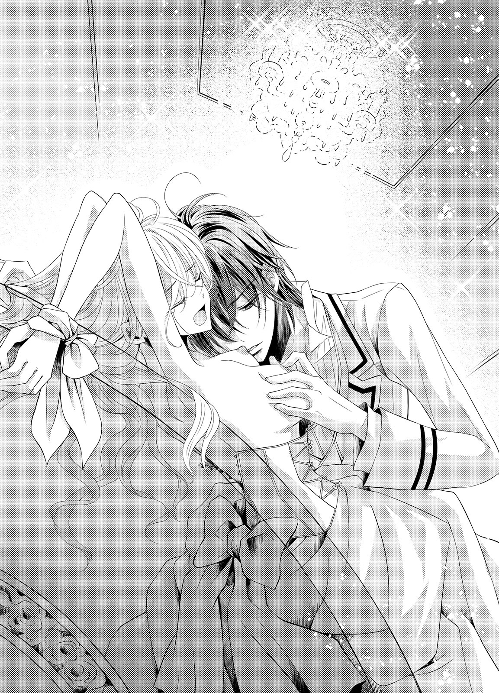
ギルバードの声が、いやらしく聞こえる。男の艶を含んだその声に、身が震えてしまう。
「......あ......あっ」
加えて、唇から、自分でも聞いたことのないような甘い声が零れてしまう。それがギルバードの欲情を煽っているのだとまったく気づけないまま、シェリルは必死でその声を飲み込もうとし続けた。
「う......ぁ......あっ、はぁ......っ」
胸をさんざん舌と唇で嬲られて、シェリルは息も絶え絶えだ。ギルバードの唾液で、二つの膨らみが妖しく濡れ光っていていやらしい。
ギルバードが熱い息をつきながら、シェリルの胸から顔を上げた。
「シェリル......」
少し掠れた声が、シェリルの名を呼ぶ。耳元にギルバードの唇が落ちてきて、舌先がゆっくりと耳殻を舐めてきた。
「......シェリル」
唾液が絡む音と熱い呼気に、シェリルはぞくぞくして身を捩った。
（どうして、そんなふうに呼ぶの）
──まるで想う相手の名を呼ぶかのように。
シェリルはギルバードをそっとうかがう。ギルバードの眉根は軽く寄せられていて、蒼い瞳は堪える熱情を浮かべ続けている。
（どうして、そんなふうに私を見るの）
「......シェリル......」
ギルバードの片手が、わき腹から腰をなぞり、太股へと下りた。スカートの生地を撫で上げるようにたくし上げてくる。
膝上まで生地が上がると、ドロワーズの太股にギルバードの手が触れた。その手の熱に、シェリルは身を強張らせる。胸に触れたときよりも、もっと熱くなっていた。
「あっ......」
下半身に触れられた驚きに、シェリルは涙を浮かべた瞳で、ギルバードを見つめる。......今はもう、そうすることしかできなかった。
片手は、どんどん太股を這い上がってくる。次にはドロワーズの生地を掴み、力任せに引き下ろそうとした。
「やぁ......ギルバード......っ」
掠れた涙声で、名を呼ぶ。ギルバードがはっとしたように動きを止め、目を見張った。
どのくらい見つめ合っていたのか、わからない。やがてふ......っ、と、ギルバードが自嘲的に微笑んだ。
額に乱れてかかった長めの前髪をかき上げて、ギルバードは大きく息をつく。
「俺に触れられるのは、嫌、か......」
「......ギル......？」
ギルバードは無言のまま、シェリルの手首の縛めをほどいてくれる。そしてシェリルの服の乱れを整え、自分の首に元通りにクラヴァット着けると、何事もなかったかのように部屋を出ていってしまった。
テーブルの上に取り残されて、シェリルは乱れてしまった呼吸を整えるために何度も深呼吸を繰り返す。
（身体が、熱い......）
ギルバードに触れられたところが、疼くような熱に侵されているようだ。シェリルは身を起こすこともできず、しばらくそのままでいた。
ギルバードがどうして急にこんなことをしてきたのか、わからない。それを知りたいような知りたくないような──なんとも複雑な気持ちだ。知ってしまったら最後、これまでの自分たちの関係が壊れてしまいそうで怖い。
（でも......ギルバードはもう、昔のギルバードじゃないのかもしれない）
幼い頃の彼は身体が弱く、歳が上でも自分が守ってあげなければいけないと思っていた。優しくて穏やかな少年だったから、余計そう感じたのかもしれない。だが今のギルバードは、シェリルが抵抗などできないほどに強い力を持っていた。
身体も逞しくなり、固く強く引き締まっていた。自分の柔く弱い女の身体とは、まったく違う。
『俺はもう、昔の俺とは違う』
その言葉通りだった。けれど気づかない振りをしていた。
（だって、怖いの。私たちの今の関係が、別の何かに変わってしまうことが......）
「シェリル、あなた、今週末オールストン家に行ってらっしゃい。最近あなたの顔を見ていないから、公爵夫人が久しぶりにお話しをしたいそうなの」
（ギルバードのお館へ......!?）
夕食の席で突然母親に言われ、シェリルは食事中の手を揺らした。かしゃん、と不躾な音を立てて、フォークが皿の上に落ちてしまう。
一緒に食事をしていたメリッサが、不思議そうに目を向けてきた。
「大丈夫ですの、お姉さま」
「え、ええ......大丈夫！ ちょっと手が滑ってしまって......ごめんなさい」
今はギルバードに会ってしまうかもしれない可能性は、できる限り避けたい。
（だってどんな顔をして会えばいいの......）
テーブルに押し倒されて、深く激しくくちづけられて、胸を愛撫された。あのときのギルバードの仕草を思い出すと、身体が熱くなってしまって困る。
「あ、あの、お母さま......私、ちょっと体調がすぐれなくて......公爵夫人に病気を移してしまうといけないですから、お誘いはお断りさせていただければ......」
「まあ、そうなの？」
母親が、残念そうに呟く。嘘をついていることを申し訳なく思いながらも、シェリルは強く頷いた。
食事の手を休め、母親はさらに続ける。
「でも、公爵夫人はとてもあなたに会いたいとおっしゃっているのよ、公爵夫人にはご子息しかいらっしゃらないから、あなたたちを可愛がってくださるでしょう？ あなただってここ最近、公爵夫人にはお会いしていないのに......」
娘が欲しかったと言って、オールストン公爵夫人はシェリルたちを可愛がってくれた。年頃になってもその縁は切れることなく、今も何かと気を配ってくれている。確かに公爵夫人とは、手紙のやりとりはしていてもしばらく会って話をしていない。
優しい公爵夫人に残念な想いをさせてしまうのは申し訳なく、シェリルも項垂れてしまう。だが、ギルバードに会ったらどういう対応をすればいいのかわからない以上、気軽にオールストン家には行けなかった。
するとメリッサが、明るい声を上げた。
「でしたら私が、公爵夫人をお慰めに参りますわ」
自分の代わりに行くとしたら、確かにメリッサが一番いいだろう。メリッサも公爵夫人と直接会うのは久しぶりだ。
母親がそれ以上何か言う前に、シェリルは強く頷いた。
「ええ、そうね！ メリッサに代わりに行ってもらえばいいと思うわ。お母さま、大丈夫かしら？」
「そうね......ではメリッサ、お願いできるかしら？」
「もちろんですわ、お母さま！ 私も公爵夫人とお話しするの、今から楽しみです！」
メリッサの明るい言葉に、母親も頷いている。
「では、あなたの代わりにメリッサが行くと、公爵夫人には伝えておくわね」
メリッサがオールストン家に出かけるのを見送ったあと、シェリルは自室で刺繍をしていた。集中して刺していると、予定していた図案はあっという間に仕上がってしまう。
令嬢としてのたしなみは、一応すべて習得している。次に何をしようかと刺繍道具を片付けながら考えるが、気分が乗らなかった。
こんなときはジュリアの背に乗って自然豊かな場所を遠乗りしてみたい。だがそれこそが令嬢らしくないと言われるゆえんだろう。シェリルはため息をつく。
（でもギルバードは、そんな私でもいいっていつも言ってくれていたのよね......）
自然と、ギルバードのことを思ってしまう。同時にそれは、あのとき押し倒された彼の荒々しい、けれどもどこか切迫したかのような愛撫を思い出させた。シェリルはその記憶に、頬を真っ赤に染めて首を振った。
でも、とシェリルは時間が経ったからこそ、少し気になることを思い出す。
やめて欲しいと願ったとき、シェリルは家族のようなものだからと言って止めようとした。それを聞いてギルバードは、ひどく不快そうな顔をしていた。
（ギルバードは、私にそういうことを言われたくなかったのだわ......）
自分が令嬢らしくないと家族に言われるのが嫌なように、ギルバードも自分にはそういうことを言って欲しくなかったのかもしれない。そう思えば、ここ最近のギルバードとの衝突の原因すべてに納得ができる。
自分が言われて嫌なことを、ギルバードは口にしないでいてくれた。それどころかシェリルのそうした部分を個性だからと言ってくれて、気持ちを受け入れてくれた。
自分はギルバードの優しさに甘えて、彼が嫌がる言葉を口にし続けてしまっていたのだ。
今の関係を壊したくないからといって、彼を傷つけていいわけがない。
自分の身勝手さに今更ながらに気づき、シェリルはひどくいたたまれない気持ちになる。今すぐにでも、ギルバードのところに行って謝りたくなった。
だが窓辺に近づいて外を見れば、すでに日が暮れようとしている。
明日、一番に出掛けよう。約束もなく来訪するのは失礼だが、それも一緒に謝ろう。
（そういえば、メリッサがまだ帰ってきていないわ......）
そう思った矢先、視界の中に門を通り抜けてやってくる馬車が入り込んだ。メリッサが帰ってきたのだ。
ギルバードの様子を教えてもらいたくて、シェリルはエントランスホールへと無意識に急ぎ足で向かう。
ホールに続く大階段を降り始めた頃にはメリッサも到着していて、召使いにケープを脱がせてもらっていた。メリッサはシェリルの気配にすぐに気づいて、顔を上げてくる。
「お姉さま、ただいま戻りました！」
メリッサの笑顔は明るい。オールストン公爵夫人とのひとときは、ずいぶん楽しかったのだろう。
「お帰りなさい、メリッサ。とても楽しかったみたいね！」
「ええ！ 久しぶりに公爵夫人にお会いできたし、ギルバードにも会えたのよ！」
メリッサはとても嬉しそうに笑って、シェリルの傍に歩み寄ってくる。
「そ、そう。よかったわね！」
「お姉さまのこと、公爵夫人がお大事にって......ギルバードも心配してたわ」
（ギルバードが......）
シェリルはメリッサとともに大階段から居間へと向かう。
夕食の時間にはまだ少し時間がある。メリッサが茶会の様子を話したげだったし、自分もギルバードの様子を知りたかったため、それにつき合うことにした。
居間のソファセットに落ち着くと、メリッサは公爵夫人との話がどんなだったのかを実に楽しげに教えてくれた。ギルバードが帰宅して茶会に合流してから以降は、彼のことばかりを話してきた。
（こんなメリッサを見て、ギルバードはどう思ったのかしら。私にしたみたいなこと......したいと思ったのかしら......）
胸の奥が、またチクリと痛む。
これ以上メリッサの話を聞いているのが苦痛になってきたシェリルは、ソファから立ち上がろうとする。だがそれを遮るかのように、メリッサが言った。
「そういえばお姉さま。ギルバードと何かありましたの？」
「え...っ？ ど、どうして？」
「ギルバードが何だか元気がないように見えたので、問いつめてみましたの。そうしたらお姉さまにいつまでも幼い頃の自分と同じように見られていて嫌だって......」
どこかメリッサの言葉が責めるように聞こえてしまう。やはり自分は、ギルバードを傷つけてしまっていたのだ。
（謝らなくちゃ......!!）
シェリルは無言のまま、ソファから立ち上がった。
「お、お姉さま？ どうされましたの？」
シェリルの動きに、メリッサが戸惑いの声を上げる。ほぼ同時に居間の扉がノックされ、召使いの声が届いた。
「お夕食が整いました」
シェリルは扉に走り寄り、召使いに告げる。
「馬車を用意して！」
「い、今からどこかにお出掛けですか!?」
余程火急の用でなければ、普通の令嬢が出掛ける時間ではない。シェリルにもそれは充分わかっていたが、留まるつもりはなかった。
「オールストン家に行きたいの」
「お姉さま！ 今から出かけるなんて、危ないですわ！」
メリッサの警告に、召使いも強く頷く。だがシェリルに引く気はない。
（だって、ギルバードに謝りたい）
「お願い、出かけるわ。馬車を用意して！」
シェリルの勢いに圧されて、ついには召使いも頷いてしまう。そのまま馬車を用意しに行く彼女のあとを、シェリルも追いかけようとした。
「お姉さま!!」
メリッサが、慌てて止めようとする。シェリルはするりと扉をすり抜けて、言った。
「ギルバードに謝ったら、すぐに戻ってくるわ。メリッサ、お母さまを誤魔化しておいてくれる？」
追い立てられるようにして馬車が用意される。御者はランタンを御者台近くのフックに引っ掛けながら、ひどく渋った顔をしていた。こんな時間に一人でシェリルが出掛けるなど、賛成できないようだ。
召使いたちの責めるような眼差しが肌に痛かったが、シェリルはそれに耐えて馬車を走らせる。自分がギルバードに対してどれだけひどいことをしていたのか気づいてしまえば、居ても立っても居られない。
御者を急かしてスピードを出しているがゆえにいつも以上の揺れに顔をしかめながら、シェリルはオールストン家に到着した。猛スピードでエントランスに横づけした馬車に、オールストン家の召使いたちが数人、大慌てでやって来る。
馬車から飛び出すようにして姿を見せたシェリルに、彼らはひどく驚いた。
「シェ、シェリルさま!? まさかこんな時間にお一人で!?」
「急に先触れもなく来てしまってごめんなさい。ギルバードはいらっしゃるかしら？」
「ギ、ギルバードさまならお部屋に......と、とりあえず中にお入りください。お呼びして参ります」
召使いの一人の言葉に軽く頷いて、シェリルはそのあとについていこうとする。荒々しい足音が近づいてきたのはそのときだった。
大理石の床の廊下からやってきたのはギルバードだった。
「急に来てしまってごめんなさい。私......」
直後ギルバードが強い力で引き寄せ、抱きしめてきた。固い胸にぶつかるような抱擁は突然すぎて、シェリルは困惑してしまう。
衝動的にギルバードの胸に両手をついて上体を起こそうとしたが、抱きしめられる力が強くて無理だった。
「......ギ、ギル......バード......？」
抵抗する気は起きなかった。ギルバードの腕が、どこか縋りつくように感じられたからだ。
ギルバードはシェリルの亜麻色の髪の中に頬を埋めるように顔を寄せて、囁く。
「君はもう立派なレディなんだから、もっと回りに警戒しなくちゃ駄目だろう。こんな時間に一人で出掛けて、物盗りなんかにあったりしたらどうするんだ？ あまり、心配かけないでくれ。俺に会いたいのなら、俺が君のところに行く。君は、会いたいって連絡だけくれればいい」
ギルバードが心配してくれる気持ちがひしひしと伝わってきて、シェリルはひどく申し訳ない気持ちになった。
（ごめんなさい......私、ギルバードに心配ばかりかけてしまっているのね......）
詫びの気持ちを伝えるように、シェリルはそっとギルバードの背に両手を回した。
（大きい背中）
幼い頃とは違って、シェリルの手は回りきれない。掌を背中に押しつけるような感じだ。
シェリルがそうすると、ギルバードの身体が小さく震えた。
「心配かけてしまってごめんなさい。でも私、ギルバードに謝らなくちゃいけないことがあって......ちゃんとあなたに会って話したいと思ったの」
「ここでは話もできないな。俺の部屋においで」
ギルバードの部屋につれて行かれる。その間もずっとギルバードはシェリルを抱き寄せたままだった。
部屋に入るとギルバードはシェリルをソファに座らせ、自分は隣に落ちついた。
「俺に謝りたいことって？」
ギルバードの手が、背中に流れ落ちている髪を撫で始める。その仕草が思った以上に心地よくて、シェリルはうっとりしそうになった。
「私、ギルバードが言われて嫌なことを、よく口にしていたんだって気づいたの。ごめんなさい、ギルバード......私に、家族扱いされるのが嫌だったのよね......」
ギルバードが軽く身を起こす。こちらを見下ろす蒼い瞳は穏やかになっていた。
自分の考えは、間違っていないだろうか。不安げに見返すシェリルに、ギルバードはくすりと笑う。
「そうだ。俺は君にいつまでも子供のときと同じように見てもらいたくはなかった。俺はもう子供じゃない。立派な男だ。そうだろう？」
ギルバードの手が、シェリルの片手を掴む。されるがままになっていると、ギルバードはその手を自分の胸に押しつけた。
薄いシャツ越しに、胸元をまさぐるように動かされる。生地の下に隠されている引き締まった感触をじっくりと感じることになり、シェリルは真っ赤になって離れようとした。だがギルバードの手は放してくれない。
「ギ、ギルバード......は、放して......」
「俺が昔と違って『男』だってこと、ちゃんとわかったかい？」
「わ、わかったわ......！ だから、放して......」
泣きそうな思いで頼んでいるのに、ギルバードは放さない。それどころか腰に腕を回して引き寄せると、頬を寄せてくる。
くちづけられると本能的に悟り、シェリルはぎゅっと強く目を閉じた。
ギルバードの苦笑めいた吐息が、額に落ちてくる。そしてそこに、柔らかく唇が押しつけられた。
欲情を感じさせるものではなく、挨拶に近いそれだ。シェリルはホッとすると同時に、なぜか少しがっかりしたような、物足りないような気持ちになってしまう。
（......待って！ どうしてそんな気持ちになるの!?）
「シェリル」
ギルバードが、じっとこちらを見下ろしてくる。その瞳はいつもの彼とは違って熱っぽくて、居心地が悪い。シェリルは思わず目を逸らしてしまう。
「な、何？」
「キスしていいか？」
「......!?」
あまりにも直球すぎる言葉にシェリルはどう答えればいいのかまったくわからず、口をぱくぱくさせた。
ギルバードは片手をシェリルの頬に添え、ゆっくりと撫で下ろす。その仕草が何かひどく官能的に感じるのは、気のせいだと思いたい。
ギルバードの指が、唇に触れる。優しく指の腹でなぞるように撫でられると、背筋がゾクゾクした。
こちらを見つめてくる瞳は、蕩けるような甘さを含んでいる。見つめ返すことなどとてもできなくて、シェリルは自分の足元を見下ろしながら、思わず言った。
「ど、どうして......したい、の......？」
「......それも教えないとわからないかい？ 君が、好きだからだ」
呆れたように言い返されて、シェリルは新たな驚きに硬直する。ギルバードを男性としてやっと意識したばかりだというのに、今度は告白とは心がついていかない。
「......え？」
（ギルバードが......私のことを、好きって......）
間抜けな返答を口にしたシェリルに、ギルバードは改めて頬を寄せた。
「俺にキスされるのが嫌か嫌じゃないか、それだけ今は教えてくれるか？」
「そ、れは......」
シェリルは口ごもる。
嫌か、嫌じゃないか。その質問の仕方だと、「嫌じゃない」としか答えられない。だがそれを答えることは、恥ずかしくてたまらない。
シェリルの様子からギルバードには答えがわかったらしい。ギルバードは小さく笑った。
「まあ、今はそれでいいよ。あのときも、駄目とは言っても嫌だとは言わなかったからな」
「待、待って......あ......」
「待たない。待っていたら永遠に君にキスできなさそうだ」
シェリルの言葉を待たずに、ギルバードが唇を押しつけてくる。柔らかくふんわりと押しつけられた唇は、シェリルの唇のかたちと柔らかさを確かめるように啄ばんできた。
「ん......」
ギルバードの唇は、激情に任せての動きではない。慣らすように優しく、角度を何度も変えて啄ばんでくる。
シェリルの身体の強張りが、だんだんと解けていく。その頃合いを見計らって、ギルバードの唇が強く動き、シェリルの唇を押し割った。
「あ......んん......ふっ」
熱く濡れた舌が、差し込まれる。口中に潜り込んだ舌は、シェリルの味を確かめるかのように這い回ってきた。
身体の力が抜けてしまっていたシェリルには、抵抗の気力が出てこない。やがては熱い舌を絡められ、擦り合わされて、新たに力が抜けてしまう。
（何、かしら......気持ち、いい......）
ギルバードのくちづけに、酔わされていく。ぐったりとその身にもたれかかってしまうと、ギルバードは危なげなく支えてくれた。そしてわずかに唇を離し、囁くように問いかけてきた。
「俺にキスされるのは......嫌か？」
「......あ......」
今、その質問をしてくるのは、ずるい。シェリルはくちづけでフワフワとした気持ちになりながら、思わず素直に答えてしまっている。
「嫌じゃ......ない、わ......」
「そうか。では、もっと......」
今度は求める気持ちのまま、ギルバードが深く口中をかき混ぜてくるような激しいくちづけを与えてきた。
「んん......！」
あっという間に息も絶え絶えになってしまい、瞳に涙も淡く滲んでくるほどだ。だがギルバードの想いは、伝わってくる。
（ギルバードが......私のことを、好きって......）
息継ぎが上手くできなくて、軽い目眩を覚える。ギルバードはシェリルの唇をたっぷりと味わったあと、ようやく唇を離してくれた。
互いの唇の間で、熱い吐息が交わされる。ギルバードの吐息が唇に触れて、くちづけで熟れた唇にはそれだけでも甘い刺激になった。
「......んぁ......」
「シェリル、ずっと君が好きだった」
シェリルは真っ赤になりながら、小さく頷いた。
「あり......がと、う......」
唇は離れていてもまたいつでもくちづけられる至近距離だ。ギルバードの低い囁きも呼気も、唇で感じ取れてしまう。
「シェリル。俺の花嫁になって欲しい」
「は、花嫁!?」
くちづけで酔わされていた意識も、急激にはっきりとするほどの衝撃を与えてくる告白だ。シェリルは大きく目を見開いて、ギルバードを見返す。ギルバードは笑っていたが、瞳はひどく真剣だった。
（ほ......本気なの......？）
男性として意識したばかりの相手を、こんなにすぐに夫として見ることなどできない。自分には結婚などずいぶん先だと思っていたからなおさらだ。
シェリルの心は次々と起こる予想外のことで、あっという間に許容量を越えてしまう。
「そんな......急すぎて......」
「......そうだな。大人になってからの俺のことは、あまり知らないから仕方ないか......」
ギルバードが軽く顎先に手をやり、思案するように呟く。前言を撤回してもらえそうに思え、シェリルは思わずこくこくと何度も頷いた。
だがギルバードはいいことを思いついたというように、改めて笑みを向けてくる。
「だったら今の俺のことを知るために、俺の傍にいればいい」
「ギルバードの傍に......？」
具体的にはどういうことなのかわからず、シェリルはきょとんとしてしまう。ギルバードはシェリルに優しく笑いかけながら続けた。
「オールストン家にしばらく滞在するんだ。そして俺のことを、よく見ていて欲しい。俺が君の夫に相応しいかどうか、そこで判断してくれればいい」
「え......え？」
「部屋を用意させる。ここで待っておいで」
「え......あ......ちょっと......待って、ギルバード！」
まだ了承もしていないのに、ギルバードは部屋を出ていってしまう。取り残されたシェリルは、ぱたんと閉まった扉を茫然と見つめるしかなかった。
（いったいどうしてこんなことに......）
めまぐるしく動く事態に、相変わらず心はついていけないままだ。シェリルは何かに縋りつきたいような気持ちになり、ソファに深く沈みこんだ。
今夜シェリルがオールストン家に宿泊することに、公爵夫妻は大賛成してくれた。
シェリルの身の危険を配慮してくれたことが一番だったが、娘のように可愛がっている姉妹の一人と夕食を共にする喜びの方が強いようにも見える。
そしてギルバードたちとの夕食の席は、シェリルにとっても楽しいひとときだった。
久しぶりにシェリルがオールストン家に来たということで、料理長は食後のデザートに腕をふるってくれた。薔薇をかたどった飴細工が乗ったケーキは目を楽しませてくれる。スポンジにはコクのあるチョコレートが練りこまれていて、少し苦味のある味が生クリームの甘さにちょうどよく絶品だった。
「今日は体調を崩して来られないと聞いていたから......会えて嬉しいわ」
まさか仮病だったと答えるわけにもいかず、あわてて言い訳をする。
「昨夜読んでいた本が面白くて、うっかり夜更かししてしまったんです。そうしたら寝不足のせいか、少し気分が悪くなってしまって......」
「今はもう、大丈夫なのか？」
オールストン公爵も、心配げに問いかけてくる。二人に嘘をついてしまうことを申し訳なく思いながら、シェリルは笑顔で頷いた。
「お昼寝をしたら、すっかり元気になりました」
「まあ......シェリルったら。いつまでも可愛いままで、あなたらしいわね」
公爵夫婦は安心の笑みを浮かべる。令嬢らしくないとここで言わないのは、彼らがシェリルのことを昔からよく知ってくれているからだろう。
「明日は早く帰ってしまうの？ ギルバードに送らせるから、明日の晩餐も一緒に過ごしましょう」
「それなら大丈夫だ。シェリルはしばらく当家に滞在することになったから」
デザートを食べ終えたギルバードが、フォークを置きながら言う。公爵夫妻が突然のことに驚いた。
「......それは本当のことなのか？ シェリルは了承しているのかい？」
オールストン公爵の問いかけにシェリルは気まずい想いを感じながらも、小さく頷いた。
公爵夫人が、直後にはしゃいだ声を上げる。
「まあ......まあまあ！ それはとても嬉しいことよ！ でも急にどうしたの、シェリル。スペンサー家で何かあったの？」
「シェリルに今の俺のことをよく知ってもらいたいから、滞在してもらうことにした」
「え......？ どういうことなのかしら？」
公爵夫婦は、今度は困惑の顔になる。シェリルはどう答えれば言いのかわからず、ギルバードを見やる。
ギルバードは食後の茶のカップをソーサーに戻して、答えた。
「先ほど、シェリルに結婚を申し込んだ。シェリルに俺のことを知ってもらうため、俺の傍に居てもらった方がいいと思った」
世間話のようにギルバードは伝えてくれるが、とんでもない。あまりにも正直すぎる。公爵夫妻がどう思うかを考えるといたたまれなくなり、シェリルは真っ赤になってしまう。
自分に結婚を申し込んだなど、公爵夫妻は反対するだろう。娘同様に可愛がってくれていても、妻となれば話は別だ。ギルバードには自分よりももっと相応しい相手がいるはずだ。
だがシェリルの心配をよそに、公爵夫婦はひどく納得したように頷いた。
「......話はわかった。だがシェリル、君はそれでいいのか？ 君が少しでも嫌ならば、ギルバードが何と言おうと私は君をスペンサー家に帰そう」
公爵の言葉は、厳しく深みがあった。
（このオールストン家に、留まること......）
嫌ではない。自分の知らないギルバードを知りたい......と思う。
シェリルは恥ずかしげに頬を染めながらも、小さく頷いた。公爵が、少しほっと吐息をつく。
「無理矢理ではないのならば、よかった。だが少しでも困ったことがあったら言いなさい」
「ありがとうございます、公爵」
「俺はシェリルが嫌がるようなことはしませんが？」
ギルバードが少し傷ついたように問い返す。公爵は小さく苦笑して立ち上がり、妻の手を取った。
「お前が我慢強いのは知っているが、そのたがが外れたらどうなるかわからんことも知っているつもりだ。ギルバード、紳士としての心構えを決して忘れないように」
ギルバードは不満げに吐息をついたものの、反論はしない。公爵夫人が笑った。
「シェリルの滞在について、スペンサー家のご両親には私たちの方できちんと話をしておくわね」
「私も口添えしよう。ではシェリル、また明日」
公爵夫婦は揃って席を立ち、仲良さげに談笑しながら食堂を出ていってしまう。その落ち着いた背中を、シェリルは茫然と見送るしかない。
（ど、どういうこと、これ......）
無言のまま、ギルバードに目を向ける。何も言わずとも、ギルバードはシェリルの言いたいことを感じ取ってくれたようだ。
テーブルに肘をついて、ギルバードは笑う。シェリルに想いを告げたことで何かが吹っ切れたのか、とても清々しい笑顔だった。
「俺がシェリルを好きだっていうことは、両親に伝えていたんだ。結婚したい人だって。母上の茶会の誘いも、俺と君を会わせるためだったんだと思う」
「い、以前から......そんなことを......？」
くらり、と目眩のような感じがしたのは、気のせいだろうか。絶句するシェリルに、ギルバードはにっこり笑いかけた。
「君が好きだって気持ちは、結構筋金入りだと自負してる。だから明日からは覚悟しておくように」
いったいどんな覚悟をしておけというのか。シェリルは怖くて聞けず、ふらりと立ち上がる。
今、自分が口にできるのは、これくらいだった。
「私......今日はなんだかとても疲れたみたい。休ませてもらうわ......」
「ああ、では部屋まで送ろう」
当然のこととしてギルバードは言い、立ち上がる。これまでももちろん色々と気を遣ってもらえていたが、今は何だか気恥ずかしい。
ギルバードはシェリルの背中に軽く腕を添えるようにして、先を促してきた。シェリルはそれに従いながら、これからのことをあれこれ考えようとして──結局できなかった。
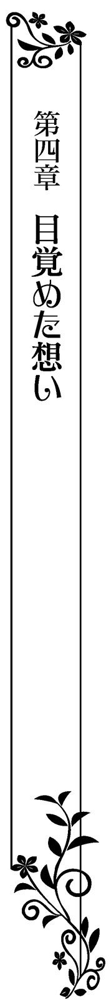
「──あのね、ギルバード。この間ね、ルイーズお姉さまにケイヴさまが結婚の申し込みをしてきたの」
その日ギルバードは、オールストン公爵とともにスペンサー家に遊びに来てくれていた。
父親たちは何やら事業に関わる難しい話をし始めてしまったため、ギルバードとシェリルは二人で図書室で過ごしている。自分よりも知識がずっとあるギルバードに勧められた本を二人で読みながら、わからないところを彼に教えてもらっている穏やかで優しい時間だった。
一息ついたところで、シェリルは姉の話を切り出した。昔からギルバードには何でも話してきた。
「そうなんだ？」
「ええ、よかったわ！ ケイヴさまだったらルイーズお姉さまをとっても大切にしてくれると思うの。私はこの結婚に大賛成なのよ！」
「ご機嫌だね？」
「だってケイヴさまは、お姉さまをとっても大切にしていることがわかるんだもの。あんな素敵な方と結婚できたら、とても幸せだと思うわ！」
シェリルの言葉に、ギルバードの表情が少し強張る。
「あいつのこと、好きなの？」
「もちろん。だってこれからお兄さまになる人だもの。優しくて紳士的だし」
「いや、そういうことを聞いたんじゃないんだけど......。でも、そっか......ああいう人が、シェリルの好みなんだ......」
何やら一つ大事な知識を得られたかのように、ギルバードは軽く頷く。シェリルはそんなギルバードの顔を、軽く小首を傾げるようにしながら覗き込んだ。
「ギルバード？ どうしたの？」
「あのさ、シェリル。僕が彼みたいになったら......なんでもない！」
「...朝...？」
自分の声で、目が覚める。覚醒と同時に上体も起こしたシェリルは、自分を取り巻く室内の様子がいつもとまったく違うことに気づいてしばし茫然とした。......自分の部屋ではない。ここはギルバードの屋敷だった。
とても落ち着いた雰囲気の室内は、シックなデザインの家具でまとめられている。おかげでシェリルの気持ちもだんだんと落ち着いてきた。そしてどうしてこの屋敷にいるのかを、思い出す。
（今の......幼なじみのギルバードじゃなくて、一人の男性としてのギルバードを知るために）
昨日のギルバードからの突然のプロポーズを必然的に思い出してしまい、シェリルは真っ赤になる。その耳に、扉をノックする音が届いた。
「シェリルさま、お目覚めになられましたでしょうか？」
シェリルがハッとし慌てて返事をすると、召使いたちが挨拶をして入ってくる。シェリルと同じ年頃の者たちばかりだった。
「本日よりシェリルさまのお世話をさせていただきます。何でもお申しつけください」
一斉に頭を下げられ、シェリルは笑顔で頷いた。
「急に滞在することになりました。お世話になります」
「ギルバードさまがシェリルさま一筋なのは、私たちもよく存じ上げておりました。ですからこうしてお世話できることを、心待ちにしていたんです」
ベッドから降りたシェリルに着替えをさせながら、彼女たちは言う。思ってもみなかった話に、シェリルは驚いた。
「一筋って......え......？」
「幼い頃からオールストン家にお仕えしておりますが......まだお身体が丈夫ではなかった頃から、ギルバードさまはシェリルさまに相応しい男になるのだと、励まれていたのです」
明るいラベンダー色のデイドレスに着替え、髪を整えてもらいながら彼女たちに身を委ねていたシェリルは、新たな驚きに言葉を失った。
（だって......嘘でしょう？ そんな昔から？）
それがどうして自分なのだろう。自分にはギルバードがそこまで求めてくれるような魅力はない。
問いかけたい気持ちを飲み込んで身支度を整えると、召使いの一人に朝食の席に案内してもらった。
朝食はサンルームで、朝日がたっぷりと入り込む清々しい場所だ。丸テーブルにはしかし、新聞を読んでいるギルバードしかいない。
新聞を読むギルバードの横顔は、予想以上に真剣で──シェリルの鼓動がとくん、と小さく跳ねてしまうほどに凛々しい。
（な、何をときめいているの！）
シェリルの気配に気づいたギルバードが、こちらに目を向けてくる。シェリルの姿を認めると、柔らかく笑いかけてきた。
「おはよう、シェリル。よく眠れたか？」
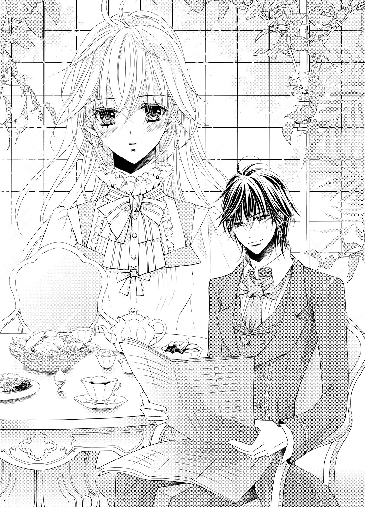
昔の夢を見たこともあって、よく眠れたとは決して言えない。曖昧に笑って誤魔化しながら、シェリルは召使いが引いてくれた椅子に座った。ギルバードの隣なのが、何だか気恥ずかしい。
テーブルには何種類かのパン、ゆで卵やハム、ソーセージ、サラダや果物などが用意されている。
ギルバードは読んでいた新聞をテーブル上に戻した。ギルバードの前にはまだ紅茶の入ったカップしかない。
「ギルバード、食べないの？」
「君が来るまで待ってた。両親は、仕事がないとき意外は基本、ゆっくりなんだ」
「ご、ごめんなさい。待たせてしまったのね......」
「気にすることはない。シェリルの好きなものを揃えてもらったから、一緒に食べよう」
さり気ない気配りが、大切にされていることを教えてくれる。心がくすぐったくて、シェリルは慌てて自分でパンを取ろうとした。
だがそれよりも早くギルバードの手が動いて、シェリルの取り皿にクロワッサンを一つ取り置いてくれる。
「あ、ありがとう......」
「クロワッサンはシェリルが好きなものの一つだろう？ 絶対食べると思って」
「好きなものって......」
サクサクのクロワッサンは、バターの香りがとても香ばしい。最後の仕上げに砂糖を溶かしたシロップが表面に厚く塗られていて、とても美味しそうだ。
「私の好きなもの、覚えていたのね......」
「シェリルのことは、教えてくれたことはもちろん覚えてる。それに、いつも見てたからな」
それだけシェリルのことが好きだから、と言外に続けられたような気がして困ってしまう。
何か別の話題を振らないと、追い詰められてしまいそうだ。シェリルは焦って周囲を見回し、さきほどギルバードの手にあった新聞に気づく。
「新聞、何かあったの？」
「経済面では、特に目立ったものはなかった」
「経済？ じゃあ、株のこと？」
オールストン家は大きな貿易会社を経営してもいる。収益は高く、今後も成長著しい会社だ。
「いや、新しい取引の材料として俺が注目してる物資があるんだ。それに関するものを見てた」
「先物取引は危険だと聞くわ」
朝食を取りながら、ギルバードとの会話がすすむ。
「誰でも前例のないものに手を出すときは、それなりのリスクは考えるものだよ」
ということは、リスクを賄えるだけの策をギルバードは持っているということか。その策に興味が出てきて、シェリルは興味津々の顔で問いかける。
「それだけ自信があるんだもの、勝つつもりなんでしょう？」
「それは、もちろん」
ギルバードが不敵に笑って頷く。
「家督をまだ継いでいるわけじゃないから父上を差し置いて勝手はできないが、許されている範囲でなら好きにしていいって言われてる」
自信があるからといって闇雲に突き進むわけでもなく、慎重さも兼ね備えていると改めて感じた。
シェリルは知らずにギルバードの方に少し身を寄せながら、彼の事業展開の夢を聞かせてもらう。それはとてわくわくさせてくれるものだった。
（オールストン家の跡取りとして、将来に向かって進んでるんだわ......）
なんだかとてもギルバードを頼もしく感じる。
ギルバードに事業経営の話を聞かせてもらい、疑問に思ったことは教えてもらう。そのやり取りはとてもとても楽しくて──召使いが二杯目の茶をカップに注いでくれたときにようやく気づいて、シェリルは口を噤んだ。
（ま、また私、こんなにはしゃいでしまって......！）
「......シェリル？ どうかしたか？」
突然黙り込んでしまったシェリルを、ギルバードが心配そうに見返してくる。シェリルはスカートの膝辺りをぎゅっと握りしめ、身を縮めた。
「わ、私......こんな口出ししてしまって......ごめんなさい」
だからもうこの会話はやめよう、とシェリルは続けようとする。だがギルバードは不思議そうに首を傾げてきた。
「これからは、女性がどんどん社会進出していく世の中になっていくと俺は思う。興味を持つことで男女関係なく話したり、女性だって事業を興したりできる。だからそんな古い価値観は気にしなくていいんだ」
「......でも」
「俺は君がそうやって、興味のあることをすごく楽しそうに話すのを見るのが好きなんだ」
飾らない言葉で、ギルバードはそんなふうに言ってくる。見つめられる瞳に甘さが宿っていて心臓がどきどきしたが、不思議と今は目を逸らすことはしなかった。
「それともシェリルは、俺とこういう話をすることが、楽しくないのか？」
シェリルはすぐに首を横に振っている。言葉で答えるよりも先に身体の方が反応していたことに、そのあとすぐに気づいて驚いた。
（私......）
「では、このままでいいだろう。少なくとも俺の前では」
（ギルバードの、前では......）
そう思うと、なんだかとても気持ちが楽になる。気持ちが楽になると急に気恥ずかしくなって、シェリルは慌てて俯こうとする。
ギルバードの手がそのとき伸びて、シェリルの口元をそっと撫でるように動いた。甘い驚きに顔を上げると、ギルバードの指にクロワッサンの砂糖の欠片がついていた。
「こういうところも、小さい頃と変わらないな」
「......こ、今回はたまたまよ......!!」
「たまたま、か。......この間、母上からのお菓子の差し入れをしたときも、同じようなことがなかったか？」
うっ、と反論に詰まってしまい、シェリルはナプキンで口元を拭う。
「い、いつまでも私だって昔と同じじゃないんだから......っ!!」
「ああ、そうだ。俺が昔と同じじゃないように、君も昔とは違うところがたくさんある」
ギルバードが指を舐め上げながら言う。彼の何気ない仕草に妙な男っぽさを感じてしまって、シェリルはますますどきどきしてしまった。
朝の清々しい雰囲気から急になんだか心がくすぐったいような気持ちになってしまって、シェリルは紅茶のカップを口にしながら言った。
「......あ、あのね、ギルバード。そ、そういうの......やめて......」
「どうして？」
まさか問い返されるとは思わなくて、シェリルはさらに慌ててしまう。
「どうしてって......だって......だって......」
どう答えればいいのか、わからない。シェリルは顔を隠すようにしながらそれをカップを唇に寄せ、答えをうやむやにする。
だがわざわざ口にしなくても、ギルバードにはわかっているのだろう。その証拠のように、ギルバードがくすくすと小さく笑みを漏らした。
「シェリル、ねえ、シェリル。ちょっと来てちょうだい」
公爵夫人に昼食を終えたあとに呼ばれて、シェリルは彼女の部屋へと行った。
公爵夫人は一度シェリルをソファに座らせると、扉続きの隣の部屋から一着のドレスを持ってくる。それはシェリルの瞳に合わせた淡いペールグリーンのドレスだった。
最新のデザインで作られたドレスは、シェリルが思わず感嘆の声を上げてしまうほどに見事なものだ。ベルベッドのリボンや繊細な刺繍がたっぷり施されたドレスは、見ているだけでもすぐに着てみたい気持ちにさせる。
シェリルの好みにぴったりだ。あまり肌を出しすぎないところが、特にいい。
「まあ......公爵夫人！ 素敵なドレスです......!!」
「そうでしょう？」
公爵夫人はそのドレスを持ったままシェリルの前に歩み寄り、胸元にかざした。
「そう言ってもらえてほっとしたわ。さあ、どうぞ」
「......え？」
「これはあなたのために仕立てたのよ。このドレスを渡したくて、この前お茶会に誘ったの」
お茶のお誘いの理由を知り、シェリルは改めて断ってしまったことを申し訳なく思う。シェリルは感謝の笑顔を浮かべて、ドレスを手に取った。
自分の胸元に押し当てて見せると、公爵夫人もとても満足げに笑った。
「ああ、やっぱりよく似合うわ！ ねえ、早速着てみて？」
そう言ってもらえれば、シェリルも断る理由はない。大きく頷くと、公爵夫人はすぐに召使いを呼んで着替えの手はずを整えてくれた。
「さあ、シェリル。とびきり綺麗にしてあげるわ。髪も整えて、アクセサリーも着けてみましょう。あなたは少し、自分のことを知らなすぎよ」
何やら本格的に飾り立てられる感じに、シェリルは戸惑ってしまう。
「あ、あの......そこまでしなくても......」
「いいから私の好きにさせてちょうだい」
召使いたちにドレッサールームへ連れて行かれ、鏡の前に座らせられる。召使いたち数人に取り囲まれて、シェリルはなんだか緊張で身を縮めてしまった。
ペチコートの上からコルセットを絞められる。網込みが細かなそれは、腰回りをすっきりと見せる繊細な作りだった。
ペールグリーンの生地は透けるシフォンで、下地が見えるほどの軽やかさだ。下地のドレスは刺繍の小花が散りばめられた布地で仕立てられている。たっぷりとギャザーが作られたドレスは後ろが少し長めに作られていて、腰に巻きつけて背中で結んだリボンの裾が少し引きずるほどだった。
胸元にもたっぷりとギャザーが寄せられていて、膨らみを優しくて包み込んでいる。袖もふんわりと膨らんだ形をしていた。
襟元はリボンが編み込まれたレースで縁取られている。あまり胸元が大きく開いていない代わりに、背中が真ん中ほどまでえぐる形になっていたが──その部分にはペールグリーンに染められたレース生地で覆われていて、素肌を晒すことにはならない。
着替えが済むと、下ろしていた髪を結い上げられて、ダイヤモンドであしらった髪飾りを散りばめてゆく。エメラルドのイヤリングを着け、最後にエメラルドとダイヤモンドが連なる清楚なデザインのチョーカーを首にそっと着けられて、完成だ。
いつも着るドレスよりも大人っぽいが、男を誘うものではない。上品な仕上がりだ。メリッサが選んでくれるドレスとは違って、これはシェリルの好みだった。
鏡の中にいる女性は、本当に自分なのだろうかと疑ってしまうほどに清純な美しさを放っていた。
「......これ......私......？」
支度を終えたシェリルは公爵夫人の前に立つと、くるりと一度回ってみせる。夫人はさらに嬉しそうに笑い、満足げに見惚れてくれた。
「素敵よ、シェリル。もう可愛らしいという誉め言葉では駄目ね。帰ってきたギルバードが驚くくらい、綺麗だわ！」
「あ、ありがとうございます......っ！ これも、公爵夫人のおかげです！」
公爵夫人は首を振る。
「シェリル、お洒落というものは場数を踏むことが大事なの。今の自分に何が似合うのかは歳を重ねるごとに変わっていくから、自分に似合うものをその都度探していけばいいの。探すための失敗を恐れては、美しい貴婦人なんて夢のまた夢。自分を卑下するような考えは損だわ」
（そういえば、お洒落って......あまり考えたことがなかったわ）
もちろん、家の中ではお洒落をしたいと考えてはいた。だが貴族令嬢が着飾るときといえば大抵はパーティ関係になってしまい──そうすると、あまり令嬢らしくないと同じ女性陣たちから言われてしまうかもと足が遠のいてしまっていて、お洒落をすすんですることが極端に少なくなってしまっていた。
いつも同行してくれるルイーズやメリッサに任せっきりで自分で考えることを放棄していた。
（それは......いけないことだったのかも......）
自分の怠慢さが浮き彫りになったような気がして、恥ずかしい。だが教えてくれた公爵夫人には、感謝したい。
「公爵夫人......教えてくださって、ありがとうございます」
「ふふ、そう言ってもらえると、私も嬉しいわ」
「あら......ギルバードさまのお帰りですわ」
召使いの一人が馬車が入ってくるのに気づき、出迎えの準備を始める。シェリルの鼓動が、小さく跳ねた。
（今の私をギルバードが見たら......誉めてくれるかしら......）
そんなことを思った自分に、シェリルは驚く。着飾った自分を誉めてもらいたいなんて。
「あら、ちょうどよかったわ。ギルバードにも見せてあげましょう」
「え......で、でも......！」
急に照れくさくなり、シェリルは慌てて公爵夫人を止めようとする。彼女はそれを聞かず、ギルバードを居間に来させるように命じた。
「母上、お呼びでしょうか？」
ノックの音とともに、ギルバードが室内に入ってくる。
「どうしたんですか、母上」
部屋に入った直後に、ギルバードが大きく目を見張った。
「シェリル......？」
傍に近づいて頷くと、ギルバードはシェリルの頭から足元までをうっとりと見つめながら、微笑んだ。
「とても、素敵だ。綺麗だよ、シェリル」
「......あ、あり、が......とう......」
公爵夫人にも同じように誉められたのに、なぜかギルバードに言われるととても心がくすぐったい。嬉しいのに、カーテンの陰にでも身を隠したいような気持ちになるのは、なぜだろう。
ギルバードはシェリルの手を取って座らせてくれた。
「よく似合っている。どうしたんだい、そのドレス」
「公爵夫人が、私にプレゼントしてくださって......髪もアクセサリーもドレスに合わせて整えてくださったの」
「そうか。いつもの君も素敵だけど、今日の君も素敵だな。綺麗すぎて、息が止まるかと思った」
ギルバードの蒼い瞳は、一度もシェリルから外れることがない。あまりにもじっと見つめられて、ひどく落ち着かない。今すぐにでもくちづけをされそうな甘さが、その瞳に宿っているから余計だ。
「ギ、ギルバードは......こ、こういう格好の方が、好きなの？」
「それはとても難しい問題だな......。似合っているドレスや宝石で着飾っているシェリルは綺麗でたまらなくなって抱きしめたくなるし、そうでないシェリルは可愛らしくて思わず抱きしめたくなる」
どっちも抱きしめなければ気が済まないのだろうか!? シェリルは真っ赤になってギルバードを見返す。
ギルバードが苦笑した。
「仕方がないさ。俺はシェリルがずっと昔から好きだったんだから」
「......ギルバード？」
こほん、と軽く咳払いをして、公爵夫人が控えめに声をかけてくる。今更のように彼女が同席したままでいることに気づいて、シェリルは飛び上がりそうになった。......公爵夫人のことをすっかり忘れてしまっていたなんて！
だがギルバードは別段焦った様子もなく、自分たちの会話を邪魔するなとでも言いたげな目を母親に向けている。
「何でしょうか、母上」
「私を無視して二人だけの世界を作るのはやめてちょうだい。そのドレスは私がシェリルにプレゼントしたのよ？」
「ええ、そうでした。さすが母上、素晴らしいお見立てです。とても彼女に似合っています」
しれっと言い返す息子の言葉に、公爵夫人は呆れて肩を竦める。公爵夫人は片手で頬を押さえながら、ため息をついた。
「まったく.........シェリルが綺麗で嬉しいからとはいえ、浮かれすぎだわ......」
図星だったのか、ギルバードが軽く顔を背ける。公爵夫人はそんな息子の様子に小さく笑うと、ふと何かを思いついたかのように瞳を瞬かせた。
「......そうだわ。ギルバード、あなたも盛装していらっしゃい。今夜、私の友人のパーティがあって、それに私が行くつもりだったのだけど......あなたたち二人で行ってくればいいわ」
「え......？」
シェリルは慌てて首を振る。急にパーティなど、心の準備ができていない。
だがギルバードはすぐにその気になったようだ。
「なるほど、それはいいですね。じゃあシェリル、早速支度をしてくるよ。少し待っててくれ」
「え......ギルバード!?」
止める間も与えず、ギルバードはさっさと部屋を出て行ってしまう。シェリルは茫然とソファに座ったままだ。
公爵夫人が色々と世間話をしてくれるが、あまり頭の中に入って来ない。ギルバードのエスコートで、パーティに参加する──そんな状態は想像もしていなかったから、どうしたらいいのかわからなくなっている。
（だ、だってギルバードは私なんかとは違って、女性たちからはとても人気があって......!!）
「すまない、待たせた」
悶々と考えている間に、ギルバードはすっかり支度を整えて戻ってきた。
盛装に身を包み、長めの前髪を整髪料で撫でつけて額を出した姿は、彼のことを男性として意識して始めて見たからだろうか。とても格好良く見える。
（素敵......）
「シェリル」
「は......はい」
呼びかけに、シェリルは慌てて返事をする。目の前にギルバードの片手が差し出されて、それにそっと指を重ねた。
公爵夫人がシェリルとギルバードの二人を交互に見つめて、楽しげに笑った。
「うふふ、いいわ。とてもお似合いの二人ね」
「こ、公爵夫人......っ」
そんなふうに言われて、シェリルは頬を赤くする。公爵夫人は二人の背中をそっと押した。
「さあ、行ってらっしゃい。楽しんで来てね」
「え......あ、あの......」
それでもまだ次の一歩を踏み出せないでいるシェリルの手を、ギルバードは引いていく。そっと見上げたギルバードの横顔は、とても凛々しくて男らしい。
「......いいの？ 私、なんかと一緒に行って......」
「すごく嬉しい」
「そ、そう......」
「そうだ。君は今夜は俺のパートナーだ。決して俺の傍から離れてはいけないぞ」
ギルバードの言葉は、少し浮かれているようにも聞こえる。
（私と一緒にパーティに行くの......嬉しいんだ）
そう思ってもらえることが、嬉しかった。
オールストン公爵夫人の友人主催のパーティは内輪のもので、落ち着いた雰囲気のパーティだった。
ギルバードと一緒に公爵夫人の代行だと挨拶をすると、なにやらひどく微笑ましげな顔をされてしまった。それを不思議に思っていると、公爵夫人の友人はギルバードの耳元に唇を寄せて、そっと囁いてくる。
「よかったわね、ギルバード。長年の想いが叶って。結婚式には是非呼んでちょうだいね」
（な......ななな何......!?）
シェリルはとんでもないと驚いてしまうが、ギルバードはいつもと変わらない。それどころか軽く肩を竦めて答える。
「そうしたいところですが、もう少し時間をいただければと......まだ彼女の気持ちがかたまってなくて」
「あら......あらあらあら」
彼女がちらりとシェリルを見る。真っ赤になって身を縮めたシェリルの肩を、ギルバードが柔らかく抱き寄せた。
彼女はますます笑みを深めた。
「そうなの。でもきっとすぐよ。私には、そう見えるわ。楽しみにしているわね、ギルバード」
励ましの声をかけてから、彼女が立ち去っていく。シェリルはギルバードに向かい直ると、戸惑いの声を上げた。
「ギルバード、あ、あんなことを言ってしまっていいの？ 変な誤解を受けたら......」
「事実だから仕方がない。さあ、踊ろう」
シェリルの次なる言葉を遮るように、楽団が音楽を奏で始めた。相手のいる者たちは、それに導かれるようにホールへと次々と踊り出していく。ギルバードもシェリルの手を引いて、ダンスの輪の中に入っていった。
ギルバードのリードに合わせて、踊る。相変わらずギルバードとのダンスはぴったりと息が合って気持ちがいい。
「シェリル、楽しいかい？」
踊りながら問いかけられて、シェリルは笑って頷く。勇気を出して一緒に来てよかったと思った。
「とても、楽しいわ！ ......ギルバードは？」
「俺も、とても楽しい」
自分と同じ気持ちでいてくれることが、嬉しい。一曲踊り終えると、ギルバードはシェリルを空いているソファに座らせてくれた。
「何か飲み物を持ってくる。ここで待っていてくれ」
「ええ」
素直に頷くと、ギルバードは身を屈めて唇を耳元に寄せてくる。吐息が触れそうなほど近くにギルバードの気配を感じて、シェリルは反射的に身を強張らせた。
「俺が戻ってくるまで、他の男に言い寄られても決してなびくんじゃないぞ。いいね？」
「......そ、んなこと......ないから......」
今までだって、パーティでは声をかけられることがなかったのだ。ギルバードの心配は、杞憂過ぎる。
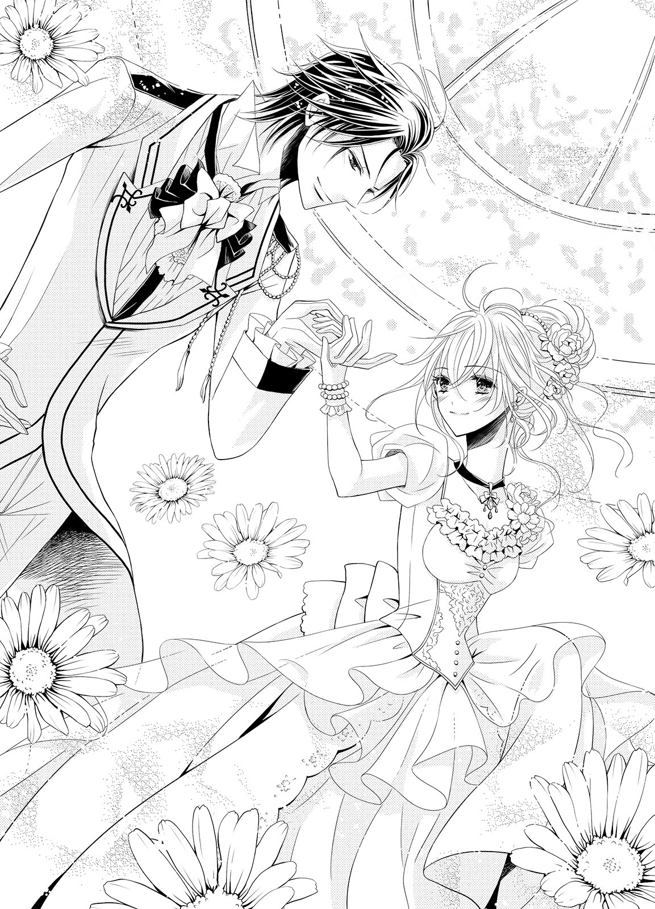
「自分を知らないって、末恐ろしいな......」
苦笑しながらギルバードは呟くと、飲み物を取りに行くために離れていった。そのうしろ姿を、シェリルは少し不安な気持ちで見つめてしまう。......ギルバードが離れてしまうと途端に心細くなった。
（だ、大丈夫よ。ギルバードが戻ってくるまでじっとしていれば......でも......）
立ち去っていくギルバードの姿には、パーティに参加している令嬢たちの視線が自然と集まっている。それは令嬢だけではなく、普通の貴婦人も同じだ。改めて、ギルバードの人気を実感してしまう。
（本当に......昔とは全然違う......）
『シェリルに恥ずかしくない男になるよ』──幼い頃の約束を、ギルバードはちゃんと果たしている。
まだ自分は、ギルバードのことを異性として見れるようになっても、好きかどうかはわかっていないのに。
（好きか、どうか......）
その答えを、本当はわかっているような気がする。
シェリルは緩く唇を噛みしめた。
「失礼します。もしかして、スペンサー家のご令嬢さま......？」
探るような問いかけが、すぐ近くで上がった。慌てて顔を上げると、ルイーズのパーティでメリッサとよく一緒に話していた、ウィストン伯爵家の令嬢が佇んでいる。
「この間のパーティでメリッサと一緒にいた......？」
「はい、そうですわ。今日はこちらのパーティに参加されていたんですね。あまりこういう場には出たがらないと、メリッサから聞いてましてよ」
......何だか少し棘を感じる言葉だ。敵意にも似たそれに、シェリルは気を引き締める。
そういう類のものを向けられる理由が、思い当たらない。自分とは初対面のはずだ。
「本日はオールストン公爵夫人の勧めもあって、参加したんです」
「まあ、それでギルバードさまとご一緒にいらっしゃったんですのね」
小さく頷き返すと、彼女は今度ははっきりと敵意を剥き出しにした目を向けた。
「──あなた、ご自分がギルバードさまと釣り合っていると思っていらっしゃるのかしら？」
「え......？」
「メリッサから聞きましてよ。あなたは貴族の令嬢でありながら馬がお好きで殿方のように遠乗りに行かれたり、読書好きで図書室に籠もったりなさってるとか。そんな女性が幼なじみの特権を振りかざしてギルバードさまの傍にいるなんて、おかしくありませんこと？」
「......そ、れは......」
彼女の言葉は正しい。だが悪意が込められていて、シェリルの心に傷を与えてくる。
（特権だなんて......）
そんなふうに思ったことはなかったが、他の令嬢たちかするとそう見えたのかもしれない。シェリルは反論できずに押し黙ってしまう。
何も返さないことが彼女にとっては苛立たしく思えたらしい。
「ギルバードさまがお優しいからと甘えすぎるのは、みっともないと思いませんの？ まだメリッサの方が、相応しいわ。彼女の方があなたよりもずっと社交的で華やかですもの」
「あ......」
言いたいことだけを言ってしまえば、もう用はないのだろう。彼女はさっさとシェリルの傍から離れていく。
入れ替わりのように、ギルバードが戻ってきた。
手に持っているグラスは、果実酒だ。アルコールに弱いシェリルのことを考えて選んでくれたのだろう。
（優しいギルバード）
私はそこに、甘えている？
「......どうかしたのか？」
グラスを差し出しながら、ギルバードが問いかけてくる。だが正直に話す気には到底なれず、シェリルは曖昧に笑って誤魔化そうとした。
「なんでも......」
「ないって顔じゃない、それは。......おいで」
ギルバードがシェリルの腕を掴んで、立たせる。グラスから果実酒が零れてしまいそうになり、シェリルは慌てた。
「待......」
「ここじゃゆっくり話もできないだろう」
半ば引きずられるようにして、シェリルはギルバードに腕を引かれる。途中ですれ違った召使いに命じて、ギルバードは控え室に案内させた。
「彼女と大事な話がある。誰にも邪魔されないように頼む」
召使いは礼儀正しく、追及するようなまねはしなかった。
「かしこまりました。念のため、扉には鍵をおかけ下さい」
そう言って、召使いは下がってしまう。ギルバードは扉に鍵をかけると、改めてシェリルの前に歩み寄ってきた。
「さて、これで邪魔は入らない。何があったのか、ちゃんと俺に話すんだ」
「......な、にも......」
「何もないって言い訳は、俺には通用しない。君のことをどれだけ想ってきたと思ってるんだ？ どんな些細な仕草からでも、俺は君の不調を見抜ける」
シェリルは言葉を詰まらせる。ギルバードのこの様子では、シェリルから事情を聞くまで許してくれなさそうだった。
（どうしよう......）
事情を知ったら、ギルバードがあの令嬢を叱責しに行ってしまうかもしれない。そうなれば、大事になってしまう。ギルバードの評判にも関わってしまうかもしれない。
シェリルが答えに困っていると、ギルバードは靴音をさせて目の前まで歩み寄ってきた。片腕がシェリルの腰に回り、互いの腰が密着するほどに抱き寄せられる。
「ギ、ギルバード......あのね、本当になんでも......」
「とても悲しそうな瞳をしている。ウィストン伯爵令嬢と何かあったんだろう？ 話してごらん？」
「......っ」
全て見られていたのか。シェリルは我慢できなくなってしまい、ギルバードの優しさに結局甘えてしまってぽつりぽつりと事情を話はじめてしまう。
ギルバードは余計な言葉を挟まず、シェリルの話を聞いてくれる。すべてを話し終えるとなんだかほっとしたせいか──ほろり、と涙の雫が零れ落ちた。
「ごめんなさ......」
急に泣き出すなんて、小さな子供のようだ。シェリルはギルバードに泣き顔を見られないよう、慌てて顔を背けようとする。
その唇に、ギルバードの唇が押しつけられた。
「......っ」
突然のことに驚いて、シェリルは身を固くしてしまう。ギルバードはもう片方の腕もシェリルの背中に回し、包み込むように抱きしめながら、何度もくちづけてきた。
「これからは俺がシェリルを守る。だから、泣かないで」
シェリルの涙を宥めるように、ギルバードの唇は角度を変えて与えられた。次第に身体の強張りも解けて、ギルバードの胸にもたれかかってしまう。
ギルバードは反応を探るようにシェリルの唇を開かせると、そっと舌を差し入れてきた。
「ん......あ......っ」
舌が口中をゆっくりと這い回る。ギルバードは縮こまったシェリルの舌に軽く触れ、なじませるように舐めてきた。
「ん......んん......っ」
鼻先や唇の端から零れてしまう吐息が、本当に自分のものなのかひどく疑わしいほどに甘い。それを耳にすると、ギルバードは嬉しそうに笑う。
これではギルバードにくちづけられて喜んでいるようで、はしたないと思われてしまう。
（でも......気持ちがいいの......）
ギルバードの舌が、次には遠慮なく動いてきた。シェリルの舌に絡みつき、ぬるついたそれを擦りつけてくる。
呼吸すらも飲み込むかのように激しく深くくちづけられて、やがてシェリルは息も絶え絶えになってしまった。
「ふぁ......っ」
ようやく唇が解放され、シェリルは濡れた瞳でギルバードを見返す。ギルバードは優しくシェリルを見下ろすと、目元の涙を唇で吸い取ってくれた。
「俺と一緒にいる女性は、俺が決める。他人がとやかく言うことではない。外見や噂だけで判断するような人の言葉は、まったく気にする必要がないんだ」
ギルバードの掌が、シェリルの背中を撫でてくれる。今は、ギルバードの腕のぬくもりがすっぽりと自分を包み込んでくれていて、気持ちいい。
「俺は、今のシェリルが好きなんだ。スペンサー家の姉妹の中で、君だけがいつも俺のことを気遣ってくれて、優しかった。どんなときも俺のことを考えてくれて、俺はそれがとても嬉しかった」
ギルバードが、シェリルの唇に柔らかくくちづけてくる。ギルバードの想いが伝わってきて、シェリルは自然と目を閉じて──くちづけを受け止めた。
身体が蕩けてしまいそうなくちづけに、うっとりとしてしまう。ギルバードはシェリルの反応に少し驚いたように目を見張ったものの、すぐに嬉しそうにくちづけを深めてきた。
「シェリル......シェリル」
くちづけの合間にギルバードが名を呼んでくる。その声は熱く掠れていて、シェリルを求めてきていた。その呼び声が耳に滑り込むと、身体の奥がじん......っ、と疼くように熱くなる。
ギルバードが唇を少しだけ離して、小さく笑った。
「キス......嫌がらないんだな」
言われて、そのことに気づく。だがもう身体は蕩けきっていて、抵抗することもできない。
ギルバードがシェリルの唇の端を啄ばみ、頬にくちづけて、耳に移動する。シェリルはギルバードのシルクシャツの胸元を、ぎゅっと強く握りしめた。
（駄目って......言えない。だってギルバードにキスされると......気持ちいいの）
「嫌では......ないな？」
ギルバードが耳に唇を押しつけるようにしながら、囁きかけてくる。シェリルは身を震わせた。
答えをせがむように、ギルバードは名を呼んでくる。
「シェリル？ ......教えてくれ」
ぞくりと背筋に震えが走って、シェリルは衝動的に頷いた。気持ちに正直に身体の方が反応してしまったことがはしたないように思えて、シェリルは恥ずかしくてたまらなくなる。
だがギルバードの方は、とても嬉しそうだ。
「シェリル」
熱い声音で囁きながら、耳を舌で舐ってくる。複雑なかたちをなぞるように舌で舐められると、身体の震えはますます強くなった。
「あ......」
「緊張しているのか？ ......可愛い」
尖らせた舌が、小さな耳の穴に潜り込む。唾液が絡むくちゅくちゅという水音が、直接体内に響いてくるようで、たまらない。
「や、あ......それ、駄目......っ」
「俺が嫌いだから嫌というわけじゃないだろう？」
その通りだから、シェリルは反論できない。淡い涙を浮かべた瞳で困ったように見返すと、ギルバードが軽く息を呑んで──苦笑した。
「シェリル、その潤んだ目は逆効果だ。もっとしたくなる」
「ん......んんっ!!」
ギルバードが、またくちづけてくる。
「ギル、バード......」
くちづけの合間に無意識のうちに呼ぶと、ギルバードのくちづけはもっと激しく深くなった。熱いくちづけを与えながら、ギルバードの手がシェリルの身体を撫で回す。
抑えていた何かが弾けたかのように、ギルバードの熱い掌が遠慮なく身体を撫でてくる。ドレスの生地越しにもギルバードの手は熱く感じられて、ゾクゾクした。
ギルバードの手が、胸の膨らみに伸びる。やわやわと柔らかさを確かめるように揉みしだかれて、シェリルは腰の辺りに疼きを覚えてしまう。ギルバードの手から逃れなければと思うのに、深く激しいくちづけに酔わされて、力は抜けていくばかりだ。
「シェリル......っ」
ギルバードの手が、ドレスの襟を掴む。そのまま引きずり下ろそうとする仕草に、シェリルは最後の力を振り絞った。
「だ、め......ここ、は......」
他人の館なのに。
シェリルの制止の声にギルバードはハッとして、ようやく身体を離してくれる。だがそれが理性をかき集めてのことだと、かすかに震える指でわかった。
「......すまない。君があんまり可愛い顔をするから、止められなかった......」
苦笑しながら言って、ギルバードはシェリルの額に軽くくちづける。もういつも通りのギルバードであることにホッとしたものの──同時に少し寂しいような物足りないような気持ちにもなってしまった。
（私......どうしちゃったの......）
──ギルバードのことを、自分は好きなのだ。多分、幼い頃から好きだった。記憶の中の自分の傍には、いつだってギルバードがいた。それだけギルバードが一緒にいることが、幼い頃の自分には自然なことだったのだ。
先日のパーティでの触れ合いをきっかけとしてギルバードのことをシェリルはちゃんと考えてみた。そうして出した答えだった。
（でも......私でいいのかしら......）
ギルバードの気持ちはとても嬉しい。だが今の彼ならば自分よりももっと魅力的な女性を妻に望める。それだけギルバードは魅力的な男性なのだ。
（でも、私は......？）
それを考えると、ため息が零れてしまう。
（でもこれって、すごく贅沢な悩みなのかも......）
求婚について早くちゃんとした答えを出さなければ、ギルバードにも失礼だ。だが、断るのも受け入れるのも怖い気持ちがある。
気を揉みながら館の廊下を歩いていると、ギルバードに呼び止められた。
「シェリル！」
振り返ったシェリルはギルバードの乗馬服姿を見て、どきりと胸をときめかせてしまう。動きやすさを重視した乗馬服はギルバードの引き締まった身体のラインをはっきりとさせていて、よく似合っていた。
「ギルバード、これから出かけるの？」
「今日は一日休みだ。近くの我が家の領地にある森に、遠乗りにでも行ってこようかと思ったんだが......シェリル、君も行くだろう？」
「え......」
「ついでに、ランチボックスも用意してもらったよ？」
シェリルの頬が、パアッと明るくなる。それは想像しただけで楽しそうだ！
「い、いいの？」
「もちろん」
「すぐに着替えてくるわ！ 待ってて！」
大急ぎで着替えを済ませて玄関ホールへ出ると、シェリルは新たな歓喜の声を上げてしまう。ギルバードが手綱を引いていたのは、ジュリアだった。
「ジュリア！」
ひしっと鼻面に抱きつくと、白馬もまた嬉しそうに鳴いてくれる。
「ギルバード、どうしたの？ どうしてジュリアがここに？」
「今日の遠乗りのために、スペンサー家から連れてきてもらった」
「とても嬉しいわ！ ありがとう、ギルバード！」
召使いがもう一頭、栗毛の馬を引いてきた。
「俺はこの子に乗る。君はジュリアでいいね？」
「一人で乗ってもいいの？」
「シェリルと一緒に、馬を走らせたかったからな」
（これはきっと、私のためなんだわ）
ギルバードの優しさにシェリルはほほ笑む。それは誰もがハッと見惚れてしまうほどに柔らかく美しい笑みだった。
「ありがとう、ギルバード。とても嬉しいわ！」
管理がきちんと行き届いている森は、自然の静寂で満たされていた。時折聞こえるのは鳥の鳴き声と、風で起こる葉擦れの音くらいだ。ここまでの道のりは久しぶりの乗馬ということもあり、とても気持ちがよかった。
風も心地よく、空気も美味しい。並走するギルバードは、言葉はもちろんのこと態度にも、こちらを馬鹿にする様子は一切見られなかった。それどころかこうして一緒に馬に乗ることを楽しんでくれている。
ギルバードの案内で森の奥まったところにまで行くと、清水が湧く泉があった。ジュリアたちに水を与えたあと、シェリルたちはそこに敷き布を敷いて昼食にすることにした。
サンドイッチを主にした昼食は、森の中で食べているせいかいつもよりも美味しく感じられる。ギルバードとの会話も弾んで、二人の笑顔は絶えなかった。
昼食を終えて、シェリルは魚を見ようと泉に近づく。清水の清らかさは、足を浸したらとても気持ちよさそうに思えた。
「シェリル、ここには俺しかいない。好きにしていい」
まるで心の中を見透かされたような感じだ。
「え、でも......」
ギルバードが笑いながら、靴を脱いだ。
「では、俺が先に入ろう」
ぽいぽいと靴下をあっという間に脱いで、ズボンの裾を捲り上げる。そのままギルバードは躊躇いもせずに泉の中に足を踏み入れた。
「ああ......冷たくて気持ちいいな。シェリルもおいで」
ギルバードが、したいことをさせてくれていることがわかる。シェリルは笑い返すと、急いで裸足になり、ズボンの裾を捲り上げてから泉の中に足を踏み入れた。
最初は爪先で軽く水面に触れてみる。ほどよい冷たさは足を癒してくれるものだった。水深も足首ほどだ。
躊躇いはあっという間に消えて、シェリルは勢いよく足を踏み込む。裸足の足裏に水草が茂る柔らかな水底は、とても気持ち良かった。
シェリルは思わずはしゃいだ声を上げる。
「本当ね！ 冷たくてとっても気持ちい......きゃ......！」
「シェリル！」
水草に足を取られて身体のバランスを崩し、シェリルは仰向けに倒れてしまう。ギルバードが血相を変えて手を伸ばしてくれたが、間に合わない。
ぱしゃん！ と水音を立てて、シェリルの背中が泉に沈む。だが思った以上に痛みをほとんど感じないのは、ギルバードの片腕が背中に回って衝撃を抑えてくれたからだ。その代わり、ギルバードはシェリルの太股辺りを挟み込むようにして、水底に膝をついてしまっていた。
シェリルも濡れてしまったが、ギルバードも膝だけでなく、跳ね上がった水面の雫を受けて、額や頬、前髪が濡れてしまった。
「大丈夫か!?」
「ご、ごめんなさい、ギルバード。私が、はしゃいでしまって......」
ふと、シェリルは口を噤む。
こちらを心配そうに見つめてくる蒼い瞳とその奥に見える空の色が、同じだった。それがとても綺麗で、シェリルは眩しげに微笑む。
「私もギルバードも色々変わったけど......この蒼は、変わらないわね。空と同じで、綺麗」
シェリルは自然に手を伸ばし、ギルバードの目元に触れようとする。ギルバードはその手を取ると、指先にくちづけてきた。
どきん......っ、と鼓動が跳ねる。ギルバードの背中を支えてくれる手に力がこもり、上体を起こしてくれた。
同時に端正な顔が近づいて、くちづけられている。
「あ......ん......っ」
軽く首を振るようにして、ギルバードがシェリルの唇を押し割ってきた。舌が入り込み、シェリルのそれに絡みついてくる。
「ん......んふ......っ」
舌を擦りつけられ、搦め捕られて、目眩に似た心地よさがやってくる。もう、抵抗する力はなかった。
（だって、私もギルバードのことが好きだって気付いたの......）
はふ......っ、と互いに熱い吐息をついて唇が離れると、ギルバードがシェリルを水から抱き上げた。
「このままだと風邪をひく」
秋の入り口に入ったこの時期ならば、かろうじてすぐに戻ればその心配もない。だがシェリルはギルバードの胸元にそっと頭をもたせかけて頷いた。
「そうね。どこかで服を乾かさないと......」
ギルバードが、意外そうにシェリルを見返してきた。何も答えないでいると、ギルバードは小さく笑って歩き出す。
「この近くに屋敷がある。この森の管理をする際にも使用するものだ。管理人が常駐はしていないけど何でも揃っているはずだ、行ってみよう」
「ギルバードに......お任せするわ」
少し歩けば森の中にあるとは思えない立派な屋敷にたどり着く。管理人の出入りもあり空気の入れ替えもされていて、きちんと掃除も行き届いていた。
ギルバードは中に入ると、まずは暖炉の方に歩み寄り、火を起こした。
「シェリル、火の傍においで」
「あ......ありがとう......」
言われて暖炉の傍に歩み寄る。火の暖かさを感じると、濡れた身体の冷たさを急に実感してしまい、シェリルは小さく身震いした。
棚から持ってきたタオルでギルバードが水を拭ってくれ、毛布を手渡してくる。
「身体が冷え切っているな。......脱いだ方がいい」
「え......!?」
「濡れた服を着たままだと、体温を奪われる一方だ。脱いだらその毛布で暖まって」
ギルバードはこちらに背を向けたが、だからと言ってすぐに脱げるわけもない。だがギルバードの言うとおり、身体がずいぶん冷えていた。
火の調子に目を向けたままで、ギルバードはこちらを見ないでいてくれる。シェリルは小さく息を呑んだあと、意を決してギルバードに背を向け、濡れた服を脱ぎ始めた。
毛布ですぐに身体をくるんだが、ひどく頼りなくて恥ずかしい。
「お、終わったわ。ギルバードも早く脱いだ方が......」
ギルバードは小さく笑った。
「毛布は一枚しか見つからなかった。俺はこのままで乾かす。ほら、シェリル。恥ずかしがらないで、ちゃんと火の傍に来るんだ」
ギルバードの言葉には紳士的な優しさのみだ。間違いなく彼は、濡れた服のままでいるつもりだろう。
（でもそれじゃ、ギルバードの身体が......）
シェリルは考えを巡らせたものの、いい方法は一つしか思いつかない。とても恥ずかしくてたまらなかったが、勇気を振り絞って言った。
「ギルバードも、脱いで」
「え......？」
「ギルバードの身体もそのままだと、冷えてしまうわ」
見返す蒼い瞳が、驚きから厳しいものへと変わっていく。
「い、一緒に、毛布を使えばいいと、思う、わ......」
恥ずかしさで、舌がもつれそうになる。ギルバードはその言葉に驚き、額を指先で押さえた。
「君は俺のことを、やっぱり男としては見てないのか？ 裸で抱き合ったまま紳士でいろだなんて、俺には無理だ。わかってるのか？ 俺は、君が好きなんだぞ？」
窘められて、シェリルは真っ赤になりながらもギルバードを見返す。そして毛布の隙間から手を伸ばし、ギルバードの腕を掴んだ。濡れた生地は、シェリルの想像以上に随分冷え切っていた。
「い、今はそんなことを言っている場合ではないわ。ギルバードの身体も、冷えてしまうもの。あなたの身体が、心配なの」
「......俺のことを、男として見ていないのか」
「そ、そういうわけじゃないわ。も、もし、そうなってしまっても......ギ、ギルバードになら......いい、と思ってる、わ......」
シェリルには、そう言うだけで精一杯だ。
「......俺だから、いいのか？」
こくん、と小さく頷く。
恥ずかしさで唇を緩く噛み締めると、ギルバードが立ち上がった。俯いたままのシェリルの視界にはギルバードの足元しか見えないが、衣擦れの音とともにそこに彼の濡れた衣服が次々と落ちてくる。
ギルバードが裸になっていることに気づいて、シェリルはぎゅっと強く目を閉じた。ギルバードがシェリルの身体から毛布を取る。
まだ暖まってはいない外気に、肌が震えた。ギルバードは背後に座り、立てた膝の間にシェリルの身体を挟んで、両腕で包み込むように抱きしめてきた。抱き合ったギルバードの身体に毛布はかかり、これならば二人一緒に暖まれる。
背中にギルバードの逞しい胸板がそっと押しつけられて、それがシェリルをドキドキさせる。だが伝わってくる温もりは、とても安心できるものだった。
ギルバードの唇が、耳朶にそっと押しつけられる。
「寒くはないか？」
「だ、大丈夫......ギルバードのおかげで、とても暖かいわ」
「そうか。よかった......」
言ってギルバードは口を噤む。
時折熾し火の爆ぜる音がするくらいの静けさだ。この状態で何を話せばいいのかわからず、シェリルも黙ったままだった。
（な、何も......しない、の......？）
ギルバードはシェリルに手を出してこない。てっきりそういうことになるのかと思っていたため、シェリルは拍子抜けしてしまい──やがては不安になってくる。裸になったことで何か自分の女性としての身体に、問題でも見つかったのだろうか。
だが、そんなことをどう聞けばいいのかわからない。聞くこと自体がはしたないのではないだろうかとすら思う。
ギルバードの腕の中はとても落ち着くはずなのに、そういった意味でそわそわし始めてしまった。
「どうした？」
シェリルの異変に気づいたギルバードが、優しく問いかけてくる。シェリルはしばし悩んだあと、思い切って問いかけてみた。
「あ、あの......な、何も、しない、の......？」
「......して、欲しいのか？」
ギルバードが小さく笑ながら、問い返してきた。これでは自分がしてもらいたいとねだっているようではないか！
シェリルはギルバードの腕の中で身を縮めながら、プルプル首を振った。
「ち、違うわ、そういう意味じゃ......！」
「ああ、ちゃんとわかってる。けれど、今は、しない」
自分の身体に魅力がないのかと、シェリルは少し不安になってしまう。ギルバードはシェリルを抱きしめる腕に少し力を込めて、続けた。
「本当は今すぐにでも、したい」
「あ......っ」
耳にくちづけられながら熱く囁かれて、シェリルは身を震わせる。前に回った腕が胸の膨らみを押しつぶしているのがわかって、ドキドキしてしまう。
「だが、初めての君を、こんなところで抱きたくない」
衝動に身を任せることなく自分のことを大切に思ってくれることがひしひしと感じられて、シェリルはギルバードへの想いを改めて強める。
「......あり、がとう......」
シェリルが小さな声で言うと、ギルバードは苦笑した。
「あまり可愛いことを言わないでくれ。これでも、必死で堪えてるんだから」
濡れた服を渇かしている間に、身体も充分に温まった。身支度を整えて、ジュリアたちとともに館に戻る。ハプニングのおかげで戻る時間が夕暮れ近くになってしまったため、召使いたちが心配して出迎えてくれた。
「お帰りなさいませ、ギルバードさま、シェリルさま。お帰りが遅くなっているようでしたので、とても心配しました......！」
二人で馬を下り、手綱を召使いたちに預ける。シェリルは召使いたちに安心させるために笑いかけた。
「ごめんなさい。でも大丈夫よ、特に何事もなく......あ......っ」
ギルバードがシェリルの肩を抱き寄せて、引き寄せる。突然のことによろけてしまったシェリルを、ギルバードは軽々と抱き上げる。
「ギ、ギルバード......!?」
「久しぶりの遠乗りで疲れたみたいだ。少し休ませる」
「あ......は、はい。ではお支度を......」
仕事熱心な召使いの言葉に、ギルバードは首を振った。
「いや、いい。馬上でも話しかけていないと、すぐに眠ってしまいそうだったんだ」
そんなことはなかった。だがギルバードはシェリルの頭を自分の胸に押しつけるようにさせて、彼女たちに顔を見られないようにしてしまう。ギルバードが何を求めているのかがすぐにわかって、シェリルは小さく頷いた。
「......そ、そうなの......今はすぐに、眠りたく、て......」
「わかりました。お着替えは気にせず、そのままお休みください。お起きになられたら、お声をかけてくださいませ」
召使いたちに礼を言うと、ギルバードはすぐに背を向けて歩き出した。大きな歩幅でシェリルの部屋に脇目もふらずに向かっていく。
扉を開けると、ギルバードはまっすぐにベッドに向かい──シェリルを柔らかいそこに下ろしながらのしかかり、くちづけてくる。
あまりにも性急なくちづけに、驚く暇もない。シェリルの唇を強引に押し開いて、ギルバードの舌が潜り込んでくる。
「ん......んんっ」
ギルバードの舌がシェリルのそれを搦め捕り、甘く噛んで引き出してくる。たっぷりと唾液をのせた舌が擦りつけられ、シェリルの舌も濡れてきた。
絡みつく舌が激しくて、反射的に顎を引いてしまいそうになる。だがギルバードの甘い拘束は解けない。自身の重みでシェリルをベッドに押さえつけると、上着のボタンを外し、ブラウスのボタンも外していく。
「......ん......んん......っ、ギル、バード......っ」
ギルバードの手はシェリルの前身頃を押し広げると、続いてコルセットを開いた。上体が解放感に包まれて、シェリルは身を震わせる。ふるり、と胸の膨らみが露わになった。
シェリルの唇に角度を変えて何度も深いくちづけを与えながら、ギルバードの両掌が胸の膨らみを握り込んできた。
強弱をつけて揉み解されて、柔らかな膨らみはギルバードの意のままにかたちを変えていた。
「......ん、ふぅ......っ」
「シェリル......」
わずかに唇を離して、ギルバードが呼びかけてくる。情欲にまみれた声は、熱くて掠れていた。自分が求められていることが強く感じられて、鼓動が脈打つ。
何度も唇を貪られていると、溶けた唾液が口端から零れ落ちた。顎先を濡らす感触にびくんっと小さく身を震わせる。たったそれだけでも、今のシェリルには充分な刺激になる。
ギルバードは乳房を捏ねていた手を下ろし、落ちた雫を指先に取った。
「ん......っ」
片方の膨らみに濡れた指が伸びて、頂に唾液を塗り込んでくる。ぬるりとした感触は思った以上に気持ちよくて、シェリルは息を詰めた。
「んー......っ」
ギルバードの指が、さらに強く動く。頂を指の腹でくりくりと押し回し、弾力を楽しんでいる。親指も加わって摘ままれ、指の腹で乳首の側面を擦り立てられて、シェリルは身を捩った。
痺れるような快感は思った以上に強く、唇からはしたない声が漏れてしまいそうになる。それならばギルバードにくちづけられていた方がいいと思ったのに、彼は小さく笑って唇を放してしまった。
「あ......あ、駄目......っ。キス、やめない、で......っ」
「君の可愛い声が聞きたいから、ここで終わりだ」
「や、ぁ......」
両手で遠慮なく乳房を捏ね回されて、シェリルの唇から甘い声が溢れてしまう。本当に自分の声なのかと疑いたくなるほどだ。こんな声を聞かれて恥ずかしいのに、ギルバードはなぜか嬉しげに笑う。
「ああ......可愛いな。胸をこうされると気持ちがいいか？」
ギルバードの唇が、項に吸いつく。唇が開き、濡れた熱い舌が耳に向かってねっとりと舐め上げてきた。
耳朶を甘噛みされ、外郭を舐められる。尖らせた舌が耳中を犯してきて、シェリルはビクビクと震えてしまった。
「駄目......それ、駄目......あ、あんん......っ」
恥ずかしい声を出したくなくて止めようとするが、ギルバードはやめない。それどころかシェリルの甘い声に煽られている。
「そんな可愛い声が、出るのか。もっと......聞かせてくれ」
ギルバードが乳房を掴み、胸の中心に寄せる。二つの頂をギルバードが見せつけるように舐め回してきた。
「や、ぁ......駄目......っ」
「駄目ではないだろう？ ここが、硬くなってきてる。ほら......」
快楽の涙でぶれる視界の中で、確かに二つの粒がしこり立っている。
「ほら、こっちもこんなに硬いぞ。気持ちいいんだろう？」
その通りだが、認めるのは恥ずかしい。ギルバードはそんなシェリルの気持ちをわかっているのか、苦笑した。
「何だろうな......どうしても君に、気持ちいいって言わせたくなってきた」
なんだか不穏な気配を感じ、シェリルは思わず逃げようとする。枕の方にずり上がろうとした腰にギルバードの片腕が絡み、シェリルの乗馬用のスカートを引き下ろした。
「......あ......っ！」
シェリルが慌てて止める間もなく、ドロワーズも脱がされてしまう。あっという間に一糸纏わぬ姿にされてしまい、シェリルは自分の胸を両腕で隠すようにして、身を縮めた。
「見......見ない、で......！」
「見るに決まってる。綺麗だ」
ギルバードが嬉しそうに言う。身体を誉められて嬉しいが、恥ずかしい。
シェリルは胸を隠したまま、ぎゅっと目を閉じてしまう。ギルバードは小さく笑いながら、シェリルの膝に手を伸ばした。
「ではこっちを可愛がってあげよう」
「え......きゃ......！」
ギルバードの大きな手がシェリルの膝頭を掴む。ぐっと力がこもり、膝を大きく開かせた。
秘所が露わになり、シェリルは声にならない悲鳴を上げた。
「......っ！」
とても恥ずかしい場所に、ギルバードの視線を感じる。そこはいつの間にかしっとりと濡れていた。
「......濡れてるな」
ギルバードが低く囁く。シェリルは真っ赤になって首を振った。
「いや......！ 見ない、で......」
「どうしてだ？ これは、君が感じてる証拠だ。俺にくちづけられて胸を弄られて......気持ちよかったからこうなったんだ」
意地悪なことを言われて、シェリルはさらに赤くなる。必死に足を閉じようとするが、ギルバードが許さない。ギルバードが腰を足の間に押し入れ、それ以上閉じられなくしてしまった。
ギルバードの片手がゆっくりと下りていく。臍の窪みを一度指の腹で押し揉んだあと、更に下を目指した。
「駄目......それ以上は、駄目......」
ふるふると首を振りながら言うが、ギルバードは聞かない。指が淡い茂みを優しく撫でて、かき回してきた。
「あ......っ」
「どのくらい濡れてるか、ちゃんと見せてくれ」
「そんなこと......しなくても......っ」
「君を傷つけたくないからだ。ここがちゃんと濡れていないと、俺が入るときに君を傷つけてしまう」
指が茂みを掻き分けて、花弁に触れた。そのまま指が割れ目を上下に撫で擦り始めた。
しっとりと滲み出していた愛蜜が、ギルバードの指に絡み、動きを滑らかにする。ぬるぬるとした感触に、シェリルは腰を震わせた。
「あ......あっ、あ......っ！」
痺れるような快感が、そこからゆっくりと全身に広がっていく。胸を弄られていたときよりも数倍の気持ち良さに、シェリルは喘ぎを零す。
ギルバードの指が動くたびに、蜜が溢れてくる。それをなんとか止めたいのに、どうにもならない。
「ああ......蜜が、また溢れてきた......」
嬉しげに言って、ギルバードの指が蜜を掬い取る。その指先を、シェリルの目の前に持ってきた。
「わかるか？ 君が俺にこうされていることを気持ちよく思ってる証拠だ」
濡れ光る指を見ていられなくて目を背けようとすると、ギルバードはその指をぺろりと舐めた。
「何をして......！」
あまりにも予想外のことをされて、シェリルは慌ててしまう。そんなものは、舐めるものではないだろう！
「やだ......やめて！ 汚な......」
「汚くないさ。君の味がする。でもまだ薄い。もっと濃密にならないと」
つぷり、とギルバードの指が沈みこんだ。そのままぬちぬちと出入りする。新たな快感にシェリルは大きく目を見開き、淡い涙を散らした。
「あ......は、あ......っ」
ギルバードの指が、中の肉壁を擦るように動く。腰だけでなく全身がビクビクと跳ねるように動いてしまった。
ギルバードはシェリルの頬にくちづけながら、親指で花芽を捉えた。
「......ここも、硬くなってるな......」
「ひ、あ......っ」
蜜を纏った指が、くにくにと花芽を押し揉む。新たな快感はさらに強いもので、シェリルは身をくねらせた。
「あ......んあ、あ......だ、め......」
「可愛い、シェリル......我慢なんかしなくていい。俺の指に素直に感じて、気持ちよくなればいい。ほら......今度は、こうしてあげよう」
ギルバードの指が、優しく皮を剥いて花芽を剥き出しにする。ぬるつく指でひと撫でされただけで、ビクンッと身体が跳ねてしまった。
「......ひあっ！」
胸を揉み弄っていた手も下りてきて、蜜壺に触れる。片方の指が中を出入りして、もう片方の指が花芽を捏ね回したり押し揉んでくる。
腰が意識に反してビクビクと跳ねてしまい、恥ずかしい。こんなに淫らな反応をするのは、おかしいのではないか。
ギルバードの指が動くたびに、蜜壺からはぐちゅぐちゅといやらしく水音が立ち上がる。
「すごく、濡れてるな......嬉しいよ、シェリル。もっと感じてくれ」
ギルバードが首筋に吸いついてくる。それにも身を震わせてしまい、シェリルは首を振った。
「い、や......だめ......ぇ......っ、もう、もう......感じすぎちゃう......」
「なんて可愛いんだ、シェリル。そんなことを言われたら、俺の理性がもう限界だ」
「あ......あっ、あっ、あぁ......っ!!」
指の動きがますます激しくなった。じゅぷじゅぷと淫らで粘着質な水音が、蜜壺から上がる。その音が高くなるに合わせて、シェリルの快感も高まり──直後、意識が真っ白に塗り替えられるほどの高ぶりがやってきた。
「......あ......あぁー......っ!!」
ギルバードの指をきつく締めつけて、シェリルは達する。腰を知らずにせり上げ、胸を激しく上下させたあと、シェリルは息を乱しながらぐったりとベッドに沈み込んだ。
（あ......あぁ......何、これ......すごく、気持ちよかった......）
「......シェリル......」
快楽の涙を、ギルバードの唇が優しく吸い取ってくれる。シェリルはその唇の優しさに目を閉じて、初めての絶頂の余韻に身を委ねた。
「......シェリル、まだ眠らないでくれ」
ギルバードが苦笑しながら、言ってくる。どういうことなのかを瞳を開けば、ギルバードがシェリルの足の間で膝立ちになり、手早く乗馬服を脱いだ。
引き締まった男の艶を持つ半裸が、露わになる。シェリルは顔を赤くするが、魅入られてしまって目を逸らすことができない。
ギルバードはバックルを外し、下肢も緩めた。そこから張り詰めた男根が露わになり、シェリルは息を呑む。
「ギ、ギルバード......っ」
「大丈夫だ。優しく入るから」
ギルバードがシェリルの膝を掴んで、改めて大きく押し広げる。シェリルは反射的に両手を秘所に向かって伸ばし、露わにされたそこを隠そうとした。
その指に、熱い塊を感じ取ってしまう。何、と目を向ければ、ギルバードの若茎が花弁に押しつけられていた。
「あ......っ」
不思議と滑らかな太い肉棒が、花弁を往き来する。滴る蜜を纏わせ、花弁に怒号を馴染ませるかのような動きだ。
熱く脈打つそれを感じて、シェリルは震える。
「ギル、バード......」
「シェリル......君の中に、入りたい......」
膨らんだ亀頭が、くちくちと蜜壺の入口を押し揉んできた。シェリルが答えるよりも早く、今度は亀頭で花芽を弄られる。
「あ、あ......」
「シェリル......いいか？」
ここまで来て自分に許しを求めるのが、ギルバードらしく思えた。シェリルは羞恥を耐えながら、頷く。
「き、てぇ......」
「......っ」
ギルバードが息を飲んだあと、肉棒をゆっくりと蜜壺に押し込んできた。信じられないほどの圧迫感と、全身を真っ二つに引き裂かれてしまいそうな痛みがやってくる。
「......あ、う......っ」
苦痛の呻きを堪えることができずにいると、ギルバードが優しくくちづけてきた。
「シェリル、ちゃんと息をするんだ......そう、いい子だ。大丈夫、俺は君を傷つけない。大切で愛おしいシェリルのことを、傷つけるわけがない」
唇を啄ばみながら、ギルバードが甘く囁いてくる。
腰を押し進めながらもその手はシェリルの胸や花芽を弄って、教えられたばかりの快感を再び与えてくれた。痛みがいくぶん和らいで、シェリルは大きく息をつく。その一瞬の機会を逃さず、ギルバードが強く腰を押し入れた。
「......っ!!」
衝撃と鋭い痛みに、シェリルは思わずギルバードの肩を掴み、爪を立てた。ギルバードは一瞬痛みに顔をしかめたものの、すぐに嬉しそうに笑う。
「やっと、君を俺のものにできた......」
感慨深げな声が、想いの深さを教えてくれる。
ギルバードはシェリルの中で動かないまま、痛みの冷や汗で頬や額に張りついた髪を払った。ちゅ......っ、と軽く音を立てて、目尻や額、唇に啄むくちづけを与える。
下腹部の圧迫感は尋常ではなかったが、とても満たされた気持ちだった。
「大丈夫かい......？」
優しいくちづけとともに気遣いの言葉をかけられて、シェリルは小さく頷く。その途端、ほろりと涙が零れた。
「シェリル......つらいか？ すまない......」
ひどく申し訳なさそうに言われて、シェリルは慌てて首を振った。
「ち、違うの。急に出てきてしまっただけで......身体がつらいとか......つ、つらいことに間違いはないんだけど、そうじゃなくて......」
どう伝えたらいいのかわからず、シェリルは口ごもる。ギルバードは何もかもわかっているかのように微笑んだ。
「それは......嬉し涙って思っていいのか？ 俺のものになれて嬉しいって」
口にするのは、恥ずかしい。シェリルがまた口ごもると、ギルバードは苦笑する。
「残念だ。でも君のここは俺をとても熱く締めつけてくれてるから、そうだってわかるけどな」
そんなつもりはまったくなかったから、シェリルは身じろぎしてしまう。
熱く太い雄の感覚が蜜壺でいっぱいに感じられてしまい、シェリルは知らずに熱い吐息をついた。きゅん......っ、と素直に、ギルバードの肉茎を締めつける。
「......ふ......っ、ほら、また締まった......」
「そ、そんなこと、な......あ......？」
圧迫感が、強くなる。ギルバードの肉茎が、また質量を増していた。
「......な......な、んで、また大きく......っ？」
「シェリルが欲しくてしかたないからだ」
さも当然のように言い返されてしまうと、それ以上は何も言えなくなる。ギルバードがシェリルの腰を撫でた。
「すまない、シェリル。そろそろ、我慢できなく......なりそうだ」
ギルバードの手が、まろやかな臀部を撫でてくる。官能的な撫で方にシェリルが身じろぎすると、ギルバードが軽く息を詰めた。
「ギ、ギルバード......？」
「ああ......悪い。めちゃくちゃに、してしまいそうだ......」
どういう意味なのかを問おうとするより早く、ギルバードの腰が動いた。
「あっ!!」
蜜壺の入口まで腰を引くと、すぐに今度は最奥を目指すように押し入ってくる。振り幅が大きい腰の動きは、張り詰めた雁首が濡れた肉壁を擦るものだ。
「......あ、ん......んん......っ」
ひりつく痛みは確かにあるが、愛蜜が潤滑剤になって痛みを宥めてくれる。ギルバードの肉茎はシェリルの蜜壺の中で感じる部分を探すかのように、動いた。
「あ......あっ、あ......っ」
ギルバードの律動に合わせて、喘ぎが零れてしまう。ギルバードがまた嬉しそうに笑った。
「声、甘くなってきた......気持ちいいか？」
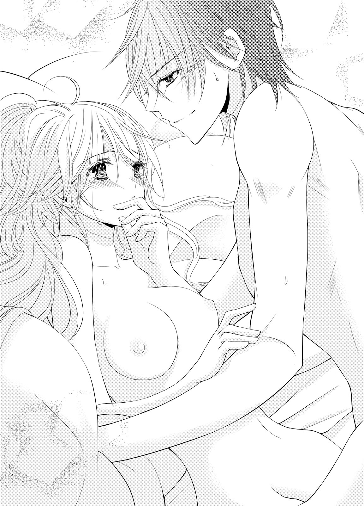
「わ、からな......」
「俺は、すごく気持ちいい......。もう少し強くしても、いいか？」
ギルバードの声は、掠れている。何かに耐えてくれているのがわかる。
（それは、私のために）
そう思うと、シェリルは頷いていた。
「ギルバードなら......いい、わ......」
──直後、ギルバードが噛みつくようなくちづけを与えながら、激しく腰を突き入れてきた。
「ん、んんーっ!!」
ギルバードが上体を倒し、互いの胸を押し潰すかのように身を重ねてくる。自然と腰が浮くと、ギルバードはシェリルの膝を掴んで肩口まで押し上げてきた。
上を向いた蜜壺の中を、ギルバードの肉棒が激しく出入りする。蜜に塗れたそれが動くたび、じゅぷちゅぷと淫らに湿った水音が上がった。
「ん......んあ、あ......っ」
逃げる唇を追われ、奥を激しく貫かれる。疼痛を上回る快楽が徐々にやってきて、シェリルは身悶えた。
ギルバードが角度を変えてくちづけながら、腰を振る。堪えていたものが一気に解放されたために、激しさは増すばかりだ。
「シェリル......シェリル、好きだ。ずっと好きだった。君と繋がりたくて......たまらなかった」
熱い告白も、シェリルの快楽を高める要素になってしまう。初めてなのにこんなふうに乱れてしまうなんて、と頭の隅で思うものの、ギルバードに求められることが嬉しい。
「ギルバード......っ」
「シェリル、シェリル......俺を、受け止めてくれ......っ」
律動の間隔が、速く短くなる。奥を押し潰すかのように張り詰めた先端が、シェリルを高みに押し上げる。
ギルバードがシェリルの両手に手を重ね、指を絡めてきた。シェリルはたまらずに、ギルバードの手を強く握り返す。
「ギル......バード......あ、あぁ......っ!!」
絶頂が、意識を白く塗り潰す。ギルバードも情欲のままにシェリルに強く腰を押しつけ──欲望を放った。
身体の一番奥に叩きつけられる熱い迸りを感じて、シェリルは意識を失う。ギルバードが優しいくちづけを与えてくれたのが、そのときの最後の記憶だった。
シェリルの寝顔が、自分の片腕の中にある。ギルバードの堪えきれなかった激情を受け止めて、シェリルは心地よい寝息を立てていた。本当はもっと優しくしたかったのに、溢れる想いがさせなかった。
ようやく手に入れることができたのだ。制御できると思った方がよくわかっていなかった。シェリルが可愛すぎて、たがが外れてしまえばもう、欲しくてたまらない気持ちだけしか出てこなかった。
ギルバードはシェリルの髪をあやすように優しく撫でながら、額にくちづける。あとで召使いに見つからないように、シェリルの身体を清めておかなければ。
だがもう少し、一緒に眠っていてもいいだろう。ギルバードはシェリルの頬にくちづけながら思う。
（シェリル、君のことは本当に幼い頃から想い続けていたんだ）
自分が令嬢らしくないことで、シェリルは成長するごとに自信をなくしていってしまった。それがギルバードにはひどく悲しく、もどかしいことだった。
お仕着せのありふれた会話ではなく、ときには討論もできるシェリルとの会話は、とても刺激的だ。乗馬はギルバードも好きなことの一つだったから、シェリルと一緒にできることが増えるのは、嬉しい。何よりもシェリルが生き生きと楽しげに笑う様子を一番傍で見続けたい。
──身体が弱かった幼い頃、シェリルはギルバードにとって無限の可能性を見せてくれる希望だった。ギルバードになど構っていられないだろうに、シェリルは、ギルバードに合わせてくれる優しい少女だった。
いつも手を引いてくれた彼女を、いつか自分が守りたい。ずっとそう思っていた。
十何年分かの想いを完全に理解してもらうには、もっと心も身体も触れ合わなければ。
ギルバードはぐっすりと眠るシェリルの唇にくちづける。シェリルはもちろん目を覚まさない。
「シェリル、俺はずっと昔から、君しか見てなかったんだ」
ギルバードは苦笑して、柔らかな身体を抱きしめた。
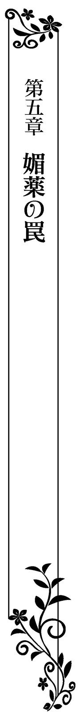
ギルバードに抱かれて、自分の身体は変わったのだろうか。
翌日の昼食の席でシェリルは公爵夫人と一緒に過ごしたのだが、何かにつけて彼女に色々見られていたような気がする。探るような視線にさすがにいたたまれなくなりどうかしたのかと問いかけてみても、公爵夫人はただ満足そうに笑うだけで、はっきりとした答えは何も教えてくれなかった。
だからギルバードが帰ってくると、シェリルは泣きそうになりながら彼を自室に連れて問い質してしまう。
「ギルバード！ 私、どこか変なのかしら!?」
「どこにも変なところはないさ。君はいつだって可愛い」
言ってギルバードはシェリルの腰を抱き寄せ、唇を重ねてくる。あまりにも当然のようにくちづけられてシェリルは心が求めるままに目を閉じて受け入れてしまい、はっと我に返って慌てギルバードの胸を押した。
「な、何をしているの！」
「何って、キスだ。愛しい相手が傍にいたら、普通にしたくなるものだろう？」
言うなりギルバードはシェリルを抱き潰してしまうのではないかと思うほどの強さで抱きしめて、舌を絡め合うくちづけを与えてくる。
シェリルに抵抗などできるわけもなく、そのまま息が荒くなるまでくちづけられてしまった。名残惜しげにギルバードは唇を離してくれて、ぐったりとギルバードの胸にもたれかかったシェリルは、ギルバードを上目使いで見つめると思わず言った。
「ギルバード......何でそんなに嬉しそうなの？」
「君が、俺の恋人になってくれたからだ」
（......恋人）
その言葉に、シェリルは直後に耳まで赤くなる。
確かに昨日、ギルバードに抱かれて想いを繋いだ。間違いなく、自分たちは恋人になったのだ。だが実際にそう言われると、何だかひどく気恥ずかしい。
シェリルは昨日の情事のことを思い出してしまい、俯く。
昨日のギルバードは優しいのに激しく、執拗にシェリルの身体を求めてきた。長年気持ちを抑えつけてきた反動だとわかる愛撫だった。
ギルバードの熱い楔に貫かれて揺さぶられて、自分のものかと疑うほどに甘い喘ぎを上げて身悶えてしまって──。
「母上の様子が変だったのは、多分これだ」
ギルバードの指が、つんっとシェリルの首筋を軽くつついた。そんなところがどうしたのかとギルバードを見返すと、彼は笑いながら続ける。
「すまない、痕をつけてた」
痕って何の......と重ねて問いかけようとしたシェリルは、昨日のギルバードが自分に与えてきた愛撫の一つを思い出して理解する。くちづけの、痕だ。
「──ギルバード！」
弾かれるようにして、シェリルはギルバードの名を呼ぶ。だが、何をどう叱責すればいいのかわからない。
淡い涙目で口をぱくぱくさせるだけのシェリルに、ギルバードは申し訳なさそうに言った。
「本当にすまない、シェリル。今度は見られないところにしよう」
そういう問題ではないのだが、相変わらず言葉はうまく出てこない。そのとき、扉がノックされた。
怒りと羞恥で答えられずにいるシェリルの代わりに、ギルバードが声を上げる。
「失礼します、シェリルさま。シェリルさまにお手紙が届きまして......」
「私に？」
オールストン家に滞在していることは、まだ家族ほどに近しい者しか知らない。誰だろうと思いながら受け取れば、それはメリッサからだった。
ギルバードは手紙のことを気にしているようだったが、シェリルの許可がない以上、内容を追求するつもりはないらしい。気になっているのにこういうところは強引に来ないところがギルバードらしいと思いながら、手紙を開く。
『シェリルお姉さま、突然こんなふうにお手紙を送ってごめんなさい。ブラドル侯爵さまから、お姉さまにお会いしたい旨のお話が届いています。シェリルお姉さまがそちらに今滞在されていることは、お話ししていないわ。安心して。変に誤解されたら、お姉さまも嫌でしょう？』
（誤解......誤解って何の誤解かしら？）
妹の言葉に、小首を傾げてしまう。シェリルはさらに手紙を読み進めていった。
『あちらはお姉さまのことを、かなり好意的に考えてくださっている感じです』
（......ええっ!? そ、それは......困るわ......）
自分はギルバードのことが好きだと気づいて、彼と結ばれたのだ。アイザックの気持ちを受け入れることはできない。
（どうしよう......）
「シェリル？ どうかしたのか？」
シェリルの様子がおかしいことを心配して、ギルバードが問いかけてくる。シェリルは慌てて手紙を胸に抱きしめ、ギルバードを見返して首を振った。
「な、なんでもないわ！」
「そうは見えないな。手紙、何だったんだ？」
ギルバードが、シェリルの方に一歩を踏み出してくる。その瞳がこちらを強く見つめてくるから、シェリルは一歩退いてしまう。
ギルバードはもう一歩さらに近づいてきた。代わりにシェリルがまた退く。そんなことを数度繰り返していたら、気づけば壁に追い詰められていた。
「あ、あの......本当になんでも......」
「なんでもないなら、そういう顔をしないだろう？」
「見ないで！」
顔を見られているから自分の気持ちが漏れてしまっているのかと、シェリルは慌てて叫ぶ。ギルバードにそれ以上表情を見られないように慌てて逃れようとするが、身体の向きを変えた途端にギルバードの腕がそちらの壁側につかれた。
「......っ」
ならば反対側から、ともう一度向きを変えると、そちらにも同じように腕をつかれてしまう。
両腕の中に囲われて、シェリルは正面を向くしかない。するとギルバードの真剣な顔が鼻先が触れ合うほどに近づいていて、シェリルは息を呑んだ。
「シェリル。手紙の内容は、なんだ？」
「......本当になんでもないのよ......」
「俺はそれを信じて、大丈夫だな？」
やましいことはない。アイザックとは少し話をしてこちらを令嬢らしくないと馬鹿にはしない優しさに好感を持ったが──それも、ギルバードと重なっただけなのだと、今となってはわかる。
シェリルは手紙を胸に抱きしめたままで、笑顔を浮かべた。その笑顔は決して無理がなく、ギルバードを安心させるように落ち着いたものだ。だからギルバードも、信じてくれたようだ。
「......わかった、信じよう。だが何かあったんだったら、必ず教えてくれ」
「ええ、わかったわ。ちゃんと言うわ」
シェリルは思わずほっと安堵の息をつく。その様子を見て、ギルバードが笑った。
「なぜ、そんな安心してるんだ？」
「だって......喧嘩になってしまうかと思って......」
「俺と、喧嘩したくなかったのか？」
シェリルは恥ずかしげにしながら、小さく頷いた。ギルバードは嬉しそうに笑って、シェリルの額に軽くくちづけた。
「俺も、シェリルと喧嘩はしたくない......だが、怒られることはしてしまうかもしれないな」
「え？ ......あ......」
ギルバードの唇が、シェリルのそれにそっと重ねられた。シェリルはそのくちづけを受け止める。
シェリルの唇を軽く啄んだあと、ギルバードの舌が口中に潜り込んでくる。
「あ......んん......」
シェリルが抵抗しないでいると、ギルバードはますます嬉しそうに笑ってシェリルの舌を舐め、絡みついてきた。
「シェリルの舌......甘いな......」
「そ、んなこと......な......んん......っ」
舌に味なんて、ないだろうに。シェリルがそう言おうとしても、ギルバードの舌はますます熱心に舐めてくるだけだ。まさに小さな子供が、好みの味のキャンディを一生懸命舐めるかのように。
「......ん......んふ、ふ......ギ、ルバード......っ」
「シェリル......駄目だ、くちづけだけでなんて......満足できない......」
シェリルを囲った腕を身体に回して、抱きしめてくる。腰をきつく抱き寄せられて、シェリルは軽く仰け反ってしまった。
ギルバードは、シェリルの身体をまさぐるように掌で撫で回してきた。その掌の動きに、否応なく彼がしたいことを感じ取ってしまう。
シェリルは慌ててギルバードを止めようとした。
「ギルバード......駄目よ、こんな......ところで......あ......っ」
シェリルの抗議の言葉を飲み込むように、くちづけがますます深くなる。喉奥まで舌が侵入し、ぬるつく舌で口中を隅々まで味わわれてしまって、シェリルの身体から力が抜けてしまう。
「シェリル......シェリル......！」
呼びかけられる声は、欲望にまみれて掠れていた。深く求めてくる声を聞いているだけで、身体中に快感が走るから不思議だ。
ギルバードの手が、ワンピースの生地の上から胸の膨らみを揉みしだいてくる。胸がギルバードの手によって押し上げられ、コルセットから溢れ出しそうな感覚に陥り、シェリルは首を振った。
「ギルバード......駄目......っ」
「無理だ。......我慢できそうに、ない」
「で、も......誰かが来た、ら......」
まだ夕食の時間を迎えてもいない。支度が整えば、召使いの誰かが呼びに来る。そんなときにこんな淫らなところを見られたら──。
「では......こうしよう」
「え......あ......っ！」
ギルバードの手が、たっぷりとしたスカートのドレープの中に潜り込む。そのまま膝から太腿を撫で上げられ、ドロワーズの上から恥丘を押さえてきた。
指が下を向いて足の間に潜り込みながら、ギルバードは生地の上から割れ目をなぞってくる。
「......あ、あぁ......」
すりすりと擦り立てられると、くちづけですでにもう濡れ始めていたそこが、蜜を生地に染み込ませていく。ギルバードはシェリルの頬を舐めながら、低く笑った。
「もう濡れてる......少し、期待してる？ 俺に抱かれたいと......」
「......や......ちが......」
違わない。だが認めるのは恥ずかしくて、シェリルは小さく首を振る。
ギルバードはしかし不満げに思うこともないらしく、笑みを深めて指を強く蜜壺の中に潜り込ませてきた。
「......あ......あふ......っ」
縫い目が割れ目に食い込み、ざりっとした感覚を与えてくる。それが花芽も刺激して、シェリルは堪えきれずに小さく喘いでしまった。
ギルバードの指は、蜜壺の中に入りたげにぐりぐりと生地越しに押し揉んでくる。薄い生地は愛蜜でぐっしょりと濡れていき、蜜のぬめりがシェリルの快感を高めていった。
「ぐっしょりだ......こんなに濡れて、気持ちいいんだね」
「......あ、で、でも......」
「脱いだ方がいい。下着だけじゃなく、ドレスも汚れてしまう」
ギルバードの手がドルワーズを掴み、ぐっと引き下ろした。立ったままでは膝の辺りまでしか下ろせず、ギルバードはおもむろにシェリルの足元に跪く。
「汚れないように、スカートを持ち上げていてくれ」
「......え......」
「早く」
とんでもない要求にシェリルは戸惑ってしまうが、ギルバードの急かしに追い立てられて、そのまま従ってしまう。ギルバードはドロワーズを足首まで引き下ろし、シェリルのそれぞれの足を掴んで脱がせてくれた。
だが、ギルバードはシェリルの足元から立ち上がらない。何をしているのかと視線を落とせば、下肢をじっと見上げている。
「や......見ない、で......」
蜜が、つう......っと太腿を滴り落ちていく。その感触にぞくりと背筋を震わせると、ギルバードの唇と舌がその雫を追いかけ、舐め上げてきた。
「......な、にして......」
「このままだとドレスも汚れてしまう。だから、舐め取っているんだ」
それ以外の方法はないというように、ギルバードは舌で蜜を舐め取っていく。
唇がちゅっと音を立てて肌を吸ったり、シェリルが反応してしまったところを舌先で舐めくすぐったりしてくる。ただ雫を吸い取っているようには見えない。
「違......違うわ、ギルバード......それは、違う、わ......！」
「違う？ けれどまた......溢れてきてるぞ」
ギルバードの肉厚の舌が、シェリルの蜜壺の入り口を舐めた。表面の少しざらついた感触が、ねっとりと花弁を舐めてくる。
「......ふ、ふぅ......んっ、んー......っ!!」
昨夜とは違う新たな愛撫に、シェリルは背後の壁に両手をすがりつかせながら、仰け反ってしまう。そうするとギルバードの方に軽く腰を突き出している体勢になってしまっているが、気づけない。
むしろ花弁や花芽を舐めやすくさせてしまっていることにも。
「......シェリル......君の味、とても甘くて美味しい......」
ギルバードの舌が、激しく花弁を舐め回してくる。それだけでは止まらず、尖らせた舌先を入り口の中に押し込んできた。
ぐにぐにと舌先が浅い場所で蜜壺の壁を舐め回してきて、シェリルの蜜は止まるどころかさらに滴り落ちていくしまう。
「舐めても舐めても追いつかないな......啜ってあげよう」
「や......！ そんなこと、しちゃ駄目......ああっ!!」
シェリルの制止を聞かず、ギルバードは唇をぴったりと蜜壺に押しつけて、蜜をすすり始めた。
じゅるじゅり、と淫らでいやらしい水音が上がり、シェリルは腰をびくびくと震わせる。脳天まで貫くような快感がやってきた。
「あ......あ、ああっ、あ......」
声が、なかなか抑えられない。シェリルは快楽の涙を零しながら、ギルバードの口淫を止めようと下肢の頭に手を伸ばす。髪に触れると、ギルバードは今度は指を蜜壺に伸ばしてきた。
「駄目だ、止まらないな。これは、掻き出さないと......」
「ひ......っ」
じゅぷっ、と勢いよく指が潜り込み、鉤状になって蜜を掻き出してくる。刺激的な快感に、シェリルは思わずギルバードの髪を握り締めるように掴んだ。
「......ん......シェリル......気持ちいいんだ......？」
「あ......や......っ、あぁ......声、が......」
（どうしよう。声が、止まらない）
こんなあられもない声を誰かに聞かれたら恥ずかしくて死んでしまいそうだ。なのにギルバードはますます激しく指で奥を貫き、肉壁を擦りたて、花芽を舌先で捏ね回してくる。
「シェリル......舐めて、啜ってあげているのに......止まらないぞ......？」
「そ、れは......ギルバード、が......」
今すぐに、こんな激しい口淫をやめてくれればいいだけの話だ。シェリルは恨めしげにそう反論する。
ギルバードが、ふっと笑った。
「そうか、俺のせいか。ではちゃんと......最後までしてあげよう」
そういうことを言ったのではないと、シェリルが慌てて続けるよりも早く、ギルバードはズボンの前を緩めて肉棒を取り出す。ぴたりと蜜口に押しつけられた先端の大きさは、シェリルがぎょっとしてしまうほどに大きくて太い。
ずず......っ、と入り込んでくる圧迫感に、シェリルは身を震わせながら仰け反った。
「あー......っ」
「シェリ、ル......っ」
ギルバードがすぐさま腰を動かし、力強く突き上げてくる。あまりの強さにシェリルの身体中が軽く浮き上がってしまうほどだ。
ずちゅっ、ぬちゅっ、と繋がった場所から粘着質な水音が上がり、シェリルの快楽を高めてくる。
「あ......ああっ、あっ、んぁっ」
「シェリル......君の中......締めつけが、すごいな......っ」
「......あっ、くぁ......っ」
ギルバードがシェリルの片足を掴んで、自分の腰に絡ませる。結合が深くなり、引き締まった下肢に花弁が擦られて、気持ちよさが止まらない。このままではひどく乱れてしまう。
「......やぁ......声が......出ちゃう......っ」
「こんなに可愛いくていやらしい声、確かに誰にも聞かせたくないな」
「......んふ......んっ、......っ」
ギルバードの唇が、シェリルの唇を塞いだ。淫らな喘ぎ声は、確かにそこからは漏れなくなる。
シェリルがそのことに少し安心した吐息を鼻先からこぼすと、ギルバードの腰の動きはますます激しくなった。
「......んむっ、んっ、んー......っ!!」
ギルバードの張り詰めた先端が、ごつごつと最奥を押し上てくる。片足だけではひどく不安定で、シェリルは衝動的にギルバードに抱きついた。
ギルバードはもう片方の足も掴んで自分の腰に絡ませる。背中を壁に押しつけただけの体位で激情のままに揺さぶり上げられて、堪らない。
「んぅ......んんっ、んっ」
「......はぁ......シェリル......ん......っ」
「んぅ......んっ、んっ、ん......っ」
唇をくちづけで塞がれたまま、絶頂まで押し上げられる。シェリルはギルバードの首に強くしがみついたままで、ついに達した。
「......っ!!」
ギルバードもシェリルを抱き潰すような強さで抱きしめ、身を震わせた。びゅくびゅくと腹部の内側を叩きつけるように満たしていく精の熱さに、シェリルも身を震わせる。
「......はぁ......っ」
ひどく満足そうに、ギルバードがシェリルから唇を離す。そしてシェリルの目尻から零れ落ちた涙の雫を、ちゅっと音を立てて吸った。
「......すまない。怒ったか？」
シェリルはギルバードを軽く睨みつける。こんなふうに自分を求める熱が感じられてしまったら、怒るに怒れなかった。
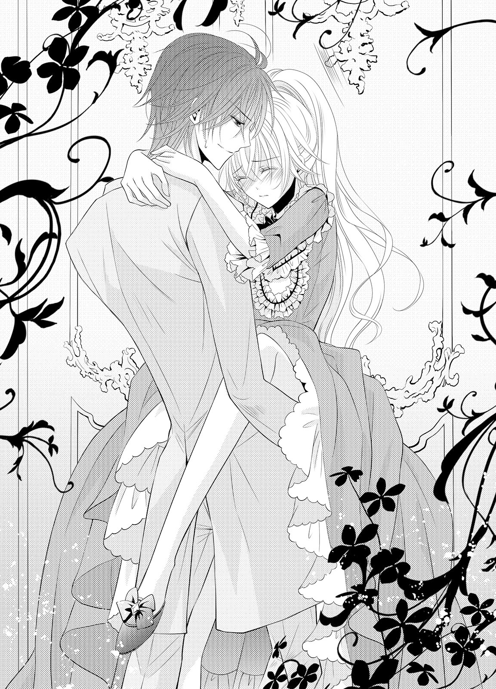
メリッサからの手紙を受け取って、まずは一度自邸に戻ることにする。その旨を手紙で伝えると、メリッサからはぜひそうして欲しいとの返信があった。メリッサの方でアイザックとの面会の場を作ってくれるとのことだった。
ギルバードにそのことをどう伝えればいいのかわからず、結局彼に正直に話せたのは一度自邸に戻るということだけだった。ギルバードは一瞬思案顔を見せたものの、送り出してくれた。
シェリルがスペンサー家に戻ると、アイザックはもう応接間で待っているとのことだった。
「予定の時間よりも随分早いわ......」
シェリルがそう言うと、メリッサが当然だと頷く。
「それだけブラドル侯爵はお姉さまのことを気に入っているということですわ。お姉さま、ブラドル侯爵のご好意、お受けになるんでしょう？」
それ以外の答えはないとでもいうように、メリッサがニコニコ笑いながら言ってくる。
確かに、アイザックの妻の席は、貴族令嬢として見ればとても魅力的なものだ。シェリルが彼の妻になれば、金銭的にはまったく困らない生活を一生過ごすことができるだろう。それに、アイザックの人となりも悪いものは聞いたことがない。
（でも、私が好きなのはギルバードなの）
「......お姉さま......？」
シェリルが即答しないことを、メリッサはひどく不思議がってくる。それから何かに気づいたようにはっと瞳を瞬かせると、メリッサはシェリルの顔を覗き込んできた。
「お姉さまは、まさかギルバードと何か......？」
「......メリッサ、その話はあとでちゃんとするわ」
今すぐここで話すのは、何となく躊躇われた。自分はこれから、アイザックの好意を弾きに行くのに。
「お姉さま！」
必死に答えを聞き出そうとするメリッサから強引に離れると、シェリルはアイザックの待つ応接間に向かう。
扉の前で一瞬足を止め、シェリルは一度深呼吸してからそれをノックした。
「はい」
アイザックの低い声が、応える。シェリルはそっと扉を開けた。
「やあ、シェリル嬢！」
シェリルの姿を認めると、アイザックが嬉しそうに笑ってくる。その砕けた笑顔にはシェリルに対しての好意が、はっきりと見て取れた。
ソファに座っていたアイザックが立ち上がろうとするのを慌てて止めて、シェリルは彼の真向かいに腰を下ろした。すぐに召使いがやってきて、新しい茶を入れ直してくれる。
「僕のために時間を作ってもらって、申し訳ない」
「いいえ。私の方こそ今は実家にいなくて......対応が遅れてしまって、申し訳ありませんでした」
「スペンサー家にいない？ どこかに旅行でも？」
まさかギルバードのもとにいるとも答えられず、シェリルは曖昧に笑ってごまかす。
「あの......それよりも、お話というのは何でしょう？」
急かしたわけではないが、シェリルの問いかけはアイザックを少し落胆させたようだ。がっかりした表情を見せたが、すぐに気を取り直してくれる。軽く咳払いをしたあと、アイザックは真っ直ぐにシェリルを見つめて言った。
「突然すぎるかもしれないけれど、あなたと正式にお付き合いをさせていただきたいんだ」
どきん......っ、とシェリルの鼓動が震える。
アイザックは照れくさそうな顔で、続けた。
「この間の茶会のときからずっと君のことが気になってしまって......もしよければ、僕と」
「......ごめんなさい」
シェリルは俯き加減で答える。アイザックが驚きに目を見張った。
「......君に恋人はいないと、メリッサ嬢からは聞いているけど......？」
そんな話を、メリッサはアイザックにしていたのか。いや、確かについこの前までの自分ならば、恋人はいないと答えられただろう。だが、今は違う。
「......ごめんなさい。あなたに会ったときには、想う人はいなかったの。でも今は......違うの」
ぎし......っとソファの軋む音が耳に届く。アイザックがシェリルの方に身を乗り出して、瞳を覗き込んできた。
「それは、この場をしのぎの嘘ではないよね？ 君は今、想う相手すらいないと、メリッサ嬢から聞いているけど」
どうしてそんなことまで、メリッサは話したのだろう。
（でも......仕方ないことかもしれないわ......）
自分はメリッサに、貴族令嬢として常に心配される存在だった。アイザックがその自分に興味を持ったのだと知り安心したのに違いない。
「本当は私......子供の頃からずっと好きだった人がいたんです。そのことに、気づけなかっただけで......」
アイザックの瞳が、鋭くなる。シェリルが発する一言一言を聞きのがさないように。
彼の想いを断るのだからシェリルは誠心誠意を込めて、アイザックをまっすぐに見返しながら続ける。
「ずっと、その人のことが好きだったんです。でも、その人とは大人になっても家族同然の付き合いをしていたから......今の関係が壊れてしまうのが怖かった。家族同然、というのは、私にとってはとても居心地がよかったから、その関係を崩したくなかったんだと......思います」
「......でも、その男が好きだと、気づいてしまった......。多分、その男に気づかされたんだよね？」
まるで見てきたかのように、アイザックは言う。シェリルが少し驚きながらも頷くと、彼は苦笑した。
「心から想っている相手に異性として見られないことは、男としては結構な苦行だ。抱きしめたくとも、手も出せない」
シェリルはギルバードのことを思い出してしまい、赤くなる。アイザックが小さく笑った。
「でもそれじゃ、出会うタイミング以前の問題だな。そんなに前から心の絆ができているんだったら、僕が今から誘惑したところでなびかないだろうね」
アイザックの手が、シェリルの頬に伸ばされる。何をされるのかとシェリルは反射的に身を震わせて、身体を強張らせた。
その様子を見て、アイザックはますます苦笑する。
「ほら、君は僕に触れられることを望んでいない」
「......あ......」
アイザックの手が離れると、ホッとした。そのことに、シェリルはハッとする。
アイザックが今度は少し淋しそうに笑った。
「身体は正直だね。誤魔化さないでくれて、かえって嬉しいけど」
「......ごめんなさい......」
アイザックはソファから立ち上がる。シェリルも立ち上がった。
「謝る必要はどこにもないよ、大丈夫。君は僕の好意に対して真摯に答えてくれた。それはとても好ましいことだよ。君が好きなのは、ギルバード・オールストン公爵子息？」
「どうして......」
どうしてその名を、アイザックは口にするのだろう。そんな素振りはあのパーティのとき、自分は見せていなかったのに。
シェリルの驚きの表情に、アイザックは今度は声を立てて笑った。
「知らぬは本人ばかり......なんだね。君はそうでなくても、オールストン公爵子息は君だけを見ていたんだ。あれはもう少し気持ちを隠さないと、勘のいい者はすぐに気づくと思うよ。その辺りはもう少し抑えるように、彼には言っておいた方がいいね」
ギルバードの気持ちに気づけなかったのは自分だけかと思い知らされ、シェリルは耳まで赤くなる。アイザックはそんなシェリルの様子に微笑したあと背を向け、応接間を出ていった。
「見送りはいらないよ。失礼する」
アイザックの気遣いに、シェリルも微笑みを返した。
アイザックの気配がなくなるのを待ってから、シェリルは立ち上がる。
アイザックの好意を無にしてしまったことを申し訳なく思いながらも、後悔はしていない。それどころか、彼との会話で自分の気持ちがますます深まった。
（私、ギルバードが好き）
シェリルは自分の気持ちに思わず微笑みを零し──だが直後に、はたと気づいてしまった。
（私......ギルバードに好きだってちゃんと伝えたかしら......？）
ギルバードからは、たくさん想いを与えられた。だがそれに対して自分は答えていないような気がする。
ちゃんとした告白をしていないことに気づいて、シェリルは慌てた。
（嫌だわ......！ 私、なんてひどいこと......）
これはオールストン家に戻ったら、ギルバードにすぐに伝えよう。そう心に決める。
シェリルは心の中で両手を拳に握り締めると、勢いよく部屋から出て行こうとする。
シェリルが辿り着く前に、扉がノックされた。おそらくは茶を片付けに来た召使いだろうと、シェリルは気軽に声をかける。
だが入ってきたのはギルバードで、シェリルは瞳を瞬かせた。
「え......どうして......？」
どうしてスペンサー家にギルバードがいるのかわからず、シェリルは茫然と問いかけてしまう。ギルバードは少し気まずそうな顔をしたあと、シェリルの頬に手を伸ばした。
優しく撫でられて、少し戸惑ってしまう。
「ど、どうしたの、ギルバード？」
「すまない、シェリル。君のことが心配で、あとをつけた。それで......立ち聞きをした」
「......っ！」
シェリルの頬がカッと赤くなる。
立ち聞きをされたことと先ほどの会話を聞かれた恥ずかしさで、どうしたらいいのかわからない。立ち聞きのことを怒りたいのだが、自分がギルバードのことを好きだとアイザックに公言したことを知られたことの方が恥ずかしい。
「すまない、シェリル」
ギルバードはひどく申し訳なさそうに謝罪したあと──喜びに満ちた笑顔を見せた。
「だが、ようやく君の気持ちがちゃんと聞けた。俺のことを、好きでいてくれたんだね。君の気持ちをきちんとした言葉では聞いてなかったから......とても、嬉しい」
「......ギルバード...」
恥ずかしさでたまらなくなって、シェリルは逃げ出そうとする。だがギルバードが扉の方に立っているため、そちらからは逃げられない。シェリルは身を隠す場所を探して──タッセルでまとめられたカーテンの中に身を隠した。
ギルバードが近づいてくる足音が近づく。シェリルはカーテンの生地を身体に巻きつけるようにして、身を隠した。
ギルバードは傍で立ち止まると、シェリルの身体をカーテンごとぎゅっと抱きしめてきた。
「シェリル、悪かった。立ち聞きしたことは、謝る。ただ、君の想いをちゃんと確かめたかっただけなんだ」
生地越しにギルバードの囁きが耳朶に触れて、シェリルは小さく震える。背中から抱きしめてられていて、顔は見えない分、言えるかもしれない。
「シェリル、教えて欲しい。君は俺のこと、どう思ってるんだ？」
シェリルはカーテンをぎゅっと握り締めながら、か細い声で答えた。
「......好き......」
生地に遮られてともすれば届かないほどの小さな声だったが、ギルバードは受け止めてくれる。そしてとても嬉しそうに笑いながら、シェリルの頭に頬ずりしてきた。
ギルバードはシェリルの身体をカーテンから剥がし、こちらに向かせてくちづける。
「改めて言わせて欲しい。シェリル、結婚してほしい。ずっと俺のそばにいれくれるかい？」
シェリルはギルバードへの想いのまま頷いた。
「はい......！」
ギルバードがますます嬉しそうに笑う。その笑顔が子供の頃の彼のものと重なり、シェリルも小さく声を立てて笑った。
──不安が、募っていく。メリッサは自室でじっとしていられなくなり、応接間へと向かった。
シェリルとアイザックの仲がどうなるのか、それによってギルバードに近づけるかどうかも決まる。
シェリルがオールストン家に滞在して、もう一週間だ。自分の知らないところで、二人はどんな絆を育むかわからない。
（──もし、お姉さまがギルバードのことを......）
家族の一員としか見ていなかったギルバードを、シェリルが一人の男性として意識する。そんなことになったら、ギルバードへの想いを自覚するのに時間はかからないはずだ。
オールストン家への滞在が長引けば長引くほど、ギルバードの男性としての魅力に気づき──シェリルは彼のことを好きになってしまうだろう。
（そうしたら、ギルバードと結ばれてしまう......）
ギルバードがシェリルのことを想っているだろうことは、彼の態度を見ていれば何となくわかった。
いつもギルバードはシェリルのことを気にしていた。自分には妹としての目しか向けてくれなくても、姉には一人の女性としての目を向けていた。年頃になったら余計に、その瞳は熱っぽく切なくなっていったように思えた。気づいていないのはシェリルくらいだろう。
シェリルよりも先に、ギルバードのことを好きになっていたのに。そのために努力もしてきたし、ギルバードにも色々と接触を持ってきた。それらが何も報われないなんて、ひどい。
何よりも、ギルバードに好かれるための努力を何もしなかった人に奪われてしまうなんて、悲しい。
（お姉さまは、ずるいわ......！）
どうにかして、ギルバードとシェリルを引き離さなければ。一番いいのは、シェリルがギルバード以外の男性に心変わりをしてくれればいいのだが。
ふと視線を落とすと、エントランスホールからアイザックが出て行く背中が見えた。召使いたちが彼を丁寧に見送っている。
その背中を見て、メリッサは小さく息を飲んだ。
そうだ。アイザックとシェリルが結ばれればいい。傷心のギルバードを自分が慰めたら、きっとシェリルではなく自分を見てくれる。
アイザックとシェリルを、二人きりで会わせたらどうだろう。アイザックはギルバードとは違う魅力のある男性だ。もう一度ゆっくりじっくり話し合ったら、シェリルの心も変わるかもしれない。
何よりもアイザックは、シェリルのことが好きなのだ。彼女の心を手に入れようと、頑張ってくれるだろう。
（あとは......そうだわ、あれ！）
メリッサは急ぎ足で自室に戻ると、隠し底のある宝石箱の奥から、小さな瓶を取り出した。
中には粉末状の白い粉が入っている。以前参加したパーティで女性陣と内緒話をしていたとき、ある侯爵夫人がくれたものだ。
（男の人と、仲良くなる薬......）
いわゆる惚れ薬のようなものだと言っていた。これをシェリルとアイザックに飲ませれば、二人は恋に落ちるのだろう。
眉唾ものではあるし、そんな魔法のようなことが本当に起こるのかはわからないが、何もしないよりはいい。要はシェリルが、ギルバード以外の男性に心を向ければいいだけなのだ。
メリッサは、小瓶をぎゅっと手の中に握りしめた。
アイザックとの面会を終えたあと、シェリルは家族に挨拶をしてからギルバードとともにオールストン家に戻った。
ギルバードがシェリルに対して特別な想いを抱いているだろうことを何となく感じ取れていたようで、母親は特に安心したような顔をしていた。対してメリッサの方は何だかひどく思い詰めた顔をしていて、シェリルは心配になってしまう。
スペンサー家を出る前に、メリッサには何かあったのかと尋ねてみた。メリッサの返答は大丈夫だの一点張りで、かえって心配が強まってしまう。
妹の様子が心配になって、馬車の中でも自然と黙りこんでしまう。そんなシェリルをギルバードが心配するのも当然だった。
「シェリル、何か気になることでもあったのか？」
ギルバードの問いかけに、シェリルは何でもないと首を振ろうとして──やめる。甘え過ぎはいけないが、何でもギルバードには話したかった。
シェリルはメリッサの様子が気になったことをギルバードに伝える。ギルバードの方も、シェリルと同じことを感じていたようだ。
「それは俺も気になっていた。特にメリッサは、何事にも思い詰めやすいからな......」
「さすがギルバードね。メリッサのことをよくわかってくれてる......」
そう言いながらも、シェリルの胸にちくりと小さな痛みが生まれた。なぜそんな痛みが生まれるのか原因がわからず、シェリルは気にしないことにする。
ギルバードが苦笑した。
「まあ、メリッサは俺にとっても可愛い妹のようなものだしな。......それよりもシェリル、こういうときは少しくらい嫉妬して欲しいんだが」
（あ......じゃあ今の胸の痛みは、メリッサに対する嫉妬......）
そうかと納得がいったものの、これではあまりにも心が狭すぎるのではないかとシェリルは顔をしかめる。ギルバードにはその表情の変化でシェリルが何を考えていたのかわかったらしい。どこかホッとしたように息をついた。
「よかった、少しは嫉妬してくれたか」
「......私、考えていることが全部、顔に出ているのかしら!?」
思わずギルバードの方にのめり込むようにして問いかけてしまうと、彼は楽しげに笑った。
「それだけシェリルのことを俺がよく見てるってことだ。心配するほどだだ漏れになってはいないさ」
ギルバードの答えに、シェリルは軽く息を詰めて、頬を赤くする。想いが通じ合ってからというもの、ギルバードのこうしたところには際限がないようだ。
（嬉しいような、困ってしまうような......）
「俺も、メリッサのことには注意しておこう」
「ありがとう、ギルバード」
ギルバードに話したおかげで、心が軽くなる。そのうちに、馬車はオールストン家に到着した。
御者が開けてくれた扉から降りると、ギルバードがシェリルの腕を取ってくる。どこかに連れて行こうとする仕草に、シェリルは小首を傾げた。
「ギルバード、どうしたの？」
「いや、ちょっと付き合ってくれないか？」
「え、ええ......構わないけど......」
シェリルは小さく頷く。
ギルバードは途中ですれ違った召使いに、公爵夫妻がサンルームにいることを確認する。二人に何か用があるのだろうか。
シェリルはおとなしくギルバードに従って、サンルームに向かう。公爵夫妻は明るい日差しが入り込む気持ちのいいそこで、ゆったりと茶の時間を楽しんでいた。
忙しいオールストン公爵も、この日は休日のようにゆっくりした時間を取っていたようだ。夫婦の穏やかな時間を邪魔してしまうようで、シェリルは少し申し訳なくなる。
ギルバードとシェリルの姿を認めると、二人はにこやかに笑って招き入れた。
「お帰りなさい、シェリル。用事は無事に済んだのかしら？」
「はい」
「じゃあこちらで一緒にお茶にしない？ 美味しいケーキもクッキーもあるわ」
夫人の言葉に、オールストン公爵も笑顔で頷く。二人に受け入れられていることを感じて、シェリルも笑顔になる。
だがギルバードは、少し緊張した面持ちだ。
「その前に、少し話があるんだ」
「あら......」
ギルバードの表情から軽い話ではないのだろうと、公爵夫妻も真面目な顔になる。ギルバードはシェリルの肩に腕を回して抱き寄せながら、真剣な表情で告げた。
「シェリルと、結婚することになりました」
「......っ!?」
突然の宣言に、公爵夫婦はもちろんのこと、シェリルも瞳が零れ落ちそうなほど大きく目を見開いてしまった。確かにプロポーズをされてそれに応えたが──心の準備もまだだったため茫然としてしまう。
突然すぎて唖然としていた公爵夫婦だったが、しばしのあと、揃って嬉しそうに笑った。
「まあ......まあまあまあ！ ギルバード、よかったわね！ 長年の想いがようやく叶ったのね！」
「シェリル以外は妻にしたくないと言われたときにはどうしたものかと思ったが......二人に想いが通じ合ったのなら、それが一番いい。......シェリルに無理強いはしてないな？」
「してませんよ、父上。ちゃんとシェリルにプロポーズして、許可をもらいました」
「嬉しいわ！ こんなに可愛い娘ができるのよ」
「母上、少し落ち着いてください。シェリルは逃げも隠れもしませんから」
「どちらにしても、すぐに婚礼の準備をしなければならんな。スペンサー伯爵にはまだ？」
「まずは父上と母上にご報告をと思いまして」
茫然としたままのシェリルを置いて、ギルバードたち親子の会話はどんどん進んでいく。シェリルがはっと我に返ったときには、スペンサー家にシェリルを妻として迎えたい旨を申し出に行くのをいつにするか、というところまで進んでいた。
シェリルは慌ててギルバードたちの会話の中に入る。このままでは、自分だけ置き去りにして色々とことが進んでしまいそうだ。
（でも......）
「シェリル、式は盛大にしよう。君のウェディング姿をみんなに見せびらかしたいからな」
ギルバードの様子は、とても嬉しそうだ。その笑顔を見ると、文句も消えてしまう。それどころか、もっとその笑顔を見たくなるから困ってしまう。
「シェリル？ したいことがあったら、なんでも言ってくれていい」
これだけはきっちり伝えなければと、シェリルはオールストン一家に向かって言った。
「普通の結婚式でいいです！」
正式な手順を踏んで結婚の申し出をする前に、シェリルは一度、実家に戻ることとなった。
公爵夫妻たちはシェリルが戻ってしまうことをひどく寂しがって、なかなか馬車に乗せてもらえなかったほどだ。ギルバードも名残り惜しそうに馬車に同行してスペンサー家まで送ってくれた。
自分の部屋を離れていたのは数日のことなのに、何だかひどく懐かしく感じる。シェリルは身軽なワンピースに着替えて落ち着くと、召使いに茶と新聞を言いつけた。今日はまだ、新聞に目を通していない。
ギルバードが新たに着手しようとしている事業の話をもっと詳しく知るためには、自分も知識を深めなければならない。女性が経済を知ろうとするなんて、と言われるかもしれないが、少なくともギルバードはシェリルがしようとすることを肯定してくれた。それどころか討論し合うことを楽しんでくれている。
召使いが持ってきてくれた新聞を、香しい茶を口にしながら読みふける。面白そうな記事はあとでスクラップしておくつもりで、ハサミも用意しておいた。
そんなとき、自室の扉がノックされた。誰だろうと声をかければ、それはメリッサだった。
「シェリルお姉さま、少しお話ししたいことがあるの......お邪魔しても、いい......？」
遠慮がちな問いかけは、何か悩みがあるように聞こえる。シェリルは嫌がる気持ちなど少しも抱かずに、妹を招き入れた。
「どうぞ、メリッサ。そこに座って」
向かいの椅子を指し示すと、メリッサは素直に座る。テーブルの上に広げられた新聞を見ると、メリッサは驚きに軽く目を見張った。
「お姉さま......新聞をお読みになっていたの？」
「え、ええ......」
メリッサにまた注意されてしまうかと、シェリルは苦笑する。だがメリッサは不快げに眉根を寄せたものの、特に何か言ってくることはなかった。
代わりに、小さく問いかける。
「ギルバードは、何も言わないの？」
叱責がないことに少し驚きながら、シェリルは頷いた。
「え、ええ。好きにしてくれていいって言ってくれるわ」
「そう......」
メリッサは何か考えこむように口を噤む。シェリルはますます心配になり、問いかける。
「メリッサ、本当にどうしたの？」
「お姉さま......ギルバードのこと、どう思っているの？」
「え......っ」
急にそんなことを聞かれて、シェリルは戸惑ってしまう。
メリッサはシェリルをじっと見つめ返していた。何やらひどく真剣で、その様子に圧されてしまいそうになる。
だがこれは、メリッサにギルバードへの想いを話すいいきっかけになるのかもしれない。
「今までギルバードのことは、家族の一員としてしか見ていなかったけど......それは自分を誤魔化していただけだって気づいたわ。今の関係を壊したくなくて、自分の気持ちが変わったことに気づかないふりをしてしまったの」
メリッサは、黙って聞いている。だがスカートの膝の辺りをぎゅっと強く握る両手は、小さく震えていた。
「私......ギルバードが好きだって、気づいたわ」
「そう......」
メリッサは掠れた声で頷くと、スカートのポケットから一通の手紙を取り出した。そしてそれを、シェリルに差し出す。
「ギルバードからですわ。お姉さまにって使者が届けに来たの」
さっきまで一緒にいたのになぜわざわざ手紙を？
とりあえず、シェリルは手紙を受け取る。中身を見ると、二人きりで今夜会いたい旨がしたためられていた。
これはギルバードが書いた文字かと不審に思う気持ちもちらりと胸をよぎったが、記された場所が幼い頃にオールストン家と家族ぐるみでよく訪れた別荘でもあることから、彼が出したものなのだろうと思う。幼い頃の思い出も胸をよぎったからかもしれない。
「馬車も用意しておいたわ」
メリッサの気遣いに、シェリルは便箋を封筒に戻しながら礼を言う。
ちらりと時計を見やれば午後を過ぎていて、もしかしたら一晩を別荘で過ごすことになってしまうかもしれない。手紙にはシェリルと二人きりになりたいからとも書かれていたから、余計だ。
（や、やだ......こんなことを考えるなんて、はしたないわ）
こんなふうに甘い期待を抱いてしまうのも、ギルバードに心も身体も愛されるようになったからかもしれない。
「さあ、お姉さま、ギルバードを待たせてはいけませんわ。きっと大事なお話でもあるんですわ。すぐにお出かけにならないと」
なんだか急かされているような気がするが、シェリルは頷く。
「お母さまたちには私からお出かけの旨を伝えておきますわ。さあ、早く」
「あ、ありがとう、メリッサ。じゃあ、お願いするわね」
メリッサの気遣いをありがたく思いながらも、シェリルは追い立てられるように馬車に乗せられた。
何だかもやもやする気持ちが残らなくもなかったが、それがどうしてなのかシェリルにはうまく説明できない。走る馬車の中で、ただなんとなく嫌な予感を覚える。流れていく景色を小さな窓から見つめながら、シェリルは思わず胸元を掌で押さえていた。
馬車は別荘に着くと明日迎えにくるからと言って、再びスペンサー家に戻ってしまった。心細い気持ちになったものの、別荘にはすでに灯りがついていて、ギルバードがもうやってきていることを教えている。シェリルはホッと息をつくと、別荘の中に向かった。
ここはオールストン家が所有している土地で広く、別荘地とはいえ、隣接する建物は見えない。
シェリルは別荘の玄関ポーチに立ち、ドアノッカーを鳴らす。数度打ちつけると、こちらに走り寄ってくる足音が聞こえた。
内開きのそれが勢いよく開いて、シェリルは思わず小さく笑ってしまう。自分が来ることはもうわかっているのだから、そんなに慌てなくてもいいのに。
そう思いながら姿を現した青年を認めて、シェリルは大きく目を見開いた。......ギルバードではない。
「ブラドル侯爵......？」
そこにいるのはアイザックだった。彼はひどく心配そうな顔でシェリルを見返している。
「大丈夫!? いったい何があったんだい!?」
唐突に問われても、シェリルに答えはない。戸惑ったままで、ひとまず問いかける。
「あの......どうして侯爵がここに......？」
アイザックが訝しげに眉根を寄せた。
「何を言っているんだい？ 僕に相談したいことがあるからと、君が手紙で呼び出したんだろう？ 別荘の鍵も開いていたし茶の用意もされていたのに、君がいなくて焦ったよ」
「わ、私はギルバードに呼び出されて......」
互いの話が噛み合わないことに否応なく気づかされ、シェリルとアイザックは揃って口を噤む。数瞬の沈黙のあとアイザックが身を引き、シェリルを別荘内に促した。
「とにかく、ここで話していても仕方がない。どうしてここに来ることになったのか、報告し合おう」
「そ、そうですね」
今はそれが一番いい方法に思える。シェリルは頷いて、別荘の中に入った。
「これは......君の妹に謀られた、というようにしか思えないんだけど......」
アイザックが、なんとも言いようのない複雑な表情で呟いた。シェリルも同じ答えにしか辿り着けなかったため、妹のとんでもない行動に身を縮めるしかない。
（メリッサったら、侯爵まで巻き込むなんて......!! いったい何を考えてるの!?）
──アイザックはシェリルから相談に乗って欲しいとの手紙を受け取り、指定された時間と場所の通りに来たという。届いた手紙を持っていたため、実物を目にしたが、まったく身に覚えがないものだった。そもそもこのレターセットをシェリルは持っていない。
シェリルの方はギルバードに呼び出されたから、ここにいる。だが実際にいたのはアイザックで、メリッサが謀って二人をこの別荘につれてくるように仕掛けたのだろう。
「申し訳ありません、侯爵。メリッサがとんでもないご迷惑を......」
「いや、僕は別に大丈夫だよ。正直な気持ちを言えば、また君に会えて嬉しい」
アイザックの飾らない言葉に、鼓動が跳ねる。
「僕は馬で来たんだ。お茶でも飲んで一休みしたら、スペンサー家まで送るよ」
「いいんですか？ 甘えてしまって......」
「誰もいない別荘で、君と二人きりでいたなんてことがオールストン公爵子息殿に知られたら、ただじゃすまないだろうからね」
アイザックが冗談めかして言う。
「そんなこと、ギルバードはしません」
「いや、そう思っているのは君だけだと思うよ......。あのパーティで君に近付こうとした者は、彼の視線で次々と威嚇されていたんだから」
「え......？」
そんなこと、まったく気づかなかった。アイザックはテーブルの上で頬杖をつき、苦笑する。
「あれは、視線だけで射殺せそうなほどだったな。あれじゃ君の美しさに興味を持ったとしても、声をかけることもできないよ。彼の持つ爵位と権力を考えたら、逆らえる者なんてごくわずかしかいないんだからね」
シェリルは信じられない思いで言う。
「そんなこと、まったく気づきませんでした......。だ、だって私に声をかけてくださる殿方なんて、いらっしゃらなかったから......」
アイザックの苦笑が、深くなった。
「かけたくともあんなふうに牽制されてしまったら、できないよ。他のパーティでも、そうだったんじゃないかい？」
これまでに参加したパーティは、さほど多くはない。だが思い返してみると確かに、必ずギルバードも参加して声をかけてくれていた。
「僕はその点からすると、君から接触してくれた分、幸運だったんだな」
まさかギルバードが、そんな牽制をかけていたなんて。
茫然としていた気持ちから我に返り、シェリルは茶の支度を続ける。その仕草を見守りながら、アイザックは温かい声で言った。
「それだけ、彼が君に夢中だってことだ」
シェリルは頬を赤く染めて──小さく頷く。
茶を二つのカップに注いで、片方をアイザックに渡す。彼は礼を言って受け取ると、早速口にした。
「美味しいよ」
「ありがとうございます」
シェリルも椅子に座って、自分の分の茶を口にする。
想像していなかったことが次々と起きて、喉が渇いていたようだ。茶を一口飲むと急激に潤いが欲しくなり、シェリルはコクコクと飲み続ける。アイザックの方はシェリルを退屈させないようにするためか色々と話かけてくれて、一口飲んだらカップはソーサーに戻されてしまっていた。
意外に早くカップは空になる。シェリルはほうっと息をついて、もう一杯をいれようとした。
「侯爵、新しいお茶をいれましょうか」
「まだ平気だよ。ありがとう」
アイザックが、新たな一口を口にする。味わうように口中に含んで──ふと、何かに気づいたかのように軽く目を見張った。
「シェリル嬢......このお茶、何か変な感じがしないかい？」
「そう......ですか？ 普通に美味しいですし、そんなふうには感じな......」
答えるシェリルの声が、途切れる。直後、身体の奥から何か言いようのないザワザワとした熱が生まれてきた。
いきなりどうしたのだろう、と思った瞬間、その熱は急激に高まってきた。
「な、に......っ？」
シェリルは思わず自分の身体を抱きしめて、蹲ってしまう。
あっという間に鼓動がどくどくと脈打ち、息も荒くなってきた。風邪に似たような症状だが、なぜ急に発症したのかわからない。シェリルは立ち上がることもできないままだ。
「シェリル嬢、大丈夫かい!?」
「だ、大丈夫です......でも、どうして急に......」
「とりあえず、椅子に座ろう」
アイザックが身体を支えて、椅子に座らせようとしてくれる。だが彼の手が触れた途端、シェリルの身体はビクンッと大きく震えてしまった。
「あ......あ」
痺れるような心地よさが生まれて、シェリルは大きく目を見開いた。
この感覚は、知っている。ギルバードが自分を愛してくれるときの、あの感覚だ。
（どうして、急に......!?）
「シェリル嬢!?」
アイザックの声が、ますます心配げなものになった。身体を抱き起こしてくれるのは嬉しいが、触れられると肌がざわついて気持ちよくなるから嫌だ。
快感を、無理矢理引き出されているような気がする。それに流されてしまいそうで怖い。これはいったい何なのか。
熱はシェリルの頬を赤く染めていく。薄く開いた唇も、同じ熱を宿した。そこから漏れる吐息には、時折快楽を耐える喘ぎも混じる。瞳も潤んできて、ひどく艶っぽい顔になった。
アイザックが、息を飲む。
「これ......もしかして、媚薬......？」
シェリルを送り届けたあと、一人馬車に揺られていたギルバードは足元に落ちていた花柄のハンカチを見つけた。おそらくシェリルが落としたものだろう。ハンカチを拾い上げたギルバードは御者にスペンサー家の屋敷に戻るよう言った。
再び訪れたスペンサー家は何かざわついている様子だった。
ギルバードは眉根を軽く寄せたあと、出迎えてくれた召使いに問いかけた。
「シェリルの忘れものを届けに来たんだが......何かあったのか？」
「そ、それは......っ」
召使いは動揺を隠せない。明らかに返答に困っていて、視線が泳いでいる。
直感でこの騒ぎにシェリルに関わっているのだと、ギルバードは思った。
「シェリルに何かあったのか？」
すぐにでも怒鳴りつけるように詰問したい気持ちを抑えて、ギルバードはできうる限り穏やかな口調で問いかけた。
召使いの身体が、ビクリと大きく震えた。それだけで、ギルバードには明確な答えだった。
ギルバードの頬から、笑みが滑り落ちる。
「何があったのか、教えてくれるね」
身震いしてしまうほどの低い声に、召使いは真っ青になる。ギルバードには教えたくないようだったが、それを容認するつもりはまったくない。
ギルバードの冷徹な空気と表情に耐えきれなくなった召使いは、ついに観念して状況を説明した。
「じ、実はシェリルお嬢さまがどこにもいらっしゃらなくて......」
「シェリルが、いない？」
どくん、とギルバードの鼓動が大きく震えた。
（まさか、誘拐......？）
シェリルの立場を考えたら、あり得ない理由ではない。身体が一気に冷たくなるのを感じる。
「い、いえ、誘拐ではないです！」
「ならばどうしてシェリルがいないんだ？」
怒鳴りつける寸前の声で、ギルバードは返す。召使いは震え上がりながら答えた。
「メ、メリッサお嬢さまが、シェリルお嬢さまが誰にも秘密でお館を抜け出そうとしたのを見たそうです。どこに行くのかと問い詰めたら、シェリルお嬢さまは......その、ブラドル侯爵に会いに行くと言っていたと......」
一瞬何を言われているのかわからず、ギルバードは絶句した。召使いのこの話だけを聞くのならば、シェリルは自分と結ばれていながら、アイザックとも関係を持つふしだらな令嬢になる。
（シェリルが？）
なんだか笑い話にしかならない。
あのシェリルが、男を手玉に取るようなことをするわけがない。恋愛感情に疎く、自分との繋がりを続けるためには家族でいた方がいいと考えるほどなのだ。そのシェリルが、二人の男を騙して誑かすことができるわけがなかった。
「そ、それで今、メリッサお嬢さまが奥さまにお話しされていて......」
「伯爵夫人はどちらに？」
ギルバードの質問に、召使いは二人がいるところへ案内する。
案内された部屋にノックをしてから入ると、ソファセットではスペンサー伯爵夫人とメリッサが、ひどく神妙な顔で座していた。伯爵夫人は真っ青になっていて、肘かけにもたれかかっている。
だがギルバードの姿を認めると、慌てて立ち上がろうとした。
「ギルバード殿、これはきっと何かの間違いよ。あの子がこんなふしだらなこと......」
口にしているうちにことの大きさを改めて実感して、夫人は倒れるようにソファに座った。ギルバードは安心させるように微笑みかける。
「大丈夫です、伯爵夫人。とりあえず今は、少しお休みになられた方がいいかと思います」
「でも......」
「大丈夫です。俺がシェリルを見つけますから」
ギルバードの言葉で、夫人も少しほっとしたようだ。ギルバードが召使いを呼んで自室に促すと、素直に従ってくれる。
メリッサはその間、特に何かを言うわけでもなく、ギルバードと母親のやり取りを見守っていた。夫人がいなくなれば、この部屋にはギルバードとメリッサの二人だけになる。
ぱたん、と扉を閉めたあと、ギルバードはメリッサに向き直った。メリッサは強張った表情で、俯いている。
ギルバードが近づくと、ようやく顔を上げた。
「......シェリルお姉さまは本当は、ブラドル侯爵の方がよかったんだわ。ギルバードのことは、ずっと前から家族みたいにしか見れないって言ってたもの」
「そうだな。俺のことを仲のいい兄みたいに思ってくれていたみたいだった」
ギルバードの言葉を同意と受け取ったのか、途端にメリッサの声に力がこもる。
「そうでしょう!? お姉さまったらご自分のことは棚に上げて、あなたのことをそんなふうに見ていたのよ。ブラドル侯爵のところに行ったのだって、結局ギルバードのことを家族以上には見れなかったってことだわ。ギルバード、お姉さまのことはもういい加減に諦めた方がいいと思うの」
「メリッサ、俺は君のことを本当の妹のように可愛く思っている」
メリッサの顔が、再び強張った。
いつものギルバードならばここで、優しくメリッサを諭しただろう。いつもそういうふうにしてきた。だが今は、違う。たとえメリッサを傷つけることになっても、誤魔化せない気持ちがギルバードにはある。
「俺は君が、本当の妹になってくれるときを楽しみにしていた。俺は君のことを、それ以上には見れない」
口調はいつものギルバードのものだったが、声はどんどん冷たくなっていく。終いには、メリッサが初めて耳にする冷酷さが声と瞳に漂った。
「メリッサ、本当のことを話すんだ。シェリルのことはよくわかっている。こんなことを彼女がするわけがない」
メリッサが、弾かれるように叫んだ。
「そんな確証なんて、どこにもないでしょう!?」
「俺がどれだけ昔からシェリルのことを見てきたと思う？ 俺はシェリルにしか興味はない」
間違えようのない痛烈な拒絶だ。メリッサはぽろぽろと涙を零しながら項垂れる。
「私だってギルバードのことが、ずっと前から好きだったのよ......」
「ありがとう。でも俺は、シェリルしか欲しくない」
涙を見せられても、それがシェリルのものでなければギルバードの心には響かない。ギルバードはメリッサを見据えて、最後の通告をした。
「メリッサ、本当のことを話すんだ」
「あ......は、あ......」
身体の疼きと熱は、シェリルを無視してどんどん高まっていく。アイザックはシェリルをベッドに運ぼうと、ふわりと抱き上げてくれた。
媚薬のせいか、じっと椅子に座っていることの方が難しい。身悶えを止められない。すでにドロワーズの中心がしっとりと濡れていて、生地の繋ぎ目に割れ目が擦れるだけでもたまらなく感じてしまうのだ。
アイザックは紳士的にシェリルに触れてくれている。だがシェリルの身体は無意識のうちに彼の胸に身を擦りつけて、触って欲しいと訴えていた。
（いや......私に触れて欲しいのは、ギルバードなのに......）
シェリルの気持ちを無視して、身体は異性を求めている。それがたまらなく嫌で何とかしたいのに、身体は言うことを聞いてくれない。
（ギルバード。ギルバード......っ）
薬に呑み込まれないよう、シェリルは心の中で必死にギルバードの名を呼び続ける。
アイザックが二階の一室にシェリルを運び、ベッドに横たえた。シーツに頬が擦れただけで、喘いでしまう。
アイザックが気まずそうに顔を背けた。
「水を持ってくるよ。少し待ってて」
水。確かに欲しい。口にすれば、少しは体内の熱も下がるかもしれない。だがそれよりも、身体中が息苦しさに包まれていた。
「侯爵......ドレスを、脱がせて......」
「え......!?」
アイザックが、ぎょっとこちらを見返す。そのときにはもう、シェリルは前ボタンのデザインであるそこを、もどかしげに外し始めていた。
とにかく肌に服がまとわりついているだけで、息苦しい。だから脱ぐ。シェリルにとってそれは当たり前だった。
「待、待って、シェリル嬢！ ここで脱いだら駄目だ！」
どうして止められるのかわからず、シェリルは変わらずにもたつく指でワンピースを脱ぐ。コルセットの締めつけが一番辛いため、シェリルはアイザックに背を向けて、背中に流れ落ちる髪をかき上げながら頼んだ。
「侯爵......緩め、て......」
アイザックが、小さく息を飲む。数瞬のためらいのあと、意を決したようにシェリルのコルセットに手を伸ばした。
アイザックの指が身体に触れて、ビクンと震える。触れられると、ギルバードの愛撫が思い出される。それを、感じたい。
「もっと......触って......」
（嫌。触って欲しいのは、ギルバードなの。なのに......！）
アイザックが、ごくりと息を呑む。導かれるようにシェリルへと手を伸ばしかけて──ハッとその手を拳に握りしめた。
「駄目だ、シェリル嬢。僕も少し媚薬を飲んでる。刺激......しないでくれ」
「でも......苦しい、の。コルセットを......外し、て......」
荒い呼吸を繰り返しながら、嘆願する。アイザックはしばし視線をさ迷わせたあと、手を伸ばしてきた。
「コルセットを外したら、部屋を出て行くから！」
「あ......ふ、う......」
アイザックの手が、コルセットを外してくれる。開放感を感じて、シェリルは熱い吐息を零す。だが、息苦しさも火照りも、まったく治らない。それどころかますます強くなっている。
耐えきれなくなり、すぐにでもアイザックに身を捧げてしまいそうだ。アイザックは乱れたシェリルの姿から目が離せないらしく、じっとこちらを見つめている。アイザックはそこから動かなかったが、身体の脇に降ろされた両手はきつく拳に握り締められていた。
見つめ返すシェリルの瞳から、ぽろりと涙が溢れる。
「......私は、ギルバード以外の人に、抱かれたく、ないの......なのに、身体が熱くて......たまらなくて......」
アイザックが、ハッと目を見張った。
「君は、そんなに彼のことを......」
「──シェリル!!」
直後、シェリルとアイザックの耳にあまりにも予想外の声が届いた。必死の声と同時に扉が蹴り破られ、シェリルたちの前にギルバードが姿を見せる。
媚薬に酔わされていても、ひどく驚いてしまう。アイザックもひどく驚いて絶句した。
現れたギルバードは息を乱し、うっすらと額に汗を浮かべていた。どれほど必死だったのか、その様子で容易くわかる。
ギルバードはシェリルたちを見て──表情を強張らせた。
「......っ」
ギルバードは無言のまま拳を振り上げる。それが誰に向かってのものなのかシェリルが気づくより早く、彼はアイザックの胸倉を掴んで引き寄せ、頰に拳を撃ち込んだ。
バキッとかなりの痛みを与える音と一緒に、アイザックの身体が壁際まで殴り飛ばされる。ギルバードはそれだけではおさまらず、さらにアイザックに走り寄ってもう一度胸倉を掴み、壁に押しつけながら容赦ない力で締め上げてきた。
首を締められることになり、アイザックが苦しげに顔をしかめる。
「......貴様......シェリルに何をしてるんだ......？」
抑えた声音が、かえってギルバードの怒りを教える。ギルバードの表情は、シェリルがぞくりと背筋を震わせるほどに怖いものだった。
こんなギルバードは初めて見る。
「......待っ、て、くれ......話、を......」
アイザックが息も絶え絶えに伝えようとする。だがギルバードはまったく聞く耳を持たず、むしろさらに煽られてしまったかのようにますます手に力を込めてきた。
シェリルは媚薬に悶えそうになりながらも慌ててベッドを降り、足元をふらつかせながらギルバードに走り寄る。そして、その広い背中に抱きついた。
「待って、ギルバード！ 侯爵は悪くないわ......！」
「......この状況でそんなことを言われて、俺が信じるとでも？ だとしたらシェリル、君は随分と俺を買いかぶってる」
肩越しにちらりと視線を投げられるが、その瞳の氷のような冷たさに、シェリルはますます身を震わせた。媚薬のせいでギルバードの身体の感触をひどく強く感じてしまいながらも、シェリルは抱きしめる腕に力を込める。
「でも、それが本当のことなの......！ 私、今......び、やく......が、効いていて......っ」
状況を説明するシェリルの声は、また荒く途切れがちになる。ギルバードがシェリルのその様子にはっとして、こちらに向き直ってくれた。
「シェリル！」
抱き支えてくれるギルバードの胸に持たれかかりながらも、シェリルは小さく笑った。そして改めて、ギルバードにぎゅっと抱きつく。
今の状況では、ギルバードから少しでも離れたらまた媚薬に流されてしまいそうだ。ギルバード以外には触れられたくない。
「......シェリル......？」
「お願い、ギルバード。私を離さないでいて」
自分からこんなことを頼むのは、ひどく恥ずかしい。だが今はそうしないと、薬に負けてしまいそうになる。
シェリルの必死さにギルバードは何も言わず、強く抱きしめてくれた。その温もりにほっとしながらも、シュミーズとドロワーズという薄い下着越しに彼の身体を感じて、疼きと快楽の熱は高まっていく。
唇の端を歯で切ってしまったために血を滲ませたアイザックが、大きく息をついた。
「君が来てくれて、助かった。僕も少しだけど、媚薬を口にしてしまっていたし......ほんと、危なかったよ......」
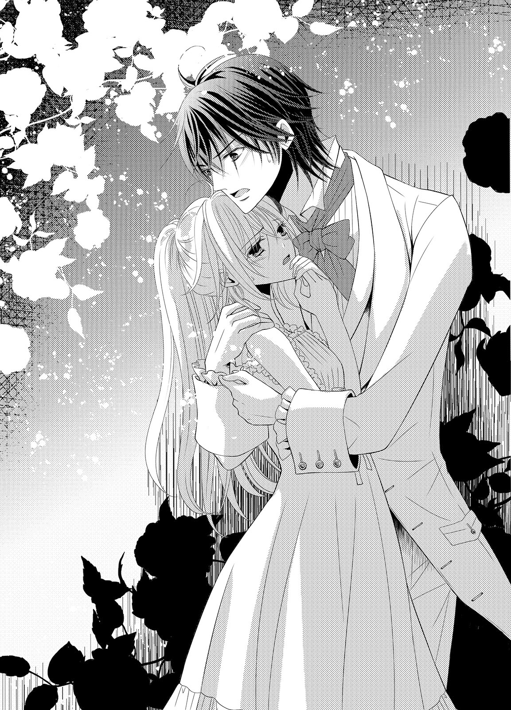
心底ホッとしたように、アイザックは言う。少し落ち着いてくれたらしいギルバードが、シェリルを抱きしめたまま、アイザックに問いかけた。
「どういうことなんだ」
「用意されていた茶に、媚薬が仕込まれていたみたいだ。僕たちはそれを知らずに飲んでしまったんだよ」
ギルバードが深くため息をつく。
「それも、メリッサがしたのか......」
アイザックが壁に持たれながらも立ち上がり、体勢を立て直す。殴られたことで頭がすっきりしたのか、アイザックの様子は通常のものだった。
「これもやっぱり、メリッサ嬢の仕業なんだね」
「......シェリルがアイザック殿に心変わりするように、二人きりの場を設けたらしい。惚れ薬を仕込んだと言っていたが、それはおまじない程度としか認識してなかったな」
もしこの状態をメリッサが見たら、自分が仕出かしたことの大きさにひどく驚くだろう。メリッサの仕掛けたことは彼女の予想を大きく上回ってしまった。それは、これまでのメリッサのことを考えれば容易くわかる。
「あとでしっかり叱りつけておくべきだね。義兄としての役目だと思うよ」
言ってアイザックはギルバードに乱された襟元を正し、ハンカチで口元を拭う。まだ傷口が腫れていないため、一見しただけではいつも通りに見えるだろう。
「僕はこれで失礼するよ。シェリル嬢のことは君に任せるのが一番いいだろうし」
こちらに背を向けて立ち去ろうとするアイザックを、さすがにギルバードも拍子抜けしたように見返した。アイザックは何かを思い出したかのように一度足を止めて、ギルバードを肩越しに見返す。
「そうそう、君に言っておいた方がいいかなと思ったんだけど......」
「なんだ......？」
「媚薬に酔わされていても、シェリル嬢は君じゃないと駄目だそうだよ」
アイザックは苦笑とともにそう言い残すと、立ち去っていく。ギルバードはシェリルを見下ろして、問いかけた。
「俺でないと、駄目なのか？」
自分がどれだけギルバードを好きなのかを知られてしまったようで、恥ずかしくなる。だが媚薬は、シェリルの羞恥心を溶かしてくれていた。
「当たり前、よ......私に触れるのは、ギルバードじゃなきゃ、嫌......」
「シェリル......！」
ギルバードがとても嬉しそうに笑って、くちづけてきた。
唇が触れた瞬間にもう、膝が崩れてしまいそうなほどの心地よさを感じる。ギルバードが唇を押し割り舌を差し入れてくると、シェリルは自分から舌を絡めた。
唾液でぬるつく舌を絡めたり互いに舐め合わせたりしたらとても気持ちがいいことを、もう知っている。恥じらいがその快楽に身を委ねることを躊躇わせていたが、今はその枷も媚薬が溶かしてくれていた。
「ん......んん......っ」
ギルバードはシェリルの積極さに少し驚いたように目を見張ったが、すぐにまた深く激しくくちづけてくる。
唾液が熱く混じり合い、シェリルはそれをこくりと飲み下した。飲み込みきれず口端から零してしまう。
「ふ、あ......ん、んぁ......」
ギルバードはくちづけながら、細く軽い身体を横抱きにした。シェリルをベッドに運んで、身を重ねてくる。
ギルバードのぬくもりと重みが全身に感じられて、気持ちいい。それをもっと感じたくて、シェリルはギルバードの首に腕を回して抱きついた。
シーツから身体が少し浮いて、ギルバードに胸の膨らみを押しつけてしまう。乳首はもうくちづけだけでしこっていて、生地越しにギルバードの身体を感じると、さらに気持ちよくなってしまった。
シェリルは疼いて震える二つの粒を、ギルバードの胸に擦りつける。確かに気持ちいいのだが、生地越しのためかもどかしい。
（私......なんてことをして......）
こんなはしたないことはやめなければと頭の隅でちらりと思ったものの、身体の動きは止まらない。ギルバードが唇を離して、小さく笑った。
「気持ちよさそうな顔をして......たまらなく可愛いな。胸を俺に押しつけて......ああ、違うのか。乳首が擦れるのがいいんだな？」
ギルバードの手が生地越しに指の腹で乳首を擦ってくる。それがこれまで以上に気持ちよくて、すぐにはしたなく甘い声を上げてしまう。
シェリルは自分の今の淫乱さに、泣きそうになりながら言った。
「ギルバード......どうしよう。私......こんな、はしたないのに......も、もっと、して欲しくて......」
ギルバードが、小さく笑う。
「媚薬のせいだから、仕方ない。いつものシェリルもとても可愛いが、こうして欲望のままに俺を求めてくれるシェリルも......いい」
きゅっ、と、擦られていた乳首が指で摘まれる。甘い痛みの混じった快感に、シェリルはまた小さく喘いでしまった。
「き、嫌いに......ならない......？」
「もちろんだ。だから、俺にどうして欲しいのか、言ってごらん」
はしたない願いを、今は素直に口にできる。早くしないと、気がおかしくなりそうだから余計だ。
「抱、抱いて......欲しい、の......」
「ああ、わかった」
ギルバードが、シェリルの身体を抱きしめる。包む込まれるように抱きしめてもらえたが、そんな優しい抱擁では満たされない。もっと深く、激しく、熱く。
「これでいいか？」
ギルバードが耳元で囁く。低い声はシェリルに耳中に滑り込んで、ゾクゾクさせた。
シェリルは涙目でギルバードを見返す。
「足......りない、の......。もっと、ギルバードが欲しいの......っ」
「シェリル......っ」
ギルバードが、クラヴァットをむしり取る。上着も剥ぎ取るように服を脱いでいくギルバードは、いつもの優しい印象からは遠い。だがそのどこか野生的な仕草に、ドキドキする。
ギルバードが、燃えるような情欲を宿した瞳でシェリルを見つめながら言った。
「悪いが......今日は、手加減、できない」
こくりと息を飲んでから、シェリルは恥ずかしげに──けれど、しっかりと頷いた。
「あ......ん、んん......あっ！」
互いに一糸纏わぬ姿でベッドに横たわり、ギルバードの愛撫を受ける。肌に触れられただけでゾクゾクするほど気持ちよく、シェリルは甘い喘ぎを抑えられない。ギルバードはシェリルの素直な喘ぎに欲望を煽られて、さまざまな愛撫にますます熱を込めてくる。
すでにギルバードの熱い楔を打ち込まれ、激しく貫かれて互いに目も眩むほどの絶頂を味わった。だが媚薬の効果が残り続けているシェリルは、満足できない。ギルバードも今は求める気持ちに遠慮がいらないため、シェリル以上に求めてくる。
「ん......んぁ、あ......っ」
ギルバードの舌が蜜壺を舐め回し、骨張った指がじっとりと濡れたそこを弄っている。ギルバードはシェリルの足の間に頭を沈めたまま、執拗に蜜壺を味わっていた。
指で包皮を剥いて剥き出しにした小さな花芽を、尖った舌でくりくりと舐め回す。小さな絶頂が何度もやってきて、シェリルはビクビクと小刻みに身を震わせた。
「あ......また、またきちゃ、う......！」 「何度でも達せばいい。君の蜜はとても甘くてやみつきになる」
「駄目......あ、あっ、きちゃ......きちゃ、う......っ！」
シェリルは手を伸ばし、ギルバードの頭を押し返す。だが快楽に満たされた身体では、抵抗などあってなきがごとしだ。
震える内腿をギルバードの両手が押さえつけ、再びの絶頂からは逃げられない。
「は、あぁ......っ！」
ギルバードの口に蜜口を押しつけるようにして、シェリルは達する。迸るように溢れた蜜を、ギルバードはいやらしく音を立てて舐め取った。
ぴちゃ......ぴちゃ......っ、と、淫らな水音を耳にしただけでも、感じてしまう。
「ふぁ......あ......っ」
達してひくつく花弁を丁寧にねっとりと舐められ、シェリルは震えた。ギルバードが蜜壷から少し顔を離し、小さく笑う。
「ここ......またひくついてる。可愛いな」
チュッと吸いついたあと、蜜壺の中に舌が入り込んできた。中をぐにぐにと激しく舐め回され、吸われて、シェリルは泣き濡れた喘ぎを上げる。
「あ......あっ、あっ、もう......駄目......舐めるの、駄目......」
欲しい愛撫はそれではない。ギルバードはじゅるっ、と蜜を強く吸ってから顔を上げた。
「舐めるのは、駄目か？ だがシェリルのここはひくついて、ぐしょぐしょだ。このままでいいのか？」
「あ......嫌......このままは、駄目......」
この蕩けきった蜜壺を放置されたら、気が狂ってしまいそうだ。シェリルは潤んだ瞳をギルバードに向ける。
「あ......欲しい、の......」
ギルバードの笑みが深くなった。
「何を？」
恥ずかしい。そんなことを口にするのは、躊躇う。だが言わなければ、この疼きはおさめてもらえない。
シェリルは唇をひと舐めして、言う。......自覚はまったくなかったが、それはひどく扇情的な仕草だった。
ギルバードが小さく息を呑んだことに、シェリルは気づいていない。
「ギルバード、が......欲しい、の......」
「どこに？」
ギルバードの意地悪は続く。ギルバードは自分の肉棒を手に取った。
「言うんだ、シェリル。俺のこれを、どこに欲しいんだ？」
それはもう固く張り詰めてギルバードの腹につきそうなほどに昂り、先走りでてらりと濡れ光っている。ギルバードが根元を軽く扱くと、質量は更に増した。
シェリルは吸い寄せられるように、ギルバードの猛りを凝視する。
（あれが、私の中に......）
シェリルをよがらせ、喘がせ、信じられないほど気持ちよくさせるもの。
「シェリル」
促されて、シェリルはギルバードの雄に魅入られたまま、両手を伸ばして自分の蜜壺に触れた。ぬるぬると蜜で濡れたそこは、少し触れただけでもシェリルの指を飲み込みそうだった。
「ここ、に......」
「そうか、ここだな」
ギルバードの亀頭が、ぴたりと割れ目に押しつけられる。熱く逞しい質量感に、シェリルは身を震わせた。
だがギルバードは割れ目を亀頭で上下に撫でるだけで、中には侵入してこない。
「や......ギルバード......！」
「ああ、わかってる。だが君はまだ慣れてない。慣らしてあげないと」
そんな気遣いは、今はいらない。シェリルは腰をじりじりとギルバードの方に近づけてしまう。
ギルバードは亀頭でシェリルの花弁をくすぐり、花芽を捏ねる。シェリルは息を乱して、思わず恨めしげな目を向けてしまった。
「ギルバード......あー......っ！」
ずぶり、とギルバードの肉棒が花弁を押し割って突き込まれた。
今のシェリルにとっては不意打ちだ。軽く仰け反って達し、ビクビクと打ち震えてしまう。
蜜壷がうねり、ギルバードの男根をきつく締めつける。ギルバードも、熱い吐息をついた。
「すごい、締めつけだ......入れただけで？」
「あ......あっ」
答えられずに茫洋とした瞳のシェリルを見て、ギルバードは低く笑い──直後、激しく腰を打ちつけた。
「あっ！ あぁっ!!」
シェリルの身体ががくがくと揺れるほどの激しさだ。シェリルは両手でシーツを握り締め、最奥を貫くギルバードの抽送を受け止める。
「シェリル......！」
ギルバードがシェリルの腕を掴み、引き寄せた。背中が浮いて、胡座をかいたギルバードに座位のかたちで抱きしめられる。
自重で一番深くまで肉竿を飲み込み、シェリルはたまらずギルバードの首にかじりつくように抱きついた。
「あぁ......深、いの......っ」
「だが、気持ちいいだろう？」
欲情に掠れた声で言って、ギルバードが力強く突き上げた。
「あ、あうっ！ はぁっ！」
自重で戻るとギルバードの雄を深く咥え込むことになり、蜜壺の一番感じる奥を突き上げられてしまう。ギルバードはシェリルの背中に腕を回し、きつく抱きしめてきた。
シェリルの乳房がギルバードの逞しい胸に押しつけられ、潰される。上下の揺れは固くしこった乳首を汗で潤んだ肌に擦りつかせ、シェリルをさらなる快感を与えた。
ギルバードの揺さぶり上げに合わせて、長い亜麻色の髪が揺れ、舞う。ギルバードが、感嘆の息をついた。
「素敵だ、シェリル......君は、綺麗だ......」
きゅんっ、と、心がときめく。それは忠実に蜜壷に伝わり、ギルバードの雄をさらに締めつけた。
「ふ......また、締めつけて......」
「ギル、バード......！ ギルバード......！」
喘ぐ声も惜しいのか、ギルバードが夢中でくちづけてきた。シェリルも身体と心が求めるままに、舌を絡める。
身体が溶け合って個人の境がなくなり、ギルバードとこれ以上はないほどに深く繋がっているような気がする。シェリルはもっとギルバードに近づきたくて、彼の腰にしなやかな両足を絡めた。
繋がりが、深くなる。シェリルは広い肩口に頰を擦り寄せる。
「シェリル......っ」
「ギルバード......好き......好き......！」
「ああ、シェリル......俺の方が、とても好きだ。愛してる、シェリル......っ」
ギルバードが低く呻くように名を呼んで、シェリルをきつく抱きしめた。シェリルも欲望のままにギルバードを抱きしめ返し、やってきた絶頂に大きく喘いだ。
「あ......あ、ああぁ......!!」
「......っ」
ギルバードの熱い精が、シェリルの狭い蜜壺の中に注ぎ込まれる。自分の中がギルバードに満たされる実感に、シェリルは身震いした。
ギルバードは、最後の一滴までシェリルの中に注ぎ込むべく、腰を揺らす。射精の衝動が落ち着くと満足げな息をつき、シェリルの唇に柔らかいくちづけを与えた。
「ん......んん......」
甘く蕩けるくちづけに、シェリルは例えようのない幸福感を感じた。そっと目を開くと、ギルバードの甘い笑みがある。
「シェリル......好きだ。愛してる」
シェリルは花開くように微笑んで頷いた。
「私も、ギルバードが好き。愛してるわ」
一日の目覚めを迎えたばかりの空気は、少しひんやりとしている。だがそれがかえって清々しく、気持ちがいい。しかも今は、馬上だ。いつもよりも目線が高くて、景色の見え方が違うことが楽しい。
一晩を別荘で過ごしたあと、シェリルたちは早い時間に発った。結局ギルバードのおかげでアイザックとは何もなかったとしても、スペンサー家の面々はシェリルがどうなってしまったかをひどく心配しているはずだ。だからこそこの早い時間に別荘を出たのだが、想像以上に空気が気持ちよい。
ギルバードが馬で来てくれたため、今は彼の腕に囲われている。ギルバードの乗馬の腕はシェリルが感心してしまうほどで、少し早めの足取りでもまったく怖さは感じなかった。
「シェリル、あまり身を乗り出さないようにしてくれ」
ギルバードの片腕がシェリルの腰に改めて絡まり、自身に引き寄せる。頼もしい胸元にもたれ掛かるように引き寄せられ、シェリルは彼の存在感の近さに気恥ずかしくなったものの、同時に生まれる安心感に微笑んだ。
「また、馬に乗りたいわ」
「そうだな。まとまった時間を取ろう。どこに遠乗りに行きたいか、考えておいてくれ」
ジュリアを呼び寄せた方がいいかな、と一人ごちたギルバードに、シェリルはまた少し赤くなりながら言った。
「こ、こうして......二人で乗るのも、いいわ、よね」
シェリルの答えに、ギルバードが少し驚いた目を向ける。つまりはギルバードとこうしてくっついていたい、と言っていることだと気づいてくれたのだろう。
ギルバードの片腕に、力がこもった。
「それはいい。俺も、二人乗りの方が好きだ。こうしてシェリルのことをすごく近くに感じるからね」
自分とは違い、ギルバードはこちらへの想いをまったく隠さない。シェリルは赤くなった顔を見られたくなくて、ギルバードの胸に顔を埋めた。
だが小さな耳が一緒に赤くなっていることまでは、隠せない。ギルバードはその様子に、実に嬉しそうに声を立てて笑った。
スペンサー家のエントランスには、待ち人顔のメリッサがいた。メリッサの傍には彼女付きの召使いたちが二人、従っていて、やはり同じように心配げな顔で門の方を見ている。
ギルバードがそんなメリッサたちの前に颯爽と馬で走り込むと、揃って安堵の息をつく。メリッサの目は寝不足で少し充血していて、瞼の下にもうっすらと隈ができていた。
ギルバードの手を借りて馬から降りたシェリルの様子は、一見すると変わった様子はない。だが自分がしたことに対しての不安は消えていないようで、メリッサは泣き出す一歩手前の顔をしている。
シェリルはメリッサの前に歩み寄った。
「お、お姉さま......あの......」
次に何を言えばいいのかわからず、メリッサは口ごもった。ギルバードは姉妹のやり取りに息を詰めて見守っている召使いたちに言う。
「シェリルは無事だ。何の問題もない」
「で、では、奥さまにそうお伝えしてきます......！」
ギルバードの言葉に心底安心して、召使いたちが館の中に戻っていく。余計な者を遠ざけてくれたのは、ギルバードの気遣いだろう。
馬の手綱を持ったままで、ギルバードは姉妹のやり取りを見守っていた。シェリルが厳しい表情で見返していると、メリッサはひどく居心地が悪そうな顔になる。
「メリッサ、惚れ薬はあれでおしまい？」
その言葉で、自分がしたことがシェリルにも知られてしまっていると、メリッサは気づかされる。メリッサはますます泣きそうになりながらも、頷いた。
「あれで、おしまいですわ......」
「そう、よかったわ。あれは媚薬だったから」
「媚薬......!?」
メリッサの瞳が、驚きに見開かれた。自分がしでかしたことが、シェリルにとってはとても酷いことになってしまったのだと実感したのだろう。
メリッサは、小さく震える。
「媚薬だなんて、そんな......私、それは知らなかったわ。そ、そんなことになるなんて......」
「大丈夫よ。ギルバードが来てくれたから間違いは起きなかったわ。......でも」
言葉を区切って、シェリルはおもむろに片手を上げる。青ざめているメリッサの頬に、平手を下ろした。
パシンッ、と、乾いた音が響く。メリッサは茫然と目を見開き、叩かれた頬を片手で押さえた。
痛みはさほどのものではない。それよりも、シェリルに叩かれたことの方が衝撃だったようだ。
シェリルの手にも、痛みはある。拳に握りしめると、シェリルは厳しくメリッサを見つめて言った。
「メリッサ、あなたがしようとしたことは、とても酷いことよ。知らなかったからといっても、間違いが起こってしまったら取り返しのつかないことになっていたわ。二度とこんなことをしては駄目よ」
叱責の言葉に、メリッサは沈黙する。自分と同じ色の瞳に大粒の涙が溢れた。
シェリルは次に、メリッサを抱きしめる。
「でも、ありがとう。私、あなたのおかげでギルバードのことがとても大切だと気づけたわ。自分の気持ちに見ないふりをして、ごめんなさい」
「......っ」
メリッサが、言葉を詰まらせる。我慢しきれなくなった涙が、ぽろぽろと零れ始めた。
「お姉さまの、馬鹿......っ！ 今更気づくなんて、ずるいですわ！ 私はお姉さまが気づく前から、ギルバードのことを好きだったのよ！ な、なのにギルバードは昔からお姉さまのことしか見てなくて......お姉さまは恋愛事に駄目すぎるわ！」
「ええ、そうね。私がいけなかったわ。ごめんなさい」
「お姉さまの馬鹿......っ」
子供のように拙い罵倒と一緒に胸に溜め込んでいたものを吐き出して、メリッサの気持ちも落ち着いてくる。やがてメリッサの両手も、シェリルの身体に回った。
「ごめんなさい、お姉さま......」
──姉妹が仲直りしたことに、ギルバードは安堵の息をついた。
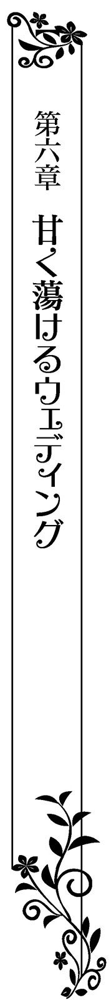
オールストン家とスペンサー家の結婚式の日は、抜けるような晴天と清々しい空気に恵まれた。
大聖堂には両家の親族や関係者、招待客たちが集まり、並んだ椅子に腰掛けて花嫁がやってくるのを待っている。最前列の椅子には礼服に身を包んだ第二王子も座っていた。公務や警固の安全面などを考えて、国王や第一王子は参加できなかったものの、自分たちの名代として第二王子を向かわせてくれている。ギルバードの結婚に王族もそれだけの重きを持つことを示し、オールストン家の立場を周囲に知らしめていることはここにいる誰もがわかっていた。
大聖堂の両側には、光を受けてきらめくステンドグラスの大きな窓が連なっている。モチーフには聖書の有名どころのシーンが使われていて、見る者をとても敬虔な気持ちにさせた。
皆は静かに結婚の宣誓の儀が始まるのを待っているが、内心では花嫁の登場を心待ちにしていることが雰囲気で伝わっていた。
大聖堂の中心は、赤い天鵞絨の絨毯が敷かれた小道になっている。大扉から続く道の終点には祭壇があり、そこには礼服を纏った大司祭と、白いタキシード姿のギルバードがいた。
花婿として身に纏うものは、すべて白だ。長身で無駄な肉がまったくないすらりとした姿に、とてもよく似合っている。
癖がない前髪が少し長めの黒髪を、今は整髪料で後ろに撫でつけた髪型のせいで、ギルバードの端正な顔が露わになっている。式に参加している女性陣が、思わず見惚れてしまうほどだ。
だがギルバードが待つのは、たった一人だ。その存在が正面扉を開けてやって来るのを、心待ちにしている。
やがて、式の始まりを告げる鐘が鳴った。その音に合わせて、扉が開く。
開かれていく扉に、皆の視線が集まる。ギルバードもそちらに目を向けた。
真っ白な一輪の花のような姿が、扉から入ってきた。ウェディングドレスは白サテンで仕立てられ、小花が刺繍された薄いレースを重ねられていた。レースの上には小さなダイヤモンドが縫いつけられていて、シェリルが歩く動きに合わせて光を弾き、彼女の周囲にきらきらと美しい光を生んでいた。
肌を他人に見せるのを拒むかのように、シェリルのウェディングドレスは長袖だ。だが軽やかさを出すために、袖は薄く繊細なレースでできている。襟も高い作りになっていたがそれもレースを重ねてできたものだ。
裾は後ろが長く、二人の幼い少女が持ってくれている。同じく長いレースでできたヴェールを被っているシェリルは、俯き加減でゆっくりとこちらに歩いてきた。顔はまだ見えないが、ギルバードが見惚れてしまうほどの美しい笑顔があることは、間違いない。
ギルバードは待ちきれなくなって、思わずシェリルに手を差し伸べる。駆け寄って抱きしめたい気持ちは、何とか抑えられた。
シェリルはその様子を見て、嬉しそうに笑う。ヴェール越しでも、シェリルの笑顔はギルバードにははっきりとわかった。
シェリルも早くギルバードの隣に並びたいのか、急ぎ足になる。躓きそうで心配になるが大丈夫そうだった。代わりに、扉から入り込んできた悪戯な突風が、シェリルのヴェールを巻き上げた。
「きゃ......っ」
シェリルの顔が、露わになってしまう。だが亜麻色の長い髪を纏めて白薔薇をかたどった髪飾りをつけたシェリルの面は、ギルバードと同じく、その場にいた者たちの目を奪うほどに美しい。
ギルバードが息を呑んで見惚れている間に、ヴェールはまたゆっくりと落ちてシェリルの顔を隠した。気を取り直したようにシェリルはブーケを持ち直し、ギルバードの方に歩いてくる。
あともう一歩というところでギルバードはもう我慢できず、シェリルの手を取って引き寄せていた。突然のことにシェリルは身体のバランスを崩し、ギルバードの胸に倒れ込んでしまう。
胸元に飛び込んできた柔らかな存在を、ギルバードはぎゅっと強く抱きしめた。
（ようやく、手に入れた）
少年時代から想いを寄せていた存在を、自分の妻として迎え入れることができた。その喜びは、言葉ではなかなか言い表せないほどだ。
「ご、ごめんなさい、ギルバード」
自分が上手く体勢を立て直せなかったことを、シェリルが慌てて謝ってくる。ギルバードのせいなのだが、気づかずに素直に謝ってしまうところがシェリルらしかった。
「いや、すまない。俺が強く引きすぎた。大丈夫か？」
「ええ！ ギルバードの傍なら、いつだって安心よ！」
全幅の信頼を寄せているがゆえの言葉は嬉しい。
ギルバードは何とも言えない複雑な表情でシェリルの腰を支えたまま、黙り込んでしまう。シェリルが、不思議そうにギルバードを見上げた。
「ギルバード？ あの......もう大丈夫よ？」
大司祭も軽く咳払いをして、式を促そうとする。ギルバードはゆっくりとシェリルを離しながら、息をついた。
シェリルのあまりの可愛さに、このまま抱きしめてしまいたくなる衝動をギルバードはなんとか堪えた。
ギルバードは実に不埒なことを頭の中で考えながらも、大司祭が仰々しい声で結婚の宣誓の祝詞を紡いでいくのを完璧な笑顔で聞く。
互いに夫婦になることを宣誓し、誓いのくちづけをするために向かい合う。シェリルのヴェールをそっと持ち上げて面を露わにさせると、シェリルはなぜか不安そうな表情になっていた。
「シェリル......？」
いったいどうしたのかと、ギルバードは心配げに呼びかける。シェリルはブーケで顔を隠すようにしながら、言った。
「あ、あの......私の格好、変ではない？ さっきの風が吹いたときに、皆が驚いたようだったから......もしそうだったら、ギルバードに悪いと思って......」
自分の魅力にまったく気づいていないがゆえの、検討違いな心配だった。ギルバードはシェリルの頬を両手で包み込み、優しく力を加えて自分を仰がせる。
そして蕩けるような笑みを浮かべた。
「何も心配することはない。君はとても綺麗だ。皆は君があまりにも綺麗すぎて、驚いてしまったんだよ」
ギルバードの言葉で、シェリルは安心できたらしい。嬉しそうに笑いかけてくる。
その笑顔は花がほころぶように、美しさと可愛らしさを同時に持つものだった。ギルバードの心を不意打ちで撃ち抜く威力も、充分に持つものだった。ギルバードはシェリルに覆い被さるようにして頬を寄せると、くちづける。
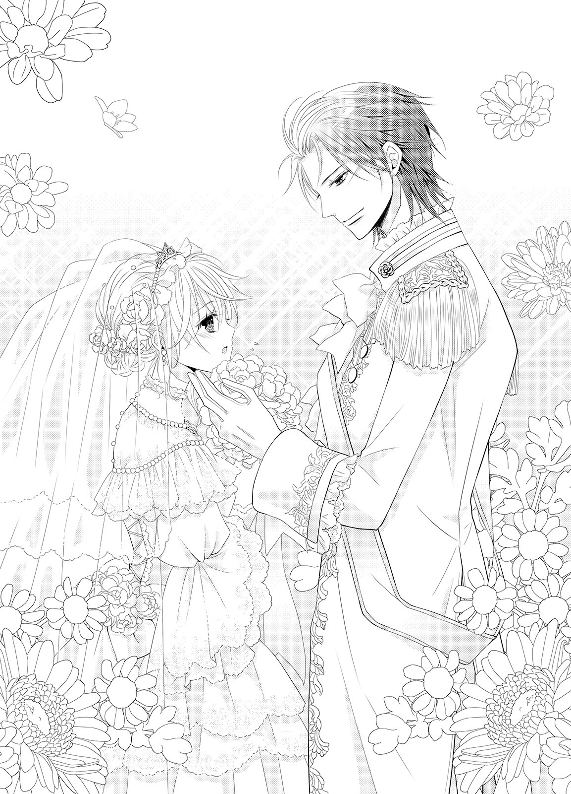
いきなりの誓いのくちづけにシェリルは少し驚いたようだったが、すぐにうっとりと幸せそうに目を閉じる。
だがギルバードの方は、ただ触れ合うだけのくちづけでは満足できない。シェリルの唇を押し割り、舌を潜り込ませた。
「ん......んんっ？」
宣誓のくちづけからは遠い官能的で情熱的なくちづけに、シェリルが大きく目を見開いた。ギルバードはシェリルの細腰を片腕でしっかりと抱きしめ、舌を搦め捕って擦り合わせるように味わう。
「う......ん、んう......っ」
本能的に逃げようとするシェリルの舌を捕らえて深く味わい続けていると、腕の中の身体がぐったりとした。ギルバードの耳に、大司祭の責めるような空咳が届く。
ギルバードはハッと我に返ると、慌ててシェリルの身体を支えて祭壇に向き直った。背中に参列者たちの呆れたような、笑いをこらえているような──様々な感情の視線がチクチクと突き刺さってくる。それでも大司祭が式を続ければ、再び厳かな雰囲気になっていった。
シェリルは怒っただろうか。少し心配になりながら見下ろすと、彼女はヴェール越しにもはっきりとわかるほど、耳まで赤くなっている。その可愛らしい様子に、ギルバードは再び理性を試されることになるのだった。
──結婚式を終えてオールストン家に戻り、招待客たちへの持てなしのパーティが開かれる。おめでたいこともあって、パーティは豪華だった。
しかしシェリルたちは呑気にパーティを楽しむことはできない。招待客たちをもてなす役目を早速こなさなければならなかったため、食事もままならない状況だった。
それでもシェリルにとっては、ギルバードの妻としての初めての仕事だ。ギルバードのように上手くいかなくても、精一杯もてなす。その成果は反映されて、招待客らは満足げに帰ってくれた。
パーティが終わったのは随分夜も更けた頃だ。その間、ヴェールこそ外していたもののウェディングドレス姿だったシェリルは、ギルバードの言葉でようやく今宵の自分の役目が終わったことを知る。
「シェリル、疲れただろう。もう休んでも大丈夫だ」
ギルバードの言葉にほっとしたせいか、途端に強烈な疲労感を覚えてしまう。立ち上がろうとしたが足に力が入らず、シェリルは苦笑しながら続けた。
「ギルバードだって疲れたでしょう？ 大丈夫？」
「それが、まったく。俺にとってこの日は夢にまで見ていた日だからな。嬉しくて疲れなんて感じないんだ」
それはずいぶん大袈裟ではないか。そう言おうとしたが、ギルバードが本当にとても嬉しそうな顔をしているから何も言えなくなってしまう。
（い、嫌だわ......何だか照れくさくて、ギルバードの顔をまともに見返せなくなりそう）
俯いてしまったシェリルを心配して、ギルバードが片手を伸ばしてくる。大きな掌で包み込まれるように撫でられると、とても気持ちがよかった。
「シェリル、大丈夫か？ もう休もうか」
ギルバードが近くを通り過ぎた召使いに、寝室の準備を整えるように言いつけようとする。ギルバードの優しさを感じてシェリルは思わず笑みを浮かべたが、次の瞬間、ハッとした。
（このまま休むって......駄目よ！ 今夜は初夜なのよ！）
いくら疲れたからといって、新妻が今夜、眠ってしまっていいわけがない。ギルバードの気遣いはとても嬉しいが、ここは彼の言葉通りにしてはいけないはずだ。
（い、いくらすでに結ばれていたとしても、結婚式の夜は特別よ！）
シェリルはすがりつくようにして、ギルバードの袖口を掴む。予想外の力にギルバードが少し驚いたように見返してきた。
「シェリル......？」
ギルバードを引き留めることができたが、どう伝えればいいのかわからない。シェリルは瞬時にいろいろと考えを巡らせて──これならば言えそうだと伝える。
「あ、あの、ギルバード。き、今日は私を好きにしていいの」
「え......？」
ギルバードの身体が、強張る。それは瞳にも伝わって、まじまじとシェリルを見返してきた。
そんなふうに見つめられると、何だかいたたまれなくなる。シェリルはギルバードの袖口を離さないままで、俯いた。
「今夜は、俺の好きにしてもいいと？」
ギルバードの声が、低くなる。その声はいつもの彼とは違い、少し掠れて何かを請う響きを持っていた。
蒼い瞳が、眇められる。反射的に手を離そうとしたが、ギルバードの方が早い。指を絡めるようにしてその手を捕らえられて、強く握りしめられる。
「あ、あの......私......」
ギルバードの瞳に、情欲が浮かぶ。言葉にしなくともその瞳だけで、シェリルを求めていることがわかった。
シェリルは小さく息を呑んだあと、気恥ずかしさに真っ赤になりながら頷いた。直後、ギルバードがシェリルを横抱きに抱き上げる。
突然のことに驚いたシェリルは身体のバランスを崩しそうになり、慌ててギルバードの首にしがみついた。ギルバードはシェリルを抱き上げたままで歩き出した。
召使いたちが、慌ててあとを追いかけてくる。就寝前の着替えを手伝うためだ。
だがギルバードは、仕事熱心な彼女たちを止めて言った。
「明日の朝まで、こちらが呼ぶまで誰も部屋に近づけるな」
召使いたちはその言葉の意味にすぐに気づき、皆で頬を赤くしながらも頭を下げる。シェリルはこれから自分たちがしようとしていることを彼女たちに知られて、さらに赤くなった。
「ギ、ギルバード！ な、なんてことを言っているの......!!」
「別に、おかしなことではないだろう？ 俺たちはこれから新婚初夜を過ごすのだから」
「初......っ」
「新婚初夜というものは、特別だ。夫婦が身も心も結ばれて、一番深いところまで繋がり合う。夫が妻を可愛がるのは当然だ。変な邪魔は入って欲しくない。もう君を、何の気兼ねもなく抱きしめられる」
あからさまな物言いにますます羞恥が強まって、シェリルは絶句してしまいそうになる。ギルバードはシェリルを抱き上げたまま、さっさと寝室に向かった。
ドアを開け、室内に入る。召使いたちの気遣いでカーテンは閉じられ、ベッドサイドの小さなテーブルにランプが用意されていた。
ベッドは整えられ、部屋には心休まる花の香りがかすかにしている。ギルバードはそのベッドの上にシェリルを下ろしながら身体を重ねてきた。
すぐさまギルバードがくちづけてくる。シェリルの唇を押し割り、舌を潜り込ませて、激しく官能的なくちづけを与えてくる。あっという間にシェリルの身が蕩けてしまうものだ。
「ん......んっ、んん......っ」
「シェリル......君からも、舌を絡めてみてくれ」
羞恥で躊躇うシェリルの舌を、ギルバードが甘噛みして引き寄せてくる。ギルバードの口中の熱さを感じて、シェリルは身を震わせながらも言う通りにしてしまった。
「んふ......んっ」
「そう、いい子だ......もっと、俺の舌に絡みついて」
「んん......っ」
言われるままに、シェリルはギルバードの舌に自分のそれを擦りつける。唾液が溢れてぬるぬるとした感触が、自然とシェリルの身体を高めていった。
ギルバードはシェリルからの積極的なくちづけに煽られたかのように、性急な動きで身体を撫でてきた。ウェディングドレスの襟を開き、たっぷりとしたスカートを腰までたくし上げる。
下肢に外気を感じて、その頼りなさにシェリルはハッとした。ウェディングドレスを着たままでの行為は、何だか背徳感があって恥ずかしい。
「待、待って、ギルバード......っ」
シェリルはギルバードのくちづけからかろうじて逃れて、言う。だがギルバードはシェリルの項に頬を埋めて耳朶を舐めてきた。
ぬるりとした感触に、シェリルは小さく喘いでしまう。
「待たない。今夜は俺の好きにしていいんだろう？ 君が、そう言ったんだ」
「で、でも......タキシードやドレスは、脱がなくちゃ......し、皺になってしまうわ」
「ああ......」
そんなことを気にしていたのかと言わんばかりの瞳を向けて、ギルバードは身を起こす。だがベッドから降りる気配はなく、シェリルの上体を起こしてやりながら膝立ちになった。
「では君が、脱がせてくれ」
「え......」
そんな恥ずかしいことは、まだできない。シェリルは真っ赤になって身を強張らせる。
ギルバードはシェリルの片手を取ると、自分の胸元に引き寄せた。
「妻としての役目の一つでは？」
そう言われてしまうと、反論できない。シェリルは羞恥と戦いながら、ギルバードのタイを外し、上着を脱がせ、シャツのボタンを外していく。
引き締まった上半身が露わになると胸がドキドキしてきて、すぐに手が止まってしまいそうになる。その度に微笑を含んだギルバードの声に促され、何とか上半身を脱がせることに成功した。だが、下半身にはとても手が出せない。
見下ろした先で、ギルバードの雄が昂りを示しているのをはっきりと確認してしまい、もうどうしたらいいのかわからなくなる。ギルバードがシェリルの狼狽えように、喉の奥で笑った。
「どうしてそんなに恥ずかしがるんだ？ 俺に抱かれるのは、初めてじゃないだろう？」
「そ、それはそうだけど......な、何でなのかしら......すごくドキドキしてしまって......」
その理由に、シェリルはふと思いついて言う。
「多分結婚式をしたからだわ。ギルバードの妻になれたんだって実感したから......」
「ああ、そうだ。君はもう俺のものだ」
ギルバードの手が、シェリルのウェディングドレスに再び触れる。その手がドレスを脱がしてくれることがわかり、思わず身を縮めてしまったが──羞恥を堪えた。
衣擦れの音が、やけに耳につく。だが、ギルバードの手は気持ちいい。
（好きな人の、手だから......）
「だがな、シェリル。大事なことを忘れないでくれ」
果物の皮でも剥くかのように、ドレスが肌から離される。ウェディングドレス用の下着は白で統一したものだが、普段よりも頼りない。
コルセットと薄布の下着と、太腿まで来る長靴下、それを止めるガーターベルトだ。ドロワーズを履いていない頼りなさが強く感じられて、シェリルは膝を擦り寄せる。
ギルバードの手が、ドレスをベッドの下に落とした。シェリルを抱き寄せてむき出しの肩口にくちづけながら、背筋のコルセットのリボンを緩めていく。
「あ......っ」
ギルバードの手がコルセットを剥ぎ取る。シェリルは慌てて両腕で胸の膨らみを隠した。
ギルバードはシェリルの首筋に唇を押し当てながら囁いた。
「俺も、君のものだ。俺が持つ権力も金銭も身分も、俺の命も心も、すべて君のものだ」
とても情熱的な告白だ。シェリルは愛される喜びを感じながらも、少し不安になる。
「でもギルバード......私、何もお返しできないわ......」
ギルバードが小さく笑って、両手で胸の膨らみを捉える。
「君が時折こうして俺に愛情表現してくれれば、それでいい」
「愛情表現って......あ、やっ、ん......」
ギルバードの両手が卑猥に動いて、シェリルの胸を揉みしだく。柔らかい乳房はギルバードの手の動きに合わせて自在に形を変えた。ギルバードの指が握り締めるように沈み込むと、胸の形はますますいやらしいものになる。
ギルバードの指の間から乳房がむっちりとはみ出す様子に、シェリルは赤くなる。軽く身を捩って逃れようとするが、ギルバードは乳房を揉み込みながら谷間に顔を埋めた。
唇が、強く肌を吸う。汚れない瑞々しい肌には、すぐにくちづけの痕がついた。
ギルバードの唇はシェリルの乳房の形を確かめるように動く。唇だけではなく舌もあとを追いかけた。
「あ......あ、あ......」
堪えようとしてもできない喘ぎが、小さく零れてしまう。恥じらいに口を押さえようとすると、ギルバードが両手で膨らみを中心に押し寄せてきた。
二つの頂を寄せて、舌で一度に舐め回す。
シェリルはじんわりと全身に広がっていく快感に、身を震わせた。声を漏らさないようにするが、唇を押さえた手の隙間から零れてしまう。
ギルバードが胸から顔を上げ、優しく笑いかけた。
「俺のすることが気持ちいいなら、そうだと教えてくれればいい。感じて、よがって、喘いでくれればいいんだ」
「そ、んな、恥ずかしいこと......！」
できないわ、と言おうとすると、ギルバードが再び乳首を舐めてきた。今度は舌に力を入れて、強く弄ってくる。
それだけには留まらず、唇で吸い上げたり口中で舌先でなぶってきたりもする。
「や......そ、んなふうにしちゃ、駄目......っ」
荒い息を繰り返しながら、シェリルは快楽の涙を滲ませてしまう。ギルバードはシェリルをベッドに押し倒した。
「ああ、気持ちよくなってしまうからか？」
その通りだ。シェリルが無言を通すと、ギルバードはしなやかな足の間に腰を割り込ませてきた。
慌てて阻もうとしたが、遅い。ギルバードの腰を膝で挟み込むだけになる。
シェリルの足の間に、ギルバードの腰が押しつけられる。そのまま軽く押し上げるように刺激されると、膨らんだ雄の固い感触が伝わってきて、シェリルは身を震わせた。ギルバードの雄が中に入りたそうにしているのが、嫌でもわかった。
「......ギ、ルバード......っ」
「わかるか？ 俺が、君を欲しがっていることを......」
ギルバードが自分の中に入っていることを想像してしまい、シェリルの腰の奥に熱が溜まっていく。ギルバードはシェリルの片方の膝裏に片手を差し入れると、軽く持ち上げた。
「きゃ......！」
足が軽く開いてしまい、シェリルは慌てる。ギルバードは持ち上げた足の内腿に唇を押しつけ、ねっとりと舐め上げてきた。唇が、秘所に向かって上がっていくのがわかる。
シェリルは両手を伸ばし、ギルバードの唇が蜜壺の入り口に触れようとするのを阻もうとする。蜜壷を口淫されるのはとても気持ちよかったが、気持ちよすぎてどうにかなってしまいそうで怖い。
「だ、駄目、ギルバード......それ以上、しないで......」
「駄目だ。今夜は君のお願いは聞かない」
自分を好きにしていいと言ったが、もしかしたらとんでもなかったのかもしれない。シェリルが口ごもると、ギルバードは内腿をちゅっ、ちゅっ、と音を立てて啄みながら笑った。
「君にも、手伝ってもらおうか」
「......手伝うって......」
ギルバードの指が、シェリルの下着の結び目を解く。腰骨の辺りで細い紐で結ばれただけの下着は、ギルバードがそれを軽く引っ張っただけであっという間に肌から離れてしまった。
自分の花弁に意図せず指で触れてしまい、シェリルはビクンッ、と軽く仰け反ってしまう。指先に触れた花弁は滲み出した愛蜜でじっとりと濡れていて、ぬめった感触がした。
（私......こんな、濡れて......？）
「シェリル。そこを......君の指で開いてくれ」
「えっ......!?」
とんでもない要求に、シェリルは大きく目を見張る。だがシェリルが反論する前に、ギルバードが蜜壺に吸いついた。
愛蜜を啜りあげるようにくちづけられて、シェリルは腰を震わせる。同時に花弁に触れていた指が蜜壺の中に押し込まれた。
「あ......っ」
ぬぷりと自分の指が蜜壺の中に沈み込む。自分のそこが蜜を滲ませて濡れているのを感じる。
ギルバードが指を動かすと、ちゅぷくちゅ、と、水音が上がった。
（い、嫌だわ......こんなに、音がして......）
「わかるか、シェリル。こんなにいやらしい音がしている。君のここが......俺を感じて濡れているんだ」
「や......言わない、で......！」
「自分で確かめてみるといい」
ギルバードの舌が尖り、シェリルの指を蜜壷の奥に飲み込ませるように押してくる。そこから手を離したいのに、ギルバードの唇が許さない。
「......は、んん......っ」
「シェリル......その指をそこに挿れてごらん」
「......や......駄目......っ」
できない、と思っていたのに、ギルバードの言う通り指が沈んでしまう。濡れそぼったそこは熱くうねり、シェリルの指を引き込むように飲み込んだ。
「どうだ？ 君の中......熱くうねっているだろう？ その中に俺のを呑み込むと、きつく締めつけてくれるんだ」
「やぁ......っ」
「動かしてごらん。そうだな......この濡れた花弁の間を、擦るんだ」
「あ......あぁ......っ、あん......駄目、駄目なのに......」
そんなはしたないことをしてはいけない。頭ではそう思うのだが、シェリルは指を動かし始めてしまう。
「ああ......シェリル、とてもいやらしくて可愛い」
ギルバードはシェリルの内腿に両手を添えて、足をさらに開かせた。そして尖らせた舌先で、シェリルの膨らんだ花芽をくりくりと弄り回した。
「あ......っ、あっ、あぁ......っ」
「ん......そうだ、もっと激しく動かすんだ......」
蜜が、どんどん溢れてくる。シェリルは自分の指が濡れているのを感じて止まらなくなり、ギルバードの舌の動きに合わせて、指を動かし続ける。
下肢に伸ばした両腕の間で乳房が押し寄せられ、膨らみが強調される。尖った頂はひりつきそうなほどに固くしこって、シェリルが身悶えると震えた。視線を下ろせばそのいやらしい様がよくわかり、シェリルは羞恥と快楽を同時に感じてしまう。
絹の靴下とガーターベルトだけという格好で足を開き、自ら蜜壺を愛撫しながら花芽をギルバードの舌で可愛がられている。扇情的な艶姿に、ギルバードは欲情にまみれた声で囁いた。
「......素敵だ、シェリル......指を、もっと奥まで挿れてごらん」
「駄目......そんなこと、できな......っ」
「できるさ。その程度ではもう満足できないはずだ。さあ......」
ギルバードの舌が、シェリルの指を蜜壺の中に押し込む。ぬぷぷ、と指が沈んで、蜜壺の中の熱とうねり、そしてぬるつき具合を感じてしまう。
「そう......いい子だ。そのまま出し入れしてごらん。俺が、君のそこを可愛がってあげるように」
「ん......んぁ......あぁ......っ」
頭の中が痺れたようになって、何も考えられなくなる。ただギルバードの声に導かれるままに、指を動かしていく。
ぬちゅぬちゅという音は、シェリルの指から上がるものだけではない。唾液をたっぷり乗せたギルバードの舌が花芽を口淫する音も混じっている。
「あ......あぁ......ギルバード.........ギルバード......っ」
「イキそうかい、シェリル？ そうだ、そのまま......」
「ふあ......ああぁっ!!」
ギルバードが花芽を唇で強く挟み込み、吸った。同時にシェリルの指も感じる部分を見つけて、そこを強く押して──堪らない快感にビクビクッと身を仰け反らせる。どっと溢れてきた蜜を、ギルバードが余すことなく味わった。
全身をひくつかせながら、シェリルは茫洋とした瞳でギルバードを見返す。シェリルの蜜壺から顔を上げたギルバードは、実に嬉しそうに笑った。
恥ずかしいことをさせて、と文句を言いたいのだが、その笑みを見ると何も言えなくなってしまう。
「......とても、感じたみたいだな？ 可愛い」
ちゅっ、目元にくちづけられる。
「知、知らない......っ」
自分でもずいぶん子供っぽい反撃だとわかっていたが、その程度しか言えなかった。ギルバードは楽しげに笑いながら、ズボンの前をくつろがせる。
そこから現れた男根を手に取ると、シェリルの濡れそぼった入り口に押し当てた。
嵩の張った先端が、慣らすように数度割れ目を行き来する。圧迫感に恐れにも似た感覚がやってくるが、それが自分を求めている証拠だと思うとシェリルの胸も高まった。
ギルバードが、シェリルの上に改めて覆い被さる。腰を押し回すように先端で花弁を揺さぶられ、軽く押し広げられる。シェリルは焦れて、思わずギルバードの首にしがみつくように抱きついた。
入ってくると思っていたものが、来ない。それが思った以上の空虚感を与えてくるから、シェリルは涙目になって言う。
「意、意地悪......」
ギルバードが、小さく笑い返した。
シェリルはもどかしさに、顔をしかめる。ギルバードはそのシェリルの唇にくちづけながら、ゆっくりと腰を押し進めた。
「ん......っ」
ギルバードの怒張が、ずぶずぶと入り込んでくる。狭い隘路を押し広げられる感覚にシェリルは息を詰めながらも、蜜壺は思う以上に柔軟に受け入れていた。
ギルバードの肉棒が、シェリルの奥を軽く突いた。
「あ......っ」
軽く跳ねるように腰を揺らすと、ギルバードがいたわるように臀部を撫でた。
「大丈夫か？」
大きな掌で、シェリルの腰も優しく撫でてくる。圧迫感に息が詰まったのは一瞬で、すぐに蜜壺はギルバードのかたちに馴染んだ。
シェリルは小さく頷く。
「だ、いじょうぶ、よ......」
「そうか。だったら......動いて、いいか？ 君の中でじっとしているのは、正直、つらい」
ギルバードが苦笑しながら言う。シェリルはギルバードの肩口に顔を伏せるようにして、かすかに頷いた。
直後、ギルバードの腰が荒々しく動いた。
「あ......っ？ あ、ああっ！」
シェリルの腰を掴んでベッドから浮かせ、自身に引き寄せる。膝立ちになったギルバードの腰が、叩きつけるように抽送してきた。
太く逞しい肉棒に花弁を押し広げられ、熱くうねる中を欲望のままに張り詰めた先端で突かれ、擦られる。最奥を突き破られてしまいそうな攻めように、シェリルはついていくことができない。
「あ......っ、ああっ!! あっ、あっ!!」
ギルバードの思うままに揺さぶられて、喘ぐ。ギルバードはいつになく荒い息を繰り返しながら、シェリルの中を貪った。
「は......っ、シェリ、ル......っ！」
掠れた声には男の艶が含まれていて、それだけでシェリルの胸をきゅんっ、とときめかせた。ギルバードの余裕のなさが自分を求める証のように思えて嬉しく、シェリルは無意識のうちにギルバードの男根をきつく締めつけている。
ギルバードが息を詰め、喉の奥で低く笑った。
「すごい締めつけだ......俺のを飲み込んで、そんなに気持ちがいいのか？」
卑猥な言い方に、反論もできない。突き込まれる動きが強い快楽を与えてくるから、シェリルは喘ぐだけだ。
だが、蜜壺は応えるようにまたきゅんきゅんと締まる。
ギルバードは笑みを深めると一度動きを止めて、シェリルの中に留まったまま位置を変えてきた。
ベッドにうつ伏せにされ、腰だけを高く上げさせられる。蜜壺の中でギルバードの雄が動くのを感じて、たまらない。
「あ......ああっ」
「今度はこうして......突いてあげよう」
臀部をギルバードの両手がわし掴み、割れ目を押し広げながら引き上げる。獣のような体位で貪られることに、羞恥を抱いたのは一瞬だ。すぐにギルバードの律動が与える快楽に、喘いでしまう。
「は、あ......あっ！ ああっ!!」
汗ばんだ肌がぶつかり合う音が耳に届くほどに、激しい。シェリルは身を支えることができなくなり、肩から崩れ落ちてしまう。
ギルバードはそんなシェリルの背中に覆い被さりながら、片手で胸を掴んで揉み込み、もう片方の手を繋がった場所に伸ばして花芽を押し回した。
次々に与えられる快楽に、シェリルはさらに喘ぎを高める。
「や......ああっ、お、かしく......な、る......っ」
気持ちよすぎて、死んでしまう。
ギルバードは胸を弄っていた手を上げてシェリルの顎を掴み、強引にこちらを振り向かせた。そして後ろからくちづけながら、今まで以上に腰の動きを速める。
「ん、んん、んー！」
全身をギルバードに染められていくような強い快楽に、絶頂を迎えるのにさほど時間はかからない。シェリルはきつく眉根を寄せながら、蜜壺を締めつけて達する。
ギルバードもそのあとを追い、シェリルの口中に呻きを吹き込みながら、熱い精を放った。
身体の一番奥に感じるギルバードの熱に、シェリルは身を震わせる。繋がったままの下肢から呑み込みきれなかった欲望の残滓が滴り落ちるのが、わかった。
ギルバードは荒い息をついて、改めてシェリルの唇にくちづける。
「愛してる、シェリル......」
低く甘い囁きが、心地よい。シェリルはとても満たされた気持ちになりながら、ギルバードに応えた。
「私も、愛してるわ」
「ギルバード！ ギルバード!?」
オールストン公爵夫人が息子を探していることを知り、シェリルも彼の名を呼びながら庭に出た。
気持ちのいい晴天の下、庭の緑や花々がシェリルの瞳を楽しませる。公爵夫人の用が終わったら、一緒に庭を散歩しようと誘ってみようと思いながら、夫の姿を探す。だが、見つからない。
「ギルバード！ いないの......!?」
出掛ける用事があるとは聞いていない。館の方は公爵夫人が探しているから、シェリルはもう少し庭を探すことにする。
直後、シェリルの背後に何かが突然覆い被さってきた。驚いて悲鳴を上げようとした唇は、かぶさってきたものに塞がれる。
ちゅっ、と軽く啄ばむ口づけを与えたあと、シェリルの瞳を覗き込んで笑いかけてくる。それは、ギルバードだった。
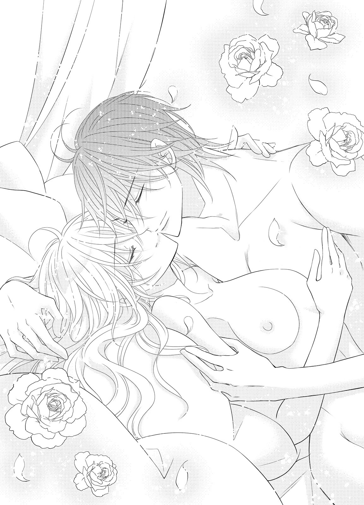
「驚いたわ......！ 急に変なことしてこないで」
「変なことじゃないだろう？ シェリルが可愛かったから、したくなったんだ」
まったく悪びれた様子もなく、ギルバードは言う。これではそんなことで文句を言う自分がおかしいみたいではないか。
「シェリル、ちょっと一緒来てくれないか？」
「え、ええ......いいけど......」
ギルバードに導かれるまま、庭の奥の方に向かう。
「どうやら迷い込んだようだ。どうせなら、面倒を見てやろうかと思うんだが」
ギルバードが連れていった低い立木の元に、猫が三匹いた。親子の猫だ。子猫はまだ生まれたばかりらしく、小さくにゃあにゃあ鳴いている。とても可愛くて、シェリルは腰を下ろしながら猫に手を伸ばした。
そっと驚かせないように指で触れると、猫はされるがままになっている。どうやらここを気に入っているようだ。
「可愛いわ......！ 私は構わないわ。しっかりお世話しましょう！」
「そうか。となると、俺とシェリルの、最初の家族になるな」
ギルバードの物言いにシェリルは驚いて、見返す。するとギルバードの端正な顔が当たり前のように近づいて、口づけてきた。......今度は触れるだけではなく、舌を搦め捕ってくる口づけだ。
庭でなんてはしたないとシェリルが慌てて押し離そうとするより早く、ギルバードは身体を離す。そしてシェリルの唇を味わった自分の口を、見せつけるように舌で舐めた。
卑猥な仕草はしかしとても艶っぽくて、ドキドキしてしまう。シェリルはギルバードから思わず目を逸らしてしまった。
それをいいことに、ギルバードは今度は頬にくちづけてくる。
「ギルバード！ また......！ は、はしたないわ！」
「そうか？ 俺と君は新婚だ。これくらい普通だろう」
「そ、そうかもしれないけど......で、でも節度は大事だと思うわ！」
シェリルは力いっぱい反撃する。ギルバードの動きが止まった。
考え直してくれたのかとホッと胸を撫で下ろそうとすると、ギルバードはにっこり笑う。
「すまない、シェリル。それは無理な相談だ。いったい君は何年俺を我慢させて待たせたと思っているんだ？」
却下だ、と続けて、またくちづけてくる。結局シェリルは反論できないまま、ギルバードの唇を受け止めた。
（だって私も......ギルバードにキスされるの、本当は嬉しいんだもの）
ギルバードが、唇をわずかに離して囁く。
「愛してる、シェリル。これまでもこれからも俺には君だけだ」
ギルバードの言葉は、シェリルの心を満たす。こうして彼は、ずっと自分に愛を伝えてくれるのだろう。
「私も......愛してるわ、ギルバード」
（そして私もあなたにずっと愛を伝えていくんだわ）
シェリルは愛しい夫に自分から唇を重ねた。
二人の愛が永遠に続くような、幸せなキスだった──。
あとがき
こんにちは。舞姫美です。ロイヤルキス文庫さまではなんと二作目となりました。お手に取って下さった方、ありがとうございます！
前回は初々しさ全開のお話でしたが、今回はえろ可愛いを個人的に心がけたお話です。
だって幼馴染ですよ？ それまで家族同然だった一番近い異性が、急に押せ押せアプローチ！ しかもその理由が嫉妬からだなんて......萌えます。ぱたり。しかもギルバードはシェリルより年上ですが、彼女に関してだと余裕がなくなる性格なため、色々と書きながらニマニマしておりました。
ギルバードばっかり余裕ないのかと思えば、潜在的にシェリルも彼を好きだったわけで......はよ気づけ！ と書きながら何度も思った次第です。だから二人が結ばれたシーンは、書いてる側としては良かった良かった（涙）と。......結ばれてからのギルバードはおかげで愛情表現にセーブというものがまったくなくなりましたが（汗）。
変わっているように思えて実は変わっていなかったり、変わっていないと思っていたのに実は変わっていた──そういうことって色々とあるなぁ、とか、そういう想いも込めさせていただきました。
スケジュール的に結構大変だったのですが、その萌えで乗り越えました（笑）。幼い頃からの甘酸っぱい、でも大人になったからそれだけじゃ我慢できない、な、恋物語をどうぞ楽しんでいただけますように。
その甘酸っぱいお話に素敵なイラストをつけてくださった龍胡伯先生、どうもありがとうございます！ イラストごとに違うシェリルのお洋服ラフを見ているだけで、とっても楽しかったです。ギルバードも紳士だけど余裕のなさがそういうシーンでは出ていて、ラフを頂くたび悶えました。
こうして次のお話でお目にかかることができるのも、作品に関わって下さった方々とお手に取って下さった方々のおかげです。毎度同じような謝辞しかお伝えできないのがもどかしいですが、最大限の感謝を。どうもありがとうございます！ 少しでもこうしてお届けできたお話で、幸せな気持ちになっていただけることを祈ります。
また別のお話でお会いできることを願って。
ギルバードの妻になってから、シェリルはずいぶんと忙しくなった。その主だった仕事は、社交的なものが中心だ。公爵子息としての仕事を持つギルバードの手伝いが少しでもできればいいと、苦手な社交界にも積極的に足を運んでコネクションを広げていた。
ギルバードは無理しなくていいと、いつも言ってくれる。だが自分ができることならば、何でもしたかった。これまでギルバードにしてもらってばかりだったのだ。少しでも役に立ちたい。
この日もシェリルは、公爵夫人とともに会合を兼ねた夕食会に参加した。帰宅したあとはひどく疲れてしまい、カウチソファにもたれて─少しだけと目を閉じてしまったが最後、あっという間に癒しの眠りに落ちてしまっていた。
そのシェリルを、髪や頬を撫でてくれる優しい手が起こしてくれる。シェリルがゆっくりと瞳を開くと傍にはギルバードが腰かけていて、シェリルを自分の胸にもたせかけてくれていた。寝心地がよかったのは、ギルバードのぬくもりのおかげか。
シェリルは慌てて起き上がる。
「ご、ごめんなさい、ギルバード！ 私、うたた寝してしまっていたのね......」
「構わないさ。最近色々な会合や付き合いに参加してるんだろう？」
シェリルは首を振って、笑った。
「社交界が苦手ってもう言っていられないわ。私はギルバードの妻なんだもの。これくらいできるようにならなくちゃ駄目でしょう？」
ギルバードが眩しげに瞳を細めて、シェリルの頬に改めて手を伸ばす。
「君は本当に......可愛いな」
「ま、またそういうことを言って......あ......っ」
ギルバードの端正な顔が近づき、シェリルの唇に柔らかく啄むような優しいくちづけを与えてくる。自分を愛していることを教えてくれるくちづけをもらえれば、疲れもすぐに癒される感じだ。
「......ん......んん......ギル、バード......っ」
だが触れてぬくもりを伝え合うだけのくちづけでは、ギルバードの方はすぐに満足できなくなってしまったらしい。シェリルの唇を押し割り、舌を口中に潜り込ませて官能的な激しいくちづけを与えてくる。だがすぐにハッと我に返ってくれた。
「疲れているんだったな。すまない。すぐに休んだ方がいい」
言ってシェリルの身体を抱き上げ、ベッドに運んでくれる。シェリルは反射的に手を伸ばしてジャケットの裾を摘み、ギルバードを止めた。
求められることの喜びを覚えたのも、ギルバードのおかげだ。シェリルは赤くなりながら続けた。
「......あ、の......い、いいの......」
シェリルの言いたいことにすぐに気づいてくれたギルバードは、嬉しそうに笑って首を振る。
「無理をしなくていい」
「無理......なんかじゃないわ。私も、ギルバードに触れて欲しいって思ったんだもの......」
言ってしまってから、シェリルは耳まで赤くなる。これでは自分からギルバードを欲しがっているようではないか。はしたないと思われないか。
「あ、あの......私......」
「まったく君は......本当に可愛すぎて困る」
「あ......っ」
少し困ったように言いながらも、ギルバードは激しく濃厚なくちづけを与えながらあっという間にドレスや下着を取り払ってしまう。あられもない姿に気づき慌てて両腕で身体を隠そうとすると、ギルバードが小さく笑った。
「いつまでもこんなふうに恥ずかしがって......可愛いな」
ギルバードも服を脱ぎながら感じやすい耳を舐めくすぐってくる。シェリルは小さく喘いだ。
「......あ......ん、ん......っ」
「声も、可愛い。もっと聞かせてくれ。ほら......指でこの熱いところを弄ってあげよう......」
「あ......ああぁ......駄目、指、そんなにしたら......ああっ！」
ギルバードは構わずに腰が足の間に入り込ませて閉じられないようにしてから、蜜壷の入口をなぞってくる。指が中に沈むと愛蜜が絡んで、くちゅ、くちゅり、と淫らな水音が上がり始めた。
「いかせてあげよう。達したら、眠るんだ」
「私だけなんて......駄目よ。そ、それに、ギルバードに抱かれるの......とても好きよ。安心するの。だから......きて」
「ああ、シェリル......っ」
広げられた脚の間にギルバードの腰が入り込み、高ぶった雄の先端がぬちゅり、と花弁を押し開く。シェリルは愛する夫の首に両腕を絡め、ギルバードを受け入れた。
欲望のままに動きたいだろうに、身体を気遣ってギルバードの抽挿は波に揺られるような穏やかなものだ。自分が大切にされていることがわかっていつもと同じように満たされる。ギルバードにも同じ気持ちになって欲しくて、シェリルは無意識に蜜壺を締めつけた。
「......シェ、リル......いけない子、だな......っ」
「わ、私、何か変なこと......？」
「いや......君の気持ちが伝わってきて、嬉しいだけだ」
「......私も......ギルバードの気持ちが伝わってきて、嬉しいわ......」
シェリルももっと深いつながりを求めて、腕だけでなく脚を絡める。どこもかしこもぴったりとくっついて繋がり合う情交も気持ちがいいものなのだと、シェリルは新たに夫に教えてもらった。
─緩やかな波に飲み込まれるようにして絶頂を迎えたあと、シェリルは深く寝入ってしまった。ギルバードはそんなシェリルを片腕に包み込むように抱きしめて、しばらく情事のあとの心地よさに身を委ねる。
すると、小さく子猫の鳴き声が聞こえた。声へと目を向けると、自分たちの家族の一員となった子猫がシェリルのベッドに飛び乗ってくる。そのまま構って欲しいのか、シェリルの頭に小さな頭を擦りつけた。
「う......ん」
子猫の仕草で、シェリルが小さく呻く。ギルバードは慌てて手を伸ばし、子猫を優しく抱き寄せた。
「......駄目だ。もう少し寝かせてやってくれ」
ギルバードの言葉を理解したのか、代わりに子猫はこちらの喉元に頭を擦りつけてくる。ギルバードは指先で喉元を撫でてやると、シェリルがさらに身を寄せてきた。ぬくもりが心地いいのか、ギルバードの肩口に頬を擦り寄せて抱きついてくる。これでは、この子猫と同じだ。
一匹の子猫。そして幼い頃から想い続けていた愛おしい妻。これ以上の幸せはないと実感しながら、ギルバードも目を閉じて穏やかな眠りについた。
純愛ウェディング ─公爵の蜜なるプロポーズ─
電子第１版発行 ２０１５年２月13日
著 者 舞 姫美
発行所 株式会社ジュリアンパブリッシング
東京都千代田区九段北１-５-９-３Ｆ
０３-３２６１-２７３５
ＨＰ http://www.julian-pb.com/
※本電子書籍は左記の作品に基づき製作されました。
発行 株式会社ジュリアンパブリッシング
ロイヤルキス文庫『純愛ウェディング ─公爵の蜜なるプロポーズ─』
(初版発行 ２０１４年11月30日)
(c)Himemi Mai 2015
※本書の一部、あるいは全部を無断で複製複写（コピー）、転載、上演、放送することは法律で認められた場合を除き、著作権の侵害となるため、禁止します。